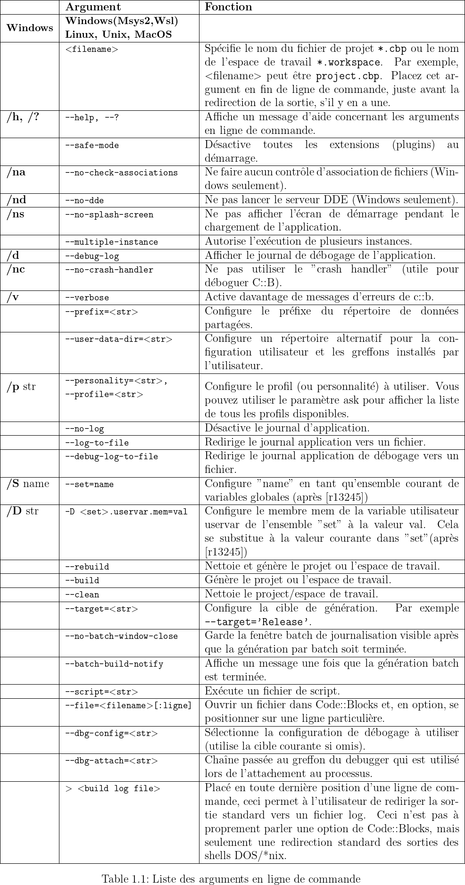
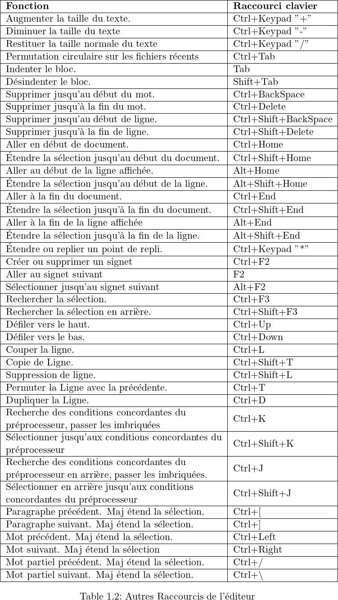
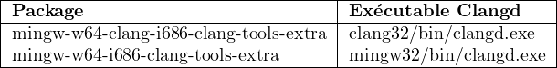
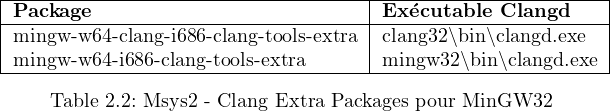

Merci à l’équipe Code::Blocks:
Anders F. Björklund (afb), Biplab Kumar Modak (biplab), Bartomiej wiecki (byo), Paul
A. Jimenez (ceniza), Koa Chong Gee (cyberkoa), Daniel Orb (daniel2000), Lieven de
Cock (killerbot), Yiannis Mandravellos (mandrav), Mispunt (mispunt), Martin Halle
(mortenmacfly), Jens Lody (jens), Jerome Antoine (dje), Damien Moore (dmoore),
Pecan Heber (pecan), Ricardo Garcia (rickg22), Thomas Denk (thomasdenk), tiwag
(tiwag), stahta01 (stahta01), Teodor Petrov (oBFusCATed), BlueHazzard
(BlueHazzard), Andrew Cottrell (AndrewCot), Miguel Gimenez (wh11204)
Et bien d’autres contributeurs...
Manuel original en Anglais et en Allemand (V1.x) par Mario Cupelli (mariocup)
Traduction en français de la version originale anglaise et corrections/ajouts dans la
version 2 par Gérard Durand (gd_on).
Quelques paragraphes sont directement recopiés depuis le WiKi de Code::Blocks.
N’hésitez pas à le visiter sur https://wiki.codeblocks.org/index.php/Main_Page,
les informations y sont peut-être plus à jour.
Il est permis de copier, distribuer et/ou modifier ce document dans le respect de la
licence ”GNU Free Documentation”, Version 1.2 ou toute autre version postérieure
publiée par la ”Free Software Foundation”.
Manuel Utilisateur mis à jour en novembre 2023
1Gestion de Projet Code::Blocks
Les textes de plusieurs paragraphes (par exemple 2 ou 3) sont les documentations officielles du
site Wiki de Code::Blocks (éventuellement revues et complétées) où elles ne sont disponibles
qu’en anglais. Cette documentation est une extension de la version originale 1.1, assemblée
et/ou écrite par Mario Cupelli.
Note : Remarque du traducteur : Les références aux menus sont traduites en
français. Cela suppose donc que vous avez installé la francisation de
l’interface de Code::Blocks que vous pouvez obtenir, notamment via
le forum, dans la rubrique CodeBlocks Translation. Ne plus utiliser
celle du site original LaunchPad bien trop ancienne et largement
dépassée. Utiliser plutôt une nouvelle version, aussi sur Launchpad,
via https://launchpad.net/codeblocks-gd. Dans cette version
en français, et par souci de simplicité, on a gardé dans tout ce
document les images de la version en anglais.
L’illustration ci-dessous montre l’apparence de la fenêtre de l’interface utilisateur de
Code::Blocks.
Figure 1.1: Environnement de développement Intégré (IDE) de Code::Blocks
Gestion
Cette fenêtre contient l’interface ’Projets’ qui dans le texte suivant sera référencée
comme vue du projet. Cette vue affiche tous les projets ouverts dans Code::Blocks
à un instant donné. L’onglet ’Symboles’ de la fenêtre Gestion affiche les symboles,
les variables etc.
Éditeur
Dans l’illustration ci-dessus, un fichier source nommé hello.c est ouvert avec
colorisation de syntaxe dans l’éditeur.
Liste des fichiers ouverts
affiche une liste de tous les fichiers ouverts dans l’éditeur, dans cet exemple :
hello.c.
CodeSnippets
peut être affiché via le menu ’Affichage’ →’ CodeSnippets’ . Ici vous pouvez gérer
des modules de texte, des liens vers des fichiers et des liens vers des urls.
Journaux & autres
Cette fenêtre est utilisée pour sortir des résultats de recherche, des messages envoyés
par un compilateur etc...
La barre d’état donne un aperçu des paramétrages suivants :
Chemin absolu d’un fichier ouvert dans l’éditeur.
L’éditeur utilise l’encodage par défaut de votre système d’exploitation. Cette
configuration sera affichée par défaut.
Numéros de ligne et de colonne de la position actuelle du curseur dans l’éditeur.
Le mode de configuration du clavier pour insérer du texte (Insertion ou
Remplacement).
État actuel du fichier. Un fichier modifié sera marqué comme Modifie sinon cette
case reste vide.
Autorisation d’un fichier. Un fichier qui est en lecture seule sera affiché Lectureseule
dans la barre d’état. Dans la fenêtre ’Ouvrir la liste de fichiers’ ces fichiers seront
identifiés par une icône de verrouillage superposée.
Note : Dans l’éditeur courant, l’utilisateur peut choisir les propriétés du
menu de contexte. Dans le dialogue apparaissant dans l’onglet
’Général’ , l’option ’Le fichier est en lecture seule’ peut être
sélectionnée. Cette option marquera le fichier correspondant comme
étant en lecture seule pour Code::Blocks, mais les attributs en lecture
et écriture du fichier original ne seront pas modifiés dans le système
de fichiers.
Si vous démarrez Code::Blocks en ligne de commande avec --personality=<profile>
la barre d’état affichera le profil utilisateur courant, sinon default sera affiché. Les
paramètres de Code::Blocks sont enregistrés dans le fichier de configuration correspondant
<personality>.conf.
Code::Blocks offre une gestion des projets très flexible et très compréhensible. Le texte suivant
ne montre que quelques aspects de la gestion de projets.
1.1Vue du projet
Dans Code::Blocks, les sources et les paramètres d’un processus de génération sont stockés
dans un fichier projet <name>.cbp. Les sources en C/C++ et les fichiers d’en-têtes
correspondants (ou headers) sont les composants typiques d’un projet. La façon la plus simple
de créer un projet est de passer par la commande ’Fichier’ →’Projet’ et de choisir un assistant.
Vous pouvez alors ajouter des fichiers au projet via le menu de contexte ’Ajouter des fichiers’
de la fenêtre de gestion.
Code::Blocks gère les fichiers de projets en catégories qui dépendent de l’extension des fichiers.
Les catégories suivantes sont prédéfinies :
Sources
contient les fichiers sources dont l’extension est *.c;*.cpp;.
ASM Sources
contient les fichiers sources dont l’extension est *.s;*.S;*.ss;*.asm.
Headers
contient, entre autres, les fichiers dont l’extension est *.h;.
Ressources
contient les fichiers pour paramétrer l’aspect des fenêtres des wxWidgets avec
les extensions *.res;*.xrc;. Ces types de fichiers sont affichés dans l’onglet
’Ressources’ de la fenêtre de Gestion.
Les paramètres des types et catégories de fichiers peuvent être ajustés via le menu de
contexte ’Arbre des projets’ →’Éditer les types et catégories de fichiers’ . Ici, vous
pouvez définir aussi des catégories personnalisées pour les extensions de votre choix.
Par exemple, si vous souhaitez lister des scripts d’édition de liens avec l’extension
*.ld dans une catégorie nommée Linkerscript, vous n’avez qu’à créer une nouvelle
catégorie.
Note : Si vous désactivez ’Arbre des projets’ →’Catégoriser par type de
fichiers’ dans le menu de contexte, l’affichage par catégories sera
masqué, et les fichiers seront listés comme ils sont stockés dans le
système de fichiers.
1.2Notes pour les Projets
Dans Code::Blocks, des notes spécifiques peuvent être stockées dans un projet. Ces notes
peuvent contenir de brèves descriptions ou des points particuliers pour le projet correspondant.
En affichant ces informations à l’ouverture d’un projet, les autres utilisateurs peuvent avoir un
rapide aperçu de l’avancement du projet. L’affichage des notes peut être validé ou invalidé via
l’onglet Notes des Propriétés d’un projet.
1.3Modèles de Projet
Code::Blocks est fourni avec tout un ensemble de modèles de projets qui sont affichés quand on
crée un nouveau projet. Cependant, vous pouvez aussi enregistrer des modèles personnalisés
pour y sauvegarder vos propres spécifications d’options de compilation, les optimisations à
utiliser, les options spécifiques aux machines etc. Ces modèles seront enregistrés dans
Documents and Settings∖<user>∖Application Data∖codeblocks∖UserTemplates sous
Windows 7, ∖Utilisateurs∖<user>∖AppData∖Roaming∖CodeBlocks∖UserTemplates sous
Windows 10 ou 11 (ou un chemin équivalent du profil de l’utilisateur, adapté à chaque OS) :
<user> est votre nom d’utilisateur. Si les modèles doivent pouvoir être ouverts par tous les
utilisateurs, ils devront être copiés dans un répertoire correspondant de l’installation de
Code::Blocks. Ces modèles seront alors affichés lors du démarrage suivant de Code::Blocks dans
’Nouveau’ →’Projet’ →’Modèles utilisateur’ .
Note : Les modèles disponibles dans l’assistant Projet peuvent être édités
en les sélectionnant via un clic droit.
1.4Créer des Projets à partir de Cibles de Génération
Dans les projets, il est nécessaire d’avoir à disposition différentes variantes de projets. On
appelle ces variantes Cibles de Génération. Elles diffèrent par leurs options de compilation, les
informations de débogage et/ou le choix des fichiers. Une cible de génération peut aussi être
externalisée dans un projet séparé. Pour ce faire, cliquer sur ’Projet’ →’Propriétés’ puis
sélectionner la variante dans l’onglet ’Générer les cibles’ et cliquer sur le bouton ’Créer un
projet à partir d’une cible’ (voir figure 1.2).
Figure 1.2: Cibles de Génération
1.5Cibles Virtuelles
Les projets peuvent être également structurés dans Code::Blocks en ce qu’on appelle des cibles
virtuelles. Une structure fréquemment utilisée de projet consiste en deux cibles de génération,
la première cible ’Debug’ qui contient des informations pour le débogage et la seconde cible
’Release’ sans ces informations. En ajoutant Cibles Virtuelles via ’Projet’ →’Propriétés’
→’Cibles de génération’ on peut combiner des cibles de génération individuelles. Par exemple,
une Cible Virtuelle ’All’ peut créer les cibles Debug et Release simultanément. Les cibles
virtuelles sont affichées dans la barre de symboles du compilateur dans Générer les
cibles.
1.6Étapes Pré- et Post Génération
Dans Code::Blocks on peut effectuer des opérations complémentaires avant et après la
compilation d’un projet. Ces opérations sont appelées étapes de Pré génération ou Post
génération. Des Post générations typiques sont :
Création d’un format Intel Hexformat à partir un objet terminé
Manipulation d’objets par objcopy
Générer des fichiers de dump par objdump
Exemple
Créer le désassemblage d’un objet sous Windows. Le transfert vers un fichier nécessite l’appel à
cmd avec l’option /c.
cmd/cobjdump-Dname.elf>name.dis
Un autre exemple de Post génération peut être l’archivage d’un projet. Pour cela, créez une
cible de génération ’Archive’ et incluez les instructions suivantes dans l’étape de post
génération :
Avec cette commande, le projet actif et ses sources, en-têtes et objets seront compressés
en tant que fichier zip. En faisant ainsi, les variables intégrées $(PROJECT_NAME) et
$(TODAY), le nom du projet et la date courante seront extraites (voir section 3.2). Après
l’exécution de la cible ’Archive’, le fichier compressé sera stocké dans le répertoire du
projet.
Dans le répertoire share/codeblocks/scripts vous trouverez quelques exemples de scripts.
Vous pouvez ajouter un script via le menu ’Paramètres’ →’Édition de scripts’ et l’enregistrer
dans un menu. Si vous exécutez par exemple le script make_dist depuis le menu,
alors tous les fichiers appartenant à un projet seront compressés dans une archive
<project>.tar.gz.
1.7Ajouter des Scripts à des Cibles de Génération
Code::Blocks offre la possibilité d’utiliser des actions de menus dans les scripts. Le
script représente un autre degré de liberté pour contrôler la génération de votre
projet.
Note : Un script peut également être inclus dans une Cible de Génération.
1.8Espace de travail et Dépendances de Projet
Des projets multiples peuvent être ouverts dans Code::Blocks. En enregistrant les projets
ouverts via ’Fichier’ →’Enregistrer l’espace de travail’ vous pouvez les rassembler dans un seul
espace de travail sous <name>.workspace. Si vous ouvrez <name>.workspace au démarrage
suivant de Code::Blocks, tous les projets seront de nouveau affichés.
Les logiciels complexes sont un assemblage de composants qui sont gérés dans différents projets
Code::Blocks. De plus, lors de la génération de tels logiciels, il y a souvent des dépendances
entre ces projets.
Exemple
Un projet A contient des fonctions de base qui sont rendues disponibles aux autres projets sous
forme d’une librairie. Maintenant, si les sources de ce projet sont modifiées, alors la librairie
doit être re-générée. Afin de maintenir la consistance entre un projet B qui utilise ces
fonctions et le projet A qui les implémente, le projet B doit dépendre du projet A. Les
informations nécessaires aux dépendances des projets sont enregistrées dans l’espace de
travail adéquat, ainsi chaque projet peut être généré séparément. L’utilisation des
dépendances rend également possible le contrôle de l’ordre dans lequel sont générés
les projets. Les dépendances de projets peuvent être configurées en sélectionnant
le menu ’Projet’ →’Propriétés’ puis en cliquant sur le bouton ’Dépendances du
projet’.
1.9Inclure des Fichiers en Assembleur
Dans la fenêtre Gestion d’une vue de projet, les fichiers en Assembleur sont affichés dans la
catégorie ASM Sources. L’utilisateur peut changer la liste des fichiers dans les catégories (voir
section 1.1). Un clic droit sur un des fichiers assembleur listés ouvrira un menu de contexte.
Sélectionner ’Propriétés’ pour ouvrir une nouvelle fenêtre. Sélectionnez maintenant
l’onglet ’Générer’ et activez les deux champs ’Compiler le fichier’ et ’Édition de liens
du fichier’. Sélectionnez ensuite l’onglet ’Avancé’ et exécutez les étapes suivantes
:
1.
Configurer ’Variable de compilation’ à CC
2.
Sélectionner le compilateur dans ’Pour ce compilateur’
3.
Sélectionner ’Utiliser des commandes personnalisées pour générer ce fichier’
Les variables de Code::Blocks sont identifiées par un $ (voir section 3.4). Elles sont
automatiquement configurées, ainsi vous n’avez à remplacer que l’option de l’assembleur
<asopt> par vos propres configurations.
1.10Éditeur et Outils
Cette section regroupe des fonctions internes à l’éditeur
1.10.1Code par Défaut
Les règles de codage dans une compagnie imposent d’avoir un modèle standard. Avec
Code::Blocks, il est possible d’inclure un contenu prédéfini automatiquement en début de fichier
lors de la création d’une nouvelle source C/C++ ou d’en-têtes (headers). Le contenu prédéfini
est dénommé code par défaut. Cette configuration peut être sélectionnée dans ’Paramètres’
→’Éditeur’ Code par Défaut. Si vous créez un nouveau fichier alors une expansion
des variables macro, notamment celles de ’Paramètres’ →’Variables Globales’ , est
effectuée. Un nouveau fichier peut être créé via le menu ’Fichier’ →’Nouveau’ →’Fichier’
.
Pas mal de frappes au clavier peuvent être économisées dans Code::Blocks en définissant des
abréviations. Ceci peut s’obtenir en sélectionnant ’Paramètres’ →’Éditeur’ et en définissant les
abréviations par un nom <name>, qui peut alors être appelé par un raccourci clavier Ctrl-J
(voir figure 1.3).
Figure 1.3: Définition des abréviations
On peut également les paramétrer en incluant des variables $(NAME) dans les abréviations.
Quand on utilise l’abréviation <name> dans un texte source et qu’on utilise Ctrl-J, le contenu
de la variable est récupéré puis inclus.
1.10.3Personnalités
Les configurations de Code::Blocks sont enregistrées en tant que données d’application dans un
fichier dénommé <user>.conf dans le répertoire de codeblocks. Ce fichier de configuration
contient des informations telles que les derniers projets ouverts, le paramétrage de l’éditeur,
l’affichage des barres de symboles etc. Par défaut, la personnalité ’default’ est utilisée et sa
configuration sauvegardée dans un fichier default.conf. Si Code::Blocks est lancé en ligne de
commande avec le paramètre --personality=myuser, le paramétrage sera enregistré
dans un fichier myuser.conf. Si le profil n’existe pas déjà, il sera automatiquement
créé. Cette procédure rend possible la création de différents profils pour différentes
étapes de travail. Si vous lancez Code::Blocks en ligne de commande avec le paramètre
additionnel --personality=ask, une boîte de sélection sera affichée avec tous les profils
disponibles.
Note : Le nom du profil/personnalité courant est affiché dans le coin à droite
de la barre d’état.
1.10.4Fichiers de Configuration
Les paramètres de Code::Blocks sont enregistrés dans le fichier de profil default.conf dans le
répertoire codeblocks de votre Application Data. Quand vous utilisez des personnalités (ou
profils) (voir section 1.10.3), les détails de configuration sont enregistrés dans un fichier
<personality>.conf.
L’outil cb_share_conf, qu’on trouve dans le répertoire d’installation de Code::Blocks, est
utilisé pour gérer et enregistrer ces paramétrages.
Si vous souhaitez définir des paramètres standard pour plusieurs utilisateurs de l’ordinateur, le
fichier de configuration default.conf doit être enregistré dans le répertoire ∖Documents andSettings∖Default User∖Application Data∖codeblocks dans Windows 7, ou dans Windows
10 ou 11 ∖Utilisateurs∖Default∖AppData∖Roaming∖CodeBlocks, ou encore un chemin
équivalent de votre profil pour d’autres OS. Lors du premier démarrage, Code::Blocks copiera
les valeurs par défaut depuis ’Default User’ vers le répertoire ”Application data” de l’utilisateur
courant.
Pour créer une version portable de Code::Blocks sur clé USB, procédez comme suit. Copiez le
répertoire d’installation de Code::Blocks vers la clé USB et stockez le fichier de configuration
default.conf dans ce répertoire. Cette configuration servira de paramétrage global. Faites
attention au fait que ce fichier soit accessible en écriture, sinon les changements de
configuration ne pourront y être enregistrés.
1.10.5Navigation et Recherche
Dans Code::Blocks il y a plusieurs façons de naviguer rapidement entre les fichiers et les
fonctions. Une procédure typique est la configuration de marques de recherche. Via le raccourci
clavier Ctrl-B une marque est posée ou supprimée dans un fichier source. Via Alt-PgUp vous
pouvez aller à la marque précédente, et via Alt-PgDn vous pouvez aller à la marque
suivante.
Si vous sélectionnez l’espace de travail ou un projet particulier de l’espace de travail dans la vue
du projet vous pouvez rechercher un fichier dans le projet. Sélectionnez tout simplement
’Rechercher le fichier’ depuis le menu de contexte, puis tapez le nom du fichier et le fichier sera
sélectionné. Si vous tapez sur la touche Entrée, ce fichier sera ouvert dans l’éditeur (voir
figure 1.4).
Figure 1.4: Recherche de fichiers
Dans Code::Blocks vous pouvez facilement naviguer entre les En-têtes/Sources en
:
1.
Positionnant le curseur à l’endroit où le fichier d’en-tête (header) est inclus puis
ouvrir ce fichier via le menu de contexte ’Ouvrir le fichier inclus’ (voir figure 1.5)
2.
Basculer du fichier d’en-tête au fichier source via le menu de contexte ’Basculer
en-tête/source’
3.
Sélectionner par exemple un define dans l’éditeur et choisir ’Trouver la déclaration’
depuis le menu de contexte pour ouvrir le fichier contenant cette déclaration.
Figure 1.5: Ouverture d’un fichier d’en-têtes
Code::Blocks offre plusieurs possibilités de recherches dans un fichier ou un répertoire. La boîte
de dialogue de recherche s’ouvre par ’Chercher’ →’Rechercher’ (Ctrl-F) ou ’Rechercher dans les
fichiers’ (Ctrl-Shift-F).
Alt-G et Ctrl-Alt-G sont d’autres fonctions utiles. Le dialogue qui s’ouvrira en utilisant ces
raccourcis vous permet de choisir des fichiers/fonctions et aller vous positionner à
l’implémentation de la fonction sélectionnée (voir figure 1.6) ou bien ouvrir le fichier
sélectionné dans l’éditeur. Vous pouvez utiliser dans le dialogue des jokers comme * ou ? etc.
pour y obtenir une recherche incrémentale.
Figure 1.6: Recherche de fonctions
Note : Avec le raccourci Ctrl-PgUp vous pouvez aller à la fonction
précédente, et via Ctrl-PgDn vous pouvez aller à la fonction suivante.
Dans l’éditeur, vous pouvez ouvrir un nouveau dialogue Ouvrir des fichiers Ctrl-Tab et vous
pouvez passer de l’un à l’autre via la liste affichée. Si vous appuyez sur la touche Ctrl, alors un
fichier peut être sélectionné de différentes façons :
1.
Si vous sélectionnez une entrée avec le bouton gauche de la souris, le fichier
sélectionné sera ouvert.
2.
Si vous appuyez sur la touche Tab vous passez de l’une à l’autre des entrées listées.
En relâchant la touche Ctrl le fichier sélectionné sera ouvert.
3.
Si vous déplacez la souris au-dessus des entrées listées, alors la sélection courante
sera surlignée. En relâchant la touche Ctrl le fichier sélectionné sera ouvert..
4.
Si le pointeur de souris est en dehors de la sélection surlignée, vous pouvez utiliser
la molette de la souris pour basculer entre les entrées. En relâchant la touche Ctrl
le fichier sélectionné sera ouvert.
Une façon commune de développer du logiciel est de jongler avec un ensemble de
fonctions implémentées dans différents fichiers. L’extension ”Browse Tracker” vous
aidera à résoudre cette tâche en vous montrant dans quel ordre ont été sélectionnés
les fichiers. Vous pouvez alors naviguer aisément entre les appels de fonctions (voir
section 2.4).
L’affichage des numéros de lignes dans Code::Blocks peut s’activer via ’Paramètres’ →’Éditeur’
→’Paramètres généraux’ à l’aide du champ ’Afficher les numéros de ligne’. Le raccourci Ctrl-G
ou la commande de menu ’Rechercher’ →’Aller à la ligne’ vous aidera à atteindre la ligne
désirée.
Note : Si vous maintenez la touche Ctrl enfoncée en sélectionnant du texte
dans l’éditeur de Code::Blocks vous pouvez lancer une recherche
Internet, notamment avec Google, via le menu de contexte.
1.10.6Vue des Symboles
La fenêtre Gestion de Code::Blocks offre une vue arborescente des symboles des sources
en C/C++ pour naviguer dans les fonctions et les variables. Dans ce type de vue,
vous pouvez travailler sur le fichier courant, le projet courant ou tout l’espace de
travail.
Note : Entrer un terme à chercher ou des noms de symboles dans le masque
d’entrée ’Rechercher’ du navigateur de Symboles permet d’obtenir
une vue filtrée des symboles si concordance il y a.
Les catégories suivantes existent pour les symboles :
Fonctions Globales
Liste l’implémentation des fonctions globales.
typedefs globales
Liste l’utilisation des définitions typedef.
Variables globales
Affiche les symboles de variables globales.
Symboles du pré-processeur
Liste les directives du pré-processeur créées par #define.
Macros globales
Liste les macros des directives du pré-processeur
Figure 1.7: Vue des symboles
Les structures et classes sont affichées par le menu ’arbre du bas’ et l’ordre de tri peut être
modifié via le menu de contexte. Si une catégorie est sélectionnée à la souris, les
symboles trouvés seront affichés dans la partie basse de la fenêtre (voir figure 1.7).
Double-cliquer sur un symbole ouvrira le fichier où il est défini ou bien la fonction où elle est
implémentée, puis on se positionnera sur la ligne correspondante. Un rafraîchissement
automatique du navigateur de symboles, sans avoir à sauvegarder de fichier, peut être activé
par le menu ’Paramètres’ →’Éditeur’ →’Code Complétion’ (voir figure 1.8). Les
performances de Code::Blocks seront affectées dans les projets comportant de nombreux
symboles.
Figure 1.8: Activation de l’analyse en temps réel
Note : Dans l’éditeur, une liste de classes peut être affichée via les menus de
contexte ’Insérer méthode de classe’ ou ’Toutes méthodes de classes
sans implémentation’ .
1.10.7Inclure des Fichiers d’Aide Externes
Code::Blocks est seulement fourni avec son propre fichier d’aide : normalement, les développeurs
ont besoin de bien plus d’aides et de références pour les langages, les librairies, les protocoles,
les formats de fichiers et ainsi de suite. Le plugin help rend accessible toute la documentation
nécessaire depuis Code::Blocks lui-même. Virtuellement, tout document peut être
interprété par le système d’aide de Code::Blocks, depuis que le ”plugin help” a la
possibilité, si besoin, de lancer des programmes externes pour visualiser les documents
ajoutés.
Une fois qu’a été ajouté un nouveau fichier ou document d’aide, une nouvelle entrée dans le
menu ”Aide” est disponible afin de pouvoir l’ouvrir.
L’environnement de développement Code::Blocks supporte l’inclusion de fichiers d’aide externes
via le menu ’Paramètres’ →’Environnement’ . Insérez le manuel de votre choix (au format chm
par ex., voir ci-dessous) dans la sélection ’Fichiers d’aide’ , sélectionnez ’Ceci est le
fichier d’Aide par défaut’ (voir figure 1.9). L’entrée $(keyword) est un paramètre de
substitution pour une sélection particulière dans votre éditeur. Vous pouvez alors
sélectionner une fonction dans un fichier ouvert de Code::Blocks par un simple clic, et
la documentation correspondante s’affichera lorsque vous appuierez sur la touche
F1.
Si vous avez inclus plusieurs fichiers d’aide, vous pouvez choisir un terme particulier dans
l’éditeur, puis choisir le fichier d’aide adéquat dans le menu de contexte ’Chercher dans’ pour
que Code::Blocks y fasse la recherche.
Figure 1.9: Configuration des fichiers d’aide
Dans Code::Blocks vous pouvez également ajouter un support de pages ”man”. Ajoutez
seulement une entrée ’man’ et spécifiez les chemins comme suit (NdT ici pour Linux!).
man:/usr/share/man
Sous Linux, les pages man sont habituellement installées de toute façon. Sous Windows vous
pourriez vouloir les télécharger, par ex. depuis ici : https://www.win.tue.nl/~aeb/linux/man
Options d’Aide
Vous pouvez demander à Code::Blocks d’utiliser un fichier particulier comme fichier
d’aide par défaut, en cochant la case ”Ceci est le fichier d’aide par défaut”. Ainsi,
ce fichier sera affiché dès lors que vous appuierez sur la touche ’F1’. De plus, si
vous écrivez le mot $(keyword) en tant que mot clé par défaut (voir plus loin), on
cherchera ces mots clés dans ce fichier (le mot sélectionné ou le mot sous le curseur
du fichier source courant) et les correspondances seront affichées, si elles existent.
Vous pouvez demander à Code::Blocks d’ouvrir un fichier d’aide sur un sujet de
votre choix, en écrivant le mot clé correspondant dans la boîte de texte ”Valeur
du mot clé par défaut”. Si le fichier d’aide est celui par défaut et que vous utilisez
$(keyword) comme mot clé par défaut, l’éditeur utilisera le mot sous le curseur
(ou celui sélectionné) dans le fichier d’aide actuellement ouvert comme mot clé, en
ouvrant le fichier d’aide par défaut sur le sujet adéquat. Ceci ne sera toutefois vrai
que sur le fichier d’aide par défaut : on ne cherchera pas de cette façon dans les autres
fichiers d’aide. Par exemple, si vous avez une référence de langage comme fichier
d’aide par défaut et que vous ajoutez un fichier d’aide sur une librairie standard, vous
obtiendrez l’explication du mot clé du langage en appuyant sur la touche ’F1’, mais
vous n’aurez pas les fonctions de librairie expliquées de cette façon. Inversement, en
configurant le fichier de la librairie par défaut, via la touche F1 vous perdrez cette
fonctionnalité pour les mots clés de langage.
Si votre fichier d’aide est un fichier HTML, vous pouvez demander à Code::Blocks
de l’ouvrir avec le visualiseur de fichiers HTML intégré, en cochant l’option
correspondante.
Code::Blocks fourni un ’Visualiseur HTML intégré’, qui peut être utilisé pour afficher un
simple fichier html et y rechercher des mots clés. Configurez simplement le chemin du fichier
html qui doit être analysé et cochez la case ’Ouvrir ce fichier avec le visualiseur d’aide intégré’
via le menu ’Paramètres’ →’Environnement’ →’Fichiers d’aide’ .
Figure 1.10: Visualiseur HTML intégré
Note : Si vous sélectionnez un fichier html par double-clic dans l’explorateur
(voir section 2.11) alors le visualiseur html intégré sera démarré, du
moins si aucune association vers les fichiers html n’est faite par le
gestionnaire d’extensions de fichiers.
Fichiers CHM
Vous pouvez trouver des fichiers d’aide c++ chm sur le web. Ajoutez-les tout simplement dans
la boîte de dialogue.
Sous Linux vous avez à installer un visualiseur de fichiers chm pour pouvoir afficher
ces fichiers chm. Il y en a plusieurs comme gnochm, kchmviewer, xchm et ainsi de
suite.
1.10.8Inclure des outils externes
L’inclusion d’outils externes dans Code::Blocks est faisable via ’Outils’ →’Configurer les outils’
→’Ajouter’ . Les variables internes (voir section 3.2) peuvent aussi être utilisées comme
paramètres des outils. D’autre part, il y a plusieurs sortes d’options de lancement pour
démarrer des applications externes. En fonction des options, les applications externes peuvent
s’arrêter quand on quitte Code::Blocks. Si les applications doivent rester ouvertes après qu’on
ait quitté Code::Blocks, l’option ’Lancer l’outil visible en mode détaché’ doit être
cochée.
1.11Astuces pour travailler avec Code::Blocks
Dans ce chapitre nous présenterons quelques paramétrages utiles dans Code::Blocks.
1.11.1Recherche de Modifications
Code::Blocks fourni une fonctionnalité pour pister les modifications effectuées dans un fichier
source et affiche une barre dans la marge là où ont eût lieu les changements. Les
modifications sont marquées par une barre de changements jaune alors que celles qui
ont déjà été enregistrées sont marquées par une barre de changements verte (voir
figure 1.11). Vous pouvez naviguer dans vos changements à l’aide du menu ’Rechercher’
→’Aller à la ligne changée suivante’ ou encore ’Rechercher’ →’Aller à la ligne changée
précédente’ . La même fonctionnalité est accessible via les raccourcis clavier Ctrl-F3 et
Ctrl-Shift-F3.
Figure 1.11: Recherche de modifications
Cette fonctionnalité peut être activée ou désactivée via la case à cocher ’Utiliser la
barre de changements’ dans le menu ’Paramètres’ →’Éditeur’ →’Marges et tirets’
.
Note : Si un fichier modifié est fermé, alors l’historique des changements tels
que défaire/refaire ainsi que la barre de changements sont perdus. À
l’aide du menu ’Édition’ →’Effacer l’historique des changements’ ou
le menu de contexte correspondant vous pouvez effacer cet historique
même si le fichier reste ouvert.
1.11.2Échange de données avec d’autres applications
Les échanges de données entre Code::Blocks et d’autres applications sont possibles. Pour cela
on utilise, avec Windows, le processus de communication inter processus DDE (Dynamic Data
Exchange) et, avec les autres systèmes d’exploitation, une communication basée sur le protocole
TCP.
Avec cette interface, différentes commandes peuvent être envoyées vers une instance de
Code::Blocks en suivant la syntaxe suivante.
[<command>("<parameter>")]
Les commandes suivantes sont actuellement disponibles :
Open
La commande
[Open("d:\temp\test.txt")]
utilise un paramètre, dans notre cas c’est le nom d’un fichier avec son chemin en absolu,
et il s’ouvre dans une instance existante de Code::Blocks ou bien, si nécessaire, une
première instance démarre.
OpenLine
Cette commande ouvre un fichier dans une instance de Code::Blocks et se positionne sur
la ligne dont le numéro est entré. Le numéro de ligne est spécifié par :ligne.
[OpenLine("d:\temp\test.txt:10")]
Raise
Donne le ”focus” à l’instance de Code::Blocks. Aucun paramètre ne doit être
entré.
1.11.3Configurer les variables d’environnement
Voir aussi l’”Extension Variables d’Environnement” dans la section 2.10.
La configuration d’un système d’exploitation se fait par ce qu’on appelle les variables
d’environnement. Par exemple, la variable d’environnement PATH contient le chemin d’un
compilateur installé. Le système d’exploitation analysera cette variable dans l’ordre d’écriture,
c’est à dire que les entrées de la fin seront utilisées en dernier dans les recherches. Si plusieurs
versions de compilateur ou d’autres applications sont installées, les situations suivantes peuvent
se produire :
On appelle une version incorrecte d’un logiciel
Les logiciels installés s’appellent entre eux
Ainsi, on peut tomber sur le cas où différentes versions d’un compilateur ou d’un autre outil
sont obligatoires pour différents projets. Lorsque cela arrive, une première solution est de
changer les variables d’environnement dans le système d’exploitation pour chaque projet.
Toutefois cette procédure est sujette à erreur et manque de flexibilité. Pour ce faire,
Code::Blocks offre une solution élégante. Différentes configurations de variables peuvent être
créées pour un usage uniquement en interne à Code::Blocks. De plus, vous pouvez passer de
l’une à l’autre de ces configurations. La figure 1.12 montre la boîte de dialogue que vous
obtenez via ’Variables d’Environnement’ dans ’Paramètres’ →’Environnement’ . On crée une
configuration à l’aide du bouton ’Créer’.
Figure 1.12: Variables d’environnement
L’accès et l’étendue des variables d’environnement ainsi créées sont limités à Code::Blocks.
Vous pouvez étendre ces variables d’environnement comme toutes les autres variables dans
Code::Blocks à l’aide de $(NAME).
Note : La configuration d’une variable d’environnement pour chaque projet
peut être sélectionnée dans le menu de contexte ’Propriétés’ de
l’onglet ’Options EnvVars’.
Exemple
Vous pouvez écrire dans un fichier <project>.env l’environnement utilisé dans une étape de
post génération (voir section 1.6) puis l’archiver dans votre projet.
cmd/cecho\%PATH\%>project.env
ou sous Linux
echo\$PATH>project.env
1.11.4Basculer entre diverses dispositions
En fonction des tâches à effectuer, il peut être utile d’avoir plusieurs configurations ou
dispositions (ou présentations) différentes de Code::Blocks et de les sauvegarder. Par défaut,
le paramétrage (notamment afficher/masquer les barres d’outils, aspect, etc.) est
enregistré dans le fichier de configuration default.conf. En utilisant l’option en ligne de
commande --personality=ask au démarrage de Code::Blocks, on peut choisir parmi
plusieurs possibilités de paramétrages. En dehors de ces paramétrages globaux, il peut se
produire une situation où vous souhaitez basculer entre différentes vues de fenêtres
ou de barres de symboles pendant une session. L’édition de fichier et le débogage
de projets sont deux exemples typiques de telles situations. Code::Blocks offre un
mécanisme pour enregistrer et sélectionner différentes dispositions afin d’éviter à
l’utilisateur d’avoir à fermer et ouvrir manuellement et fréquemment des fenêtres et des
barres de symboles. Pour enregistrer une disposition, sélectionnez le menu ’Affichage’
→’Disposition’ →’Enregistrer la disposition actuelle’ et entrez un nom dans <nom>. La
commande ’Paramètres’ →’Éditeur’ →’Raccourcis clavier’ →’Affichage’ →’Dispositions’
→’<name>’ permet de définir un raccourci clavier pour ce processus. Il est ainsi
possible de basculer entre les diverses dispositions simplement en utilisant ces raccourcis
clavier.
Note : Autre exemple : éditer un fichier en mode plein écran sans barre de
symboles. Vous pouvez créer une disposition comme ’Plein Ecran’ et
lui assigner un raccourci spécifique.
1.11.5Basculer entre projets
Si plusieurs projets ou fichiers sont ouverts en même temps, l’utilisateur a besoin d’un moyen
pour passer rapidement de l’un à l’autre. Code::Blocks possède plusieurs raccourcis pour ce
faire.
Alt-F5
Active le projet précédent de la vue des projets.
Alt-F6
Active le projet suivant de la vue des projets.
F11
Dans l’éditeur, bascule entre un fichier source <name>.cpp et le fichier d’en-tête
(header) correspondant <name>.h
1.11.6Configurations étendue des compilateurs
Lors de la génération d’un projet, les messages du compilateur sont affichés dans l’onglet
Messages de génération. Si vous souhaitez recevoir des informations détaillées, l’affichage peut
être étendu. Pour cela, cliquez sur ’Paramètres’ →’Compilateur et débogueur’ puis
sélectionnez l’onglet ’Autres options’ dans le menu déroulant.
Figure 1.13: Configurer des informations détaillées
Assurez-vous que le compilateur soit correctement sélectionné. L’option ’Ligne de commande
complète’ des Avertissements du compilateur permet de sortir des informations détaillées. De
plus, ces sorties peuvent être redirigées vers un fichier HTML. Pour cela, sélectionnez
’Enregistrer le journal de génération dans un fichier HTML en fin de génération’. D’autre part,
Code::Blocks peut afficher une barre d’avancement du processus de génération dans la fenêtre
de génération qui peut être activée en cochant ’Afficher la barre de progression de
génération’.
1.11.7Zoomer dans l’éditeur
Code::Blocks possède un éditeur très puissant. Cet éditeur vous permet de changer la taille des
caractères du texte affiché des fichiers ouverts. Si vous avez une souris avec une molette, vous
n’avez qu’à appuyer sur la touche Ctrl tout en tournant la molette dans un sens ou l’autre pour
agrandir ou réduire la taille du texte.
Note : Avec le raccourci Ctrl-Numepad-/ ou à l’aide du menu ’Édition’
→’Commandes spéciales’ →’Zoom’ →’Remise à 0’ vous restaurez la
taille originale du texte courant.
1.11.8Mode de Repliement
Quand on édite des fichiers de texte, notamment des *.txt, dans Code::Blocks, il
peut être utile d’avoir le texte replié, ce qui signifie que les lignes longues seront
affichées sur plusieurs lignes à l’écran afin qu’elles puissent être correctement éditées.
La fonction ’Repliement’ peut être activée dans ’Paramètres’ →’Éditeur’ →’Autres
Options’ ou en cochant la case ’Activer le repliement’ . Les touches ”Home” et ”Fin”
positionnent respectivement le curseur en début et en fin de ligne repliée. Quand on
choisit ’Paramètres’ →’Éditeur’ →’Autres Options’ et ’La touche Home déplace
toujours le curseur en première colonne’ , le curseur sera positionné respectivement en
début ou en fin de ligne si on appuie sur la touche ”Home” ou ”Fin”. Si on désire
placer le curseur au début de la première ligne du paragraphe en cours, il vous faut
utiliser la combinaison de touches ’Alt-Home’ . La même chose de façon analogue
pour ’Alt-Fin’ pour positionner le curseur en fin de la dernière ligne du paragraphe
courant.
1.11.9Sélection de modes dans l’éditeur
Code::Blocks supporte différents modes de sélection pour le couper-coller des chaînes de
caractères.
1.
Un texte de l’éditeur actif peut être sélectionné avec le bouton gauche de la souris,
puis on relâche ce bouton. L’utilisateur peut se déplacer de haut en bas avec la
molette de la souris. Si on appuie sur le bouton du milieu, le texte précédemment
sélectionné sera inséré. Cet effet est disponible au niveau d’un fichier et peut être
vu comme un presse-papier de fichier.
2.
Appuyer sur la touche ’ALT’ active ce qu’on appelle la sélection en mode bloc et
un rectangle de sélection s’affiche à l’aide du bouton gauche de la souris. Lorsqu’on
relâche la touche Alt cette sélection peut être copiée ou collée. Cette option est
utile si vous voulez sélectionner des colonnes, notamment dans un tableau et en
copier-coller le contenu.
3.
Dans le menu ’Paramètres’ →’Éditeur’ →’Marges et tirets’ on peut activer ce qu’on
appelle des ’Espaces Virtuels’ . Ceci active la possibilité d’avoir une sélection en
mode bloc qui peut commencer ou se terminer par une ligne vide.
4.
Dans le menu ’Paramètres’ →’Éditeur’ →’Marges et tirets’ on peut activer le
’Sélections Multiples’ . En maintenant enfoncée la touche Ctrl l’utilisateur peut
sélectionner diverses lignes dans l’éditeur actif avec le bouton gauche de la souris.
Les sélections sont ajoutées dans le presse-papier à l’aide des raccourcis Ctrl-C ou
Ctrl-X. Ctrl-V en insèrera le contenu à la position courante du curseur. Une option
complémentaire dénommée ’Active l’entrée clavier (et la suppression)’ peut être
activée pour les sélections multiples. Cette option est utile si vous voulez ajouter
des directives de pré-processeur comme #ifdef sur plusieurs lignes de code source
ou si vous voulez superposer ou remplacer du texte en plusieurs endroits.
Note : La plupart des gestionnaires de fenêtres de Linux utilisent
ALT-ClicGauche-Déplacer pour déplacer une fenêtre, aussi vous
devrez désactiver cette fonctionnalité pour pouvoir sélectionner en
mode bloc.
1.11.10Repliement de code
Code::Blocks supporte ce qu’on appelle le repliement de code. Avec cette fonctionnalité vous
pouvez replier notamment les fonctions dans l’éditeur de Code::Blocks. Un point de repliement
est marqué dans la marge gauche de l’éditeur par un signe moins. Dans la marge, le début et
la fin d’un point de repliement sont visibles à l’aide d’une ligne verticale. Si vous
cliquez sur le signe moins avec le bouton gauche de la souris, la portion de code sera
repliée ou dépliée. Via le menu ’Édition’ →’Repliement’ vous pouvez sélectionner
le repliement. Dans l’éditeur, un code replié est vu comme une ligne horizontale
continue.
Note : Le style de repliement et la profondeur limite du repliement peuvent
se configurer dans le menu ’Paramètres’ →’Éditeur’ →’Repliement’ .
Code::Blocks fournit aussi la fonctionnalité de repliement pour les directives du pré-processeur.
Pour l’activer, sélectionnez ’Replier les commandes du pré-processeur’ dans l’entrée Repliement
de ’Paramètres’ →’Éditeur’ .
Une autre façon de faire est de définir des points de repliement utilisateurs. Le point de départ
du repliement s’entre comme un commentaire suivi d’une parenthèse ouvrante et la fin comme
un commentaire suivi d’une parenthèse fermante.
//{
code avec repliement défini par l’utilisateur
//}
1.11.11Auto complétion
Lorsque vous ouvrez un projet dans Code::Blocks les ’Répertoires de recherche’ de
votre compilateur et de votre projet, les fichiers sources et d’en-têtes de votre projet
sont analysés. De plus les mots clés de l’analyseur syntaxique correspondant sont
analysés également. Les informations issues de l’analyse sont alors utilisées pour la
fonctionnalité d’auto complétion dans Code::Blocks. Vérifiez s’il vous plait que cette
fonctionnalité est bien activée dans l’éditeur. L’auto complétion est accessible au
travers du raccourci Ctrl-Espace. Via le menu ’Paramètres’ →’Éditeur’ →’Colorisation
syntaxique’ vous pouvez ajouter des mots clés définis par l’utilisateur à votre analyseur
syntaxique.
1.11.12Recherche de fichiers cassés
Lorsqu’un fichier est supprimé du disque, mais est toujours inclus dans un fichier projet
<project>.cbp, alors un ’fichier cassé’ sera affiché avec un symbole ”cassé” dans la vue du
projet. Vous devriez utiliser ’Enlever ce fichier du projet’ plutôt que de supprimer le
fichier.
Dans de gros projets, avec de nombreux sous-répertoires, la recherche de fichiers cassés peut
être une grande consommatrice de temps. Avec l’extension ThreadSearch (voir section 2.21)
Code::Blocks apporte une solution simple à ce problème. Si vous entrez une expression de
recherche dans ThreadSearch et sélectionnez l’option ’Fichiers du projet’ ou ’Fichiers de
l’espace de travail’ , alors ThreadSearch analysera tous les fichiers qui sont inclus dans le projet
ou l’espace de travail. Si un fichier cassé est trouvé, ThreadSearch génèrera une erreur sur le
fichier absent.
1.11.13Inclure des librairies
Dans les options de génération d’un projet, vous pouvez ajouter les librairies utilisées via le
bouton ’Ajouter’ dans l’entrée ’Librairies à lier’ des ’Options de l’éditeur de liens’. Ce faisant,
vous pouvez soit utiliser le chemin absolu de la librairie ou seulement donner son nom sans le
préfixe lib ni l’extension du fichier.
Exemple
Pour une librairie nommée <path>∖libs∖lib<name>.a, écrire seulement <name>. L’éditeur
de liens avec les chemins de recherche correspondants inclura alors correctement les
librairies.
Note : Une autre façon d’inclure des librairies est documentée dans la
section 2.15.
1.11.14Ordre d’édition de liens des fichiers objets
Lors de la compilation, les fichiers objets name.o sont créés à partir des sources name.c/cpp.
L’éditeur de liens assemble les fichiers objets individuels pour en faire une application name.exe
ou sur d’autre systèmes name.elf. Dans certains cas, il peut être préférable de prédéfinir
l’ordre dans lequel seront liés les fichiers objets. Vous pouvez obtenir cela dans Code::Blocks en
assignant des priorités. Dans le menu de contexte ’Propriétés’ , vous pouvez définir les priorités
d’un fichier dans l’onglet Générer. Une priorité faible fera que le fichier sera lié plus
tôt.
1.11.15Sauvegarde automatique
Code::Blocks offre la possibilité d’enregistrer automatiquement les projets et les fichiers
sources, ou encore de créer des copies de sauvegarde. Cette fonctionnalité peut être
activée dans le menu ’Paramètres’ →’Environnement’ →’Sauvegarde-auto’ . Ce faisant,
’Enregistrer dans un fichier .save’ doit être spécifié comme méthode de création de copie de
sauvegarde.
1.11.16Configuration des extensions de fichiers
Dans Code::Blocks, vous pouvez choisir entre plusieurs méthodes de traitement des
extensions de fichiers. La boîte de dialogue de configuration s’ouvre par ’Paramètres’
→’Gestion des extensions de fichiers’ . Vous pouvez alors soit utiliser les applications
assignées par Windows pour chaque extension de fichier (l’ouvrir avec l’application
associée), ou changer la configuration pour chaque extension de telle façon que ce soit un
programme défini par l’utilisateur qui soit lancé (lancer un programme externe), ou que ce
soit Code::Blocks qui ouvre le fichier dans son éditeur (l’ouvrir dans l’éditeur de
Code::Blocks).
Note : Si un programme utilisateur est associé à une certaine extension
de fichier, la configuration ’Désactiver Code::Blocks quand un
programme externe est lancé’ devrait être désactivée, sinon
Code::Blocks sera fermé dès qu’un fichier qui possède cette extension
est ouvert.
1.12Code::Blocks en ligne de commande
L’Environnement de Développement Intégré (IDE) Code::Blocks peut être exécuté depuis une
ligne de commande sans interface graphique. Dans ce cas, plusieurs options sont disponibles
pour contrôler le processus de génération d’un projet. Comme Code::Blocks peut être piloté
par des ”scripts”, la création d’exécutables peut être intégrée dans vos propres processus de
travail.
1.12.1Utilisation des arguments en ligne de commande
Si vous entrez en ligne de commande : codeblocks/h Vous verrez une nouvelle fenêtre contenant une liste d’arguments :
Lancer un client de terminal comme XTerm, Gnome Terminal ou Konsole.
2.
Y entrer ”codeblocks” puis ajouter les arguments en ligne de commande que vous
voulez utiliser.
Note : Code::Blocks ne peut pas s’exécuter dans une console réelle, X11 doit être en cours
d’exécution et vous devez utiliser un émulateur graphique de terminal.
Exemple:
codeblocks--no-splash-screen--debug-log
1.12.2Arguments en ligne de commande
<filename>
Spécifie le nom du fichier de projet *.cbp ou le nom de l’espace de travail
*.workspace. Par exemple, <filename> peut être project.cbp. Placez cet
argument en fin de ligne de commande, juste avant la redirection de la sortie, s’il y
en a une.
–file=<filename>[:ligne]
Ouvrir un fichier dans Code::Blocks et, en option, se positionner sur une ligne
particulière.
/h, –help
Affiche un message d’aide concernant les arguments en ligne de commande.
/?, –?
Affiche un message d’aide : alias pour help.
–safe-mode
Désactive toutes les extensions (plugins) au démarrage.
/na, –no-check-associations
Ne faire aucun contrôle d’association de fichiers (Windows seulement).
/nd, –no-dde
Ne pas lancer le serveur DDE (Windows seulement).
/ni, –no-ipc
Ne pas lancer le serveur IPC (Linux et Mac seulement).
/ns, –no-splash-screen
Ne pas afficher l’écran de démarrage pendant le chargement de l’application.
–multiple-instance
Autorise l’exécution de plusieurs instances.
/d, –debug-log
Afficher le journal de débogage de l’application.
/nc, –no-crash-handler
Ne pas utiliser le ”crash handler” (utile pour déboguer C::B).
/v, –verbose
Active la journalisation des erreurs de c::b.
–prefix=<str>
Configure le préfixe du répertoire de données partagées.
/p, –personality=<str>, –profile=<str>
Configure le profil (ou personnalité) à utiliser. Vous pouvez utiliser le paramètre
ask pour afficher la liste de tous les profils disponibles.
–no-log
Désactive le journal d’application.
–log-to-file
Redirige le journal application vers un fichier.
–rebuild
Nettoie et génère le projet ou l’espace de travail.
–build
Génère le projet ou l’espace de travail.
–clean
Nettoie le project/espace de travail.
–target=<str>
Configure la cible de génération. Par exemple --target=’Release’.
–no-batch-window-close
Garde la fenêtre batch de journalisation visible après que la génération par batch
soit terminée.
–batch-build-notify
Affiche un message une fois que la génération batch est terminée.
–script=<str>
Exécute un fichier de script.
–dbg-config=<str>
Sélectionne la configuration de débogage à utiliser (utilise la cible courante si omis).
–dbg-attach=<str>
Chaîne passée au greffon du debugger qui est utilisé lors de l’attachement au
processus.
-S setName
Configure ”setName” en tant qu’ensemble courant de variables globales (après
[r13245])
-D <set>.uservar.mem=val
Configure le membre mem de la variable utilisateur uservar de l’ensemble ”set” à la
valeur val. Cela se substitue à la valeur courante dans ”set” (après [r13245])
> <build log file>
Placé en toute dernière position d’une ligne de commande, ceci permet à l’utilisateur
de rediriger la sortie standard vers un fichier log. Ceci n’est pas à proprement parler
une option de Code::Blocks, mais seulement une redirection standard des sorties des
shells DOS/*nix.
1.13Raccourcis Clavier
Cette section décrit les raccourcis clavier qui sont ou peuvent être utilisés dans Code::Blocks.
1.13.1Introduction
Ce plugin peut être utilisé pour ajouter un ou plusieurs raccourcis clavier aux menus.
Même si une IDE comme Code::Blocks est surtout pilotée à la souris, les raccourcis claviers
sont néanmoins un moyen très pratique pour accélérer et simplifier le travail. Les tableaux
ci-dessous regroupent quelques-uns des raccourcis claviers disponibles.
1.13.2Fonctionnalités
Inclue un panneau de configuration et un système complet pour
visualiser/supprimer/ajouter/éditer des commandes en raccourcis clavier.
Supporte plusieurs profils de raccourcis clavier et un système complet de
chargement/enregistrement est présent.
Permet à l’utilisateur de personnaliser toutes les commandes de menus désirées, et
définir des raccourcis clavier pour chacune des commandes.
1.13.3Utilisation
La page de configuration du plugin est accessible via le menu ’Paramètres’ →’Éditeur’ , en
sélectionnant la section Raccourcis Clavier.
Figure 1.14: Dialogue de configuration des Raccourcis clavier
Sélectionner une commande dans l’arborescence des Commandes, vous affiche le raccourci
actuel pour la commande sur la droite. Sur la figure c’est Open... qui est sélectionné et le
raccourci par défaut Ctrl-O est affiché.
Pour ajouter un nouveau raccourci à la commande sélectionnée, suivre les étapes suivantes
:
1.
Placer le curseur dans la boîte de texte au-dessous du Nouveau raccourci et presser
sur les touches, par exemple F3 ou Ctrl-A.
2.
Vérifier l’assignation courante, et si une autre commande a déjà ce raccourci affecté
vous verrez son nom ici. Si le texte dit Aucun c’est que c’est bon.
3.
Presser sur Ajouter pour ajouter le raccourci à la liste.
4.
Presser sur OK dans le dialogue pour enregistrer des changements et retourner dans
l’éditeur.
1.13.4Éditeur

Ceci est une liste des raccourcis fournis par le composant éditeur de Code::Blocks. Ces
raccourcis ne peuvent pas être substitués.

1.13.5Fichiers
Ceci est une liste des raccourcis fournis par le composant éditeur de Code::Blocks. Ces
raccourcis ne peuvent pas être substitués.
Les chemins sources automatiques sont une fonctionnalité de Code::Blocks pour mettre à jour
automatiquement dans un fichier projet de Code::Blocks des dossiers modifiés dans des
répertoires source. Un cas typique d’utilisation est, par exemple, lorsqu’un programme
externe crée des fichiers sources qui sont utilisés dans Code::Blocks. Avec les chemins
sources automatiques, Code::Blocks détecte automatiquement les changements (ajout et
suppression de fichiers source) dans un répertoire donné et les reflète dans le fichier
projet.
1.14.2Interface Utilisateur
La fonctionnalité est accessible via l’entrée de menu ’Projet’ →’Chemins sources
automatiques...’ :
Figure 1.15: Menu des chemins sources automatiques
Cela ouvre le dialogue de synthèse
Figure 1.16: Interface utilisateur 1
Chemin
: Le chemin de base dans lequel les fichiers sont recherchés pour l’importation
automatique
Récursif
: Recherche aussi dans les sous-répertoires
Joker
: Filtrer les fichiers en fonction de ce caractère générique (par exemple : *.cpp :
importe uniquement les fichiers se terminant par .cpp
Ajouter
: Ajouter un nouveau chemin
Supprimer
: Supprimer de la liste le chemin actuellement sélectionné
Édition
: Éditer le chemin actuellement sélectionné de la liste
L’ajout ou l’édition d’un chemin ouvre la boîte de dialogue Éditer le chemin
Figure 1.17: Interface utilisateur 2
1.
Le chemin vers la surveillance automatique
2.
Ouvre la boîte de dialogue du chemin sur le système pour sélectionner le chemin à
surveiller automatiquement
3.
Ouvre le dialogue des variables globales pour sélectionner une variable globale qui
est remplacée et surveillée par Code::Blocks
4.
Si cette case est cochée, tous les sous-répertoires de ce chemin sont également
surveillés
5.
Une liste de caractères de remplacement séparés par des ’;’ pour les extensions de
fichiers qui sont importées pour ce ”glob” (ex. : *.h pour n’importer que les fichiers
d’en-tête, *.cpp;*.h pour importer les fichiers cpp et h)
6.
Sélection des cibles où les fichiers trouvés dans le chemin sont ajoutés
7.
Case à cocher pour sélectionner les cibles toutes/aucunes
8.
Si cette case est cochée les fichiers seront ajoutés au fichier projet. Le fichier projet
sera modifié chaque fois qu’un fichier sera trouvé. Ceci permet de modifier les
propriétés d’un fichier (comme une cible ou les flags de l’éditeur de liens). Les
propriétés sont enregistrées dans le fichier projet et rechargées lorsque le projet
est rechargé. Si cette case n’est pas cochée, les fichiers sont bien chargés lors de
l’exécution de Code::Blocks, mais ne sont pas enregistrés dans le fichier projet, et
donc les propriétés du fichier ne peuvent pas être sauvegardées et seront perdues.
1.14.3Exemple
Dans cet exemple nous utilisons la stucture de répertoire suivante :
Figure 1.18: Exemple de structure de répertoire
Supposons que les fichiers dans src sont ajoutés/supprimés automatiquement par un logiciel
tiers. En ajoutant maintenant un dossier source automatique dans Code::Blocks, les fichiers
seront automatiquement ajoutés/supprimés s’ils sont modifiés dans le système de
fichiers.
Figure 1.19: Exemple d’édition
2Extensions
La plupart des extensions décrites dans ce chapitre le sont également dans le Wiki. Les figures
et les textes ont été copiés du Wiki mais adaptées pour être incluses dans des documents Latex
(Miktex 2.9).
2.1Généralités
On peut étendre les fonctionnalités de Code::Blocks en utilisant des extensions (ou plugins ou
greffons, termes que l’on gardera parfois par commodité ci-dessous). Il y a généralement trois
types de plugins :
Core plugins :
extensions développées et maintenues par l’équipe de base de Code::Blocks.
Contrib plugins :
extensions développées et maintenues par la communauté et reconnues comme étant
appréciables. Elles sont donc intégrées dans le dépôt SVN de Code::Blocks.
3rd party plugins :
extensions développées et maintenues par la communauté mais pas (encore?) dans
le dépôt de Code::Blocks. Elles ont souvent leur propre dépôt ou ont été postées
(incluant le code source) dans les forums.
Si vous recherchez des plugins :
1.
Regardez dans la distribution officielle. Notez que l’installateur / ”package manager”
peut vous demander d’activer spécifiquement certains des plugins. Donc LISEZ
attentivement.
Pour les utilisateurs de Windows, le comportement par défaut de l’installateur est de ne pas
installer les ”contrib plugins”. Vous devez manuellement cocher la case ”contrib plugin” quand
on vous proposera une sélection des composants à installer. Il n’y a pas franchement de moyen
de les installer manuellement après coup.
Si vous développez des plugins (ou extensions) : Bien sûr, vous pouvez travailler sur des
plugins/extensions comme bon vous semble, mais voici quelques suggestions:
Annoncez-les sur le ”plugin development board” dans les forums - en y incluant le code
source (initial).
OU
Créez votre propre page Web (ou utilisez une plate-forme de partage de fichiers) puis postez
le lien d’accès vers les sources/binaires/svn sur le ”plugin development board” dans les
forums.
OU
Créez un dépôt, par exemple sur BerliOS ou SourceForge, postez le lien d’accès vers les
sources/binaires/svn sur le ”plugin development board” dans les forums. Veuillez noter :
C’est la meilleure façon de faire car les fichiers attachés dans nos forums peuvent être
supprimés de temps en temps. Ce n’est donc pas très sûr de poster du code dans les
forums.
ENFIN
Entrez la description des plugins/extensions sur cette page.
Artistic Style est un indenteur de code source, un formateur de code source et un embellisseur
de code source pour les langages de programmation C, C++, C#. Il peut être utilisé pour
sélectionner différents styles de règles de codage dans les Code::Blocks.
Figure 2.1: Formater votre code source
Quand on indente un code source, nous en tant que programmeurs avons tendance à utiliser à
la fois des espaces et des caractères de tabulations pour créer l’indentation souhaitée. De plus,
certains éditeurs insèrent par défaut des espaces à la place des tabulations quand on appuie sur
la touche Tab, alors que d’autres éditeurs ont la faculté de rendre d’embellir les lignes
en ajoutant automatiquement des espaces en début de lignes, éventuellement en
remplaçant dans ce code les tabulations utilisées jusqu’alors pour l’indentation par des
espaces.
Comme le nombre de caractères affichés sur l’écran pour chaque caractère de tabulation change
d’un éditeur à l’autre, un des problèmes courants auquel est confronté un programmeur qui
passe d’un éditeur à un autre est qu’un code qui contient à la fois des espaces et des tabulations
et qui était jusqu’à présent bien indenté, devient soudain difficile à regarder après le
changement d’éditeur. Même si en tant que programmeur vous faites attention à n’utiliser QUE
des espaces ou QUE des tabulations, récupérer un code de quelqu’un d’autre peut malgré tout
être problématique.
C’est pour résoudre ce problème qu’Artistic Style a été créé - un filtre écrit en C++ qui
ré-indente et reformate automatiquement les fichiers sources en C / C++ / C#.
Note : Quand vous copiez du code, par exemple depuis Internet ou d’un
manuel, ce code sera automatiquement adapté aux règles de codage
dans Code::Blocks.
2.3AutoVersioning
Une application de suivi de versions qui incrémente les numéros de version et de génération de
votre application à chaque fois qu’un changement est effectué et l’enregistre dans un fichier
version.h avec des déclarations de variables faciles à utiliser. Possède également une option
pour proposer des changements dans un style à la SVN, un éditeur de schémas de
versions, un générateur de journal des changements, et bien d’autres choses encore
…
2.3.1Introduction
L’idée de développer l’extension AutoVersioning est venue lors du développement d’un logiciel
en version pre-alpha qui exigeait des informations de version et d’état. Trop occupé par le
codage, sans temps disponible pour maintenir la numérotation des versions, l’auteur a décidé de
développer une extension qui puisse faire le travail avec aussi peu d’interventions que
possible.
2.3.2Fonctionnalités
Voici résumée la liste des fonctions couvertes par l’extension :
Supporte C et C++.
Génère et incrémente automatiquement des variables de versions.
Éditeur de l’état du logiciel.
Éditeur de schéma intégré pour changer le comportement de l’auto incrémentation
des valeurs de versions.
Déclaration des dates en mois, jour et année.
Style de version Ubuntu.
Contrôle des révisions Svn.
Générateur de journal des changements.
Fonctionne sous Windows et Linux.
2.3.3Utilisation
Aller simplement dans le menu ’Projet’ →’Autoversioning’ . Une fenêtre popup comme celle-ci
apparaîtra :
Figure 2.2: Configuration d’un projet pour Autoversioning
Quand on répond Oui au message de demande de configuration, la fenêtre principale de
configuration d’AutoVersioning s’ouvre pour vous permettre de paramétrer les informations de
version de votre projet.
Après avoir configuré votre projet pour la mise en version automatique, les paramètres entrés
dans la boîte de dialogue de configuration sont enregistrées dans le fichier de projet et un
fichier version.h est créé. Pour le moment, chaque fois que vous entrez dans le menu
’Projet’ →’Autoversioning’ , le dialogue de configuration qui apparaît vous permet
d’éditer votre version de projet et les paramètres qui y sont liés, à moins que vous
n’enregistriez pas les nouveaux changements effectués par l’extension dans le fichier de
projet.
2.3.4Onglets de la boîte de dialogue
ValeursdeVersion
Ici vous entrez simplement les valeurs de version adéquates ou laissez l’extension Autoversioning
le faire pour vous (voir figure 2.3).
Version Majeure
Incrémenté de 1 quand le numéro mineur atteint son maximum
Version mineure
Incrémenté de 1 quand le numéro de génération dépasse la barrière de nombre de
générations, la valeur étant remise à 0 quand il atteint sa valeur maximale.
Numéro de génération
(également équivalent à numéro de Release) - Incrémenté de 1 chaque fois que le
numéro de révision est incrémenté.
Révision
Incrémenté aléatoirement quand le projet a été modifié puis compilé.
Figure 2.3: Configuration des Valeurs de Version
État
Quelques champs pour garder une trace de l’état de votre logiciel avec une liste de valeurs
prédéfinies usuelles (voir figure 2.4).
État du logiciel
Un exemple typique pourrait être v1.0 Alpha
Abréviation
Idem à l’état du logiciel mais comme ceci : v1.0a
Figure 2.4: Configuration de l’État dans Autoversioning
Schéma
Vous permet d’éditer comment l’extension incrémentera les valeurs de version (voir
figure 2.5).
Figure 2.5: Schéma de fonctionnement d’Autoversioning
Valeur max pour numéro mineur
Valeur maximale que peut atteindre la valeur mineure. Une fois cette valeur atteinte,
le numéro Majeur est incrémenté de 1 et à la compilation suivante le numéro mineur
sera remis à 0.
Nombre max de générations
Quand cette valeur est atteinte, le compteur sera remis à 0 à la génération suivante.
Mettre à 0 pour ne pas limiter.
Révision maximale
Comme Nombre max de générations. Mettre à 0 pour ne pas limiter.
Révision aléatoire maximale
Les révisions s’incrémentent par un nombre aléatoire que vous décidez. Si vous
mettez 1, les révisions s’incrémenteront évidemment par 1.
Nombre de générations avant d’incrémenter Mineur
Après des changements de code et des compilations avec succès, l’historique des
générations s’incrémente, et quand cette valeur est atteinte alors la valeur Mineure
s’incrémente.
Paramètres
Ici vous pouvez entrer certains paramètres du comportement d’Autoversioning (voir
figure 2.6).
Figure 2.6: Paramètres d’Autoversioning
Auto-incrémente Majeur et Mineur
Laisse l’extension incrémenter ces valeurs en utilisant le schéma. Si non coché, seuls
les numéros de génération et de Révision s’incrémenteront.
Créer des déclarations de dates
Crée des entrées dans le fichier version.h avec des dates et un style de version à
la façon d’Ubuntu.
Incrémentation automatique
Indique à l’extension d’incrémenter automatiquement dès qu’une modification est
faite. Cette incrémentation interviendra avant la compilation.
Langage de l’en-tête
Sélectionne le langage de sortie du fichier version.h
Interroger pour incrémenter
Si Incrémentation automatique est coché, on vous interroge alors avant la
compilation (si des changements ont été effectués) pour incrémenter les valeurs de
version.
Svn activé
Recherche dans le répertoire courant la révision Svn et la date puis génère les
entrées correspondantes dans version.h
Journaldeschangements
Ceci vous permet d’entrer chaque changement effectué au projet afin de générer un fichier
ChangesLog.txt (voir figure 2.7).
Figure 2.7: Journal des changements d’Autoversioning
Afficher les changements quand la version s’incrémente
Affichera une fenêtre popup d’édition de journal quand la version est incrémentée.
Format du Titre
Un titre formaté avec une liste de valeurs prédéfinies.
2.3.5Inclusion dans votre code
Pour utiliser les variables générées par l’extension faire simplement #include<version.h>. Le
code suivant est un exemple de ce qu’on peut faire :
Cette boîte de dialogue est accessible à partir du menu ’Projet’ →’ Journal des changements’ .
Également si la case ”Afficher l’éditeur des changements quand la version s’incrémente” est
cochée, une fenêtre s’ouvrira pour vous permettre d’entrer la liste des changements
après une modification des sources du projet ou un évènement d’incrémentation (voir
figure 2.8).
Figure 2.8: Changements dans un projet
RésumédesBoutons
Ajouter
Ajoute une ligne à la grille de données
Éditer
Active les modifications de la cellule sélectionnée
Supprimer
Supprime la ligne courante de la grille de données
Enregistrer
Enregistre dans un fichier temporaire (changes.tmp) les données actuelles pour
pouvoir effectuer plus tard les entrées dans le journal des changements
Écrire
Entre la grille de données dans le journal des changements
Annuler
Ferme simplement la boîte de dialogue sans rien faire d’autre
Voici un exemple de sortie générée par l’extension dans le fichier ChangesLog.txt
:
Browse Tracker est une extension qui aide à naviguer parmi les fichiers récemment ouverts dans
Code::Blocks.
La liste des fichiers récents est sauvegardée dans un historique. Le menu ’Affichage’ →’Suivi de
Navigation’ →’Tout Effacer’ permet d’effacer l’historique.
Dans les différents ’onglets’ vous pouvez naviguer entre les divers éléments des fichiers
récemment ouverts en utilisant l’entrée de menu ’Affichage’ →’Suivi de Navigation’ →’Aller en
arrière/Aller en avant’ ou en utilisant les raccourcis claviers Alt-Gauche/Alt-Droit. Le menu
de suivi de navigation est également accessible dans les menus de contexte. Les marqueurs sont
enregistrés dans un fichier de mise en page <projectName>.bmarks
Quand on développe du logiciel, on passe souvent d’une fonction à une autre implémentée dans
différents fichiers. L’extension de suivi de navigation vous aidera dans cette tâche en vous
montrant l’ordre dans lequel ont été sélectionnés les fichiers. Vous pouvez alors naviguer
confortablement dans les différents appels de fonctions.
L’extension permet même de naviguer entre les marqueurs de chaque fichier de l’éditeur de
Code::Blocks. La position du curseur est mémorisée pour chacun des fichiers. Vous pouvez
poser ces marqueurs en utilisant le menu ’Affichage’ →’ Suivi de Navigation’ →’ Activer le
marquage de navigation’ ou en sélectionnant une ligne avec le bouton gauche de la souris. Une
marque … est alors posée dans la marge gauche. Avec les menus ’Vue’ →’Suivi de Navigation’
→’Marque précédente/Marque suivante’ ou les raccourcis Alt-up/Alt-down vous pouvez
naviguer entre les différents marques posées dans un fichier. Si vous voulez naviguer
dans un fichier avec des marques triées en fonction du numéro de lignes, choisissez
simplement le menu ’Vue’ →’Suivi de Navigation’ →’Trier les marques de navigation’
.
En choisissant ’Effacer la marque de navigation’ le marqueur de la ligne sélectionnée est
supprimé. Si un marqueur est posé sur une ligne, le fait d’appuyer pendant 1/4 de seconde sur
le bouton gauche de la souris tout en appuyant sur la touche Ctrl effacera le marqueur de cette
ligne. Avec le menu ’Effacer toutes les marques de navigation’ ou avec un Ctrl-clicgauche sur toute ligne non marquée, vous remettez à 0 tous les marqueurs d’un
fichier.
Le paramétrage de l’extension peut être configuré via le menu ’Paramètres’ →’Éditeur’
→’Browse Tracker’ .
Styles des marques
Les marques de navigation sont affichées par défaut comme des … dans la marge.
Avec le choix ’Book_Marks’ elles seront affichées en tant que marque par une flèche
bleue dans la marge. L’option ”hide” supprime l’affichage des marques. Note : Ces
options ont été supprimées récemment du greffon mais existent encore dans des
versions de Code::Blocks plus anciennes. Seul l’affichage par flèche bleue est resté.
Touche de basculement du suivi de navigation
Les marques peuvent être activées ou supprimées soit par un simple clic avec le
bouton gauche de la souris soit avec un clic-gauche tout en maintenant la touche
Ctrl enfoncée.
Délai avant d’activer le basculement Souris_Gauche
Durée pendant laquelle le bouton gauche de la souris doit être est enfoncé avant
d’entrer dans le mode de marquage de navigation.
Supprimer toutes les marques de navigation
tout en maintenant enfoncée la touche Ctrl soit par simple clic soit par double-clic
sur le bouton gauche de la souris.
La configuration de l’extension est enregistrée dans votre répertoire application data dans le
fichier default.conf. Si vous utilisez la fonctionnalité des profils (ou personnalité) de
Code::Blocks, la configuration est alors lue dans votre fichier <personality>.conf.
2.5CodeSnippets
L’extension CodeSnippets permet de structurer des modules de texte et des liens vers des
fichiers en fonction de catégories dans une vue arborescente. Les modules sont utilisés pour
stocker des fichiers fréquemment utilisés, des constructions de modules de texte, le
tout géré depuis un endroit centralisé. Imaginez la situation suivante : Un certain
nombre de fichiers source fréquemment utilisés sont stockés dans divers répertoires du
système de fichiers. La fenêtre de CodeSnippets vous donne l’opportunité de créer des
catégories et, à l’intérieur de ces catégories, des liens vers les fichiers requis. Avec
cette fonctionnalité, vous pouvez contrôler l’accès aux fichiers indépendamment de
l’endroit où ils sont stockés dans le système de fichiers, et vous pouvez rapidement
naviguer entre ces fichiers sans avoir besoin de les chercher un peu partout dans le
système.
Note : Vous pouvez utiliser les variables
Code::Blocks ou les variables d’environnement dans les liens vers les
fichiers comme $(VARNAME)/name.pdf pour paramétrer un lien dans le
navigateur de CodeSnippets.
La liste des modules de texte et des liens peut être enregistrée dans la fenêtre des CodeSnippets
en cliquant sur le bouton droit de la souris et en sélectionnant ’Enregistrer l’index’
depuis le menu de contexte. Le fichier codesnippets.xml qui est alors créé par cette
procédure, se trouve dans le sous-répertoire codeblocks du répertoire Documents andSettings∖Application data sous Win 7 (ou un chemin équivalent du profil de l’utilisateur,
adapté à chaque OS). Sous Linux, cette information est enregistrée dans le sous-répertoire
.codeblocks de votre répertoire HOME. Les fichiers de configuration de Code::Blocks seront
chargés au démarrage suivant. Si vous souhaitez enregistrer le contenu des CodeSnippets à un
autre endroit, sélectionnez l’entrée ’Enregistrer l’index sous’. Pour charger ce fichier,
sélectionnez ’Charger le fichier d’index’ lors du démarrage suivant de Code::Blocks ou incluez le
répertoire dans les ’Paramètres’ du menu de contexte de ’Répertoire des Snippets’. Les
paramétrages sont enregistrés dans le fichier correspondant codesnippets.ini dans votre
application data.
Pour inclure une catégorie, utilisez le menu ’Ajouter une sous-catégorie’. Une catégorie peut
contenir des Snippets (modules de texte) ou des Liens vers un fichier. Un module de texte est
créé via la commande ’Ajouter un Snippet’ depuis le menu de contexte. Le contenu est intégré
dans le module de texte comme un ’Nouveau snippet’ en sélectionnant un passage de texte dans
l’éditeur de Code::Blocks et en le glissant-déposant sur le module dont les propriétés s’affichent.
En double-cliquant sur la nouvelle entrée ou en sélectionnant ’Éditer le Texte’ on en éditera le
contenu.
Figure 2.9: Édition d’un module de texte
La sortie d’un module de texte est gérée dans Code::Blocks via la commande ’Appliquer’ du
menu de contexte ou en faisant un glisser-déposer dans l’éditeur. Sous Windows, le contenu
d’un Snippet peut également être glissé-déposé dans d’autres applications. Dans le navigateur
de CodeSnippets vous pouvez copier une sélection par glisser-déposer vers une catégorie
différente.
De plus, les modules de texte peuvent être paramétrés par des variables <name> qui peuvent
être accédées via $(name) (voir figure 2.9). Les valeurs des variables peuvent être récupérées
dans un champ d’entrée si le module de texte est appelé via la commande du menu de contexte
’Appliquer’.
À côté des modules de texte, des liens vers des fichiers peuvent aussi être créés. Si,
après avoir créé un module de texte, vous cliquez sur la commande ’Propriétés’ du
menu de contexte, vous pouvez alors sélectionner une cible de type lien en cliquant
sur le bouton ’Lien cible’. Cette procédure convertira automatiquement le module
de texte en un lien vers un fichier. Dans CodeSnippets, tous les modules de texte
sont marqués par un symbole T, les liens vers un fichier par un symbole F et les
urls par un symbole U. Si vous voulez ouvrir un fichier sélectionné (lien) dans la
vue des codesnippets, sélectionnez tout simplement le menu de contexte ’Ouvrir le
fichier’ ou tout en maintenant enfoncée la touche ’Alt’ effectuez un double-clic sur le
fichier.
Note : Vous pouvez même ajouter une
url (comme https://www.codeblocks.org) dans les modules de texte.
L’url peut être ouverte en utilisant le menu de contexte ’Ouvrir l’Url’
ou en utilisant un glisser-déposer vers votre navigateur favori.
Avec un tel paramétrage, si vous ouvrez un lien vers un fichier pdf depuis la vue des
codesnippets, un visualiseur de fichiers pdf sera automatiquement démarré. Cette méthode rend
possible à l’utilisateur l’accès à des fichiers répartis un peu partout sur le réseau, comme des
données, mises en forme, documentations etc., à l’aide des applications communes,
simplement par le biais d’un lien. Le contenu des codesnippets est enregistré dans le fichier
codesnippets.xml, la configuration est enregistrée dans le fichier codesnippets.ini de votre
répertoire application data. Ce fichier ini contiendra, par exemple, le chemin du fichier
codesnippets.xml.
Figure 2.10: Vue des CodeSnippets
Code::Blocks supporte l’utilisation de différents profils. Ces profils sont aussi nommés
personnalités. En démarrant, avec l’option --personality=<profile>, Code::Blocks en ligne
de commande vous créez ou utilisez un profil existant. Dans ce cas, le paramétrage ne sera pas
enregistré dans le fichier default.conf, mais plutôt dans un <personality>.conf de votre
répertoire application data. L’extension Codesnippets enregistrera alors ses paramètres dans
un fichier <personality>.codesnippets.ini. Maintenant, si vous chargez un nouveau
contenu <name.xml> dans les paramètres de codesnippets via ’Charger un fichier d’index’, ce
contenu sera enregistré dans le fichier ini correspondant. L’avantage de cette méthode tient
dans le fait que dans le cas où il y a différents profils, on peut gérer plusieurs configurations de
modules de textes et de liens.
L’extension offre une fonction de recherche complémentaire pour naviguer dans les catégories et
les Snippets. La façon de rechercher dans les Snippets, catégories ou Snippets et catégories peut
s’ajuster. En entrant l’expression de recherche requise, l’entrée correspondante est
automatiquement sélectionnée dans la vue. La figure 2.10 affiche une fenêtre CodeSnippets
typique.
Note : Quand on utilise des modules de texte volumineux, le contenu de ces
modules devrait être enregistré sous forme de fichiers via ’Convertir
en lien vers fichier’ de façon à réduire l’utilisation mémoire du
système. Si vous supprimez un codesnippet ou un lien vers un fichier,
il est en fait déplacé vers la corbeille (ou un répertoire .trash); si
vous maintenez la touche Maj enfoncée, cet élément sera réellement
détruit.
2.6Complétion de Code dans Code::Blocks
Deux extensions qui fournissent une fonctionnalité de complétion de code et navigation de
classe. Ils ne sont pas compatibles entre-eux. Un seul des deux peut être activé.
Note : Extrait de Wikipedia : La complétion de code intelligente est
une fonction de complétion de code contextuelle dans certains
environnements de programmation qui accélère le processus de
codage des applications en réduisant les fautes de frappe et autres
erreurs courantes. Les tentatives de complétion de code se font
généralement par le biais de fenêtres pop-up d’autocomplétion
pendant la saisie, l’interrogation des paramètres des fonctions, les
conseils d’interrogation liés aux erreurs de syntaxe. La complétion de
code intelligente et les outils connexes servent de documentation et à
supprimer les ambiguïtés pour les noms de variables, les fonctions et
les méthodes.
2.6.1Extension de Complétion de Code
Figure 2.11: Icône de Complétion de Code
CodeCompletion fourni un navigateur de symboles pour vos projets et une complétion de
code interne à l’éditeur. Lors de la complétion de code, on utilise un ensemble de symboles pour
identifier le type associé avec les éléments suggérés ; ces symboles sont définis dans la table
ci-dessous.
Figure 2.12: Table de Complétion de Code
Note : Ceci est un document utilisateur de l’extension Code Complétion. Seuls les langages
C/C++ sont supportés par cette extension (en l’état actuel)...
2.6.2Client Clangd pour CB
Ce greffon fournit une fonctionnalité de complétion de code et navigation de classe par Clangd
via LSP (Language Server Protocol).
clangd comprend votre code en C++ et ajoute des fonctions évoluées à votre éditeur :
complétion de code
erreurs à la compilation
aller à la définition
aller à l’implémentation
recherche de références
et bien plus.
clangd est un serveur de langage qui peut fonctionner avec votre éditeur via un greffon. Code::Blocks vous apporte Clangd_client en tant que greffon utile.
Clangd_client améliore en outre le serveur clangd en fournissant :
appel d’astuces
définitions des fonctions
définitions des paramètres
fonction de positionnement sur précédent ou suivant
navigateur de symboles
aller au fichier
aller à la fonction
renommer des symboles
2.6.2.2 Configuration de clangd_client
Clangd_client a besoin d’un exécutable tiers : clangd.
Voir Windows : Compilateur Clangd/Installateur de Package LLVM ci-dessous
(2.6.2.5) pour l’installer, ou Linux : Processus d’installation de l’exécutable Clangd
(voir section 2.6.2.6)
Après l’installation avec succès de l’exécutable clangd, il faut faire ce qui suit :
Désactivez le greffon ”CodeCompletion”.
Allez dans ’Extensions’ →’ Gestion des extensions’ et désactivez CodeCompletion.
Allez dans ’Extensions’ →’ Gestion des extensions’ et activez Clangd_client.
Redémarrez Code::Blocks.
Configurez (ou vérifiez) dans Code::Blocks là où est déclaré l’exécutable clangd :
Allez dans ’Paramètres’ →’ Éditeur’ →’ Clangd_client’ →’ Parseur C/C++ (onglet)’ et
vérifiez l’emplacement de l’exécutable de clangd dans la boîte labellée ”Spécifier
l’exécutable clangd à utiliser”.
2.6.2.3 Installation de Clangd_client à partir des sources ou d’un binaire pré-généré
Note : Clangd_client est maintenant inclus en tant que greffon contributeur
dans les générations dites ”Nightly”. Utiliser une génération
”Nightly” est le moyen le plus simple pour mettre à jour clangd_client.
Installer simplement la ”Nightly” puis configurer comme décrit
ci-dessous. Voir les générations ”Nightly” dans
https://forums.codeblocks.org/index.php/board,20.0.html
1.
Installez LLVM ou Clangd.exe comme documenté dans la section ci-dessous de titre
: Installation sous Windows de l’exécutable Clangd (voir
section 2.6.2.5)
2.
Désactivez le greffon Code completion comme suit :
a)
Ouvrez la Gestion des Extensions via le menu de Code::Blocks ’Menu Principal’ →’ Extensions’ →’ Gestion des extensions...’
b)
Dans le dialogue de Gestion des extensions faire ce qui suit :
i.
Recherchez et sélectionnez le greffon ”Code completion” à l’aide de son
nom
ii.
Pressez sur le bouton ”Désactiver” sur la droite proche du haut
iii.
Si vous obtenez des erreurs ré-essayez.
3.
Installez le greffon Clangd-Client en utilisant une des options suivantes, qui sont
documentées ci-dessous :
a)
Installer via la Gestion des extensions
b)
Installer à la main les fichiers du greffon
4.
Configurez le greffon Clangd-Client en vue de son utilisation comme suit :
a)
Sélectionnez l’élément de menu de Code::Blocks ’Paramètres’ →’ Éditeur...’
b)
Dans la liste sur la gauche cliquez/sélectionnez l’option ”clangd_client”.
c)
Dans l’onglet ”Parseur C/C++” modifiez ”Spécifier l’exécutable clangd à utiliser”
pour référencer le clangd.exe que vous avez installé via l’étape 1) ci-dessus.
Quelques exemples de ce que cela pourrait être :
2.6.2.4 Suppression Manuelle du greffon Clangd-Client
1.
Quittez Code::Blocks !
2.
Si vous avez installé les fichiers à la main ou utilisé la Gestion des extensions, alors vous
pouvez faire ce qui suit :
a)
Dans le répertoire Code::Blocks ...∖share∖CodeBlocks, supprimez le fichier
clangd_client.zip
b)
Dans le répertoire Code::Blocks ...∖share∖CodeBlocks∖plugins, supprimez
le fichier clangd_client.dll
3.
Si vous avez installé via la Gestion des extensions, alors vous pouvez supprimer les fichiers
avec les commandes suivantes :
a)
del
%APPDATA%∖CodeBlocks∖share∖codeblocks∖plugins∖clangd_client.dll
b)
del %APPDATA%∖CodeBlocks∖share∖codeblocks∖clangd_client.zip
4.
Si vous voulez ré-utiliser l’ancien ”code completion”, pensez à réactiver le greffon
2.6.2.5 Windows : Installation sous Windows de l’exécutable Clangd
Il y a 3 options principales pour installer clangd.exe:
1.
Installer un compilateur LLVM.
2.
Extraire à la main les fichiers nécessaires du compilateur LLVM.
3.
Installer un package Clangd pour le compilateur Windows que vous utilisez, s’il est
disponible.
Les étapes pour effectuer ces trois options sont détaillées ci-dessous.
Windows : Installer le compilateur LLVM
1.
Téléchargez le dernier (non RC/Beta) exécutable LLVM Windows pour votre OS
(Win32 ou Win64) depuis la page de téléchargement Github de LLVM : https://github.com/llvm/llvm-project/releases
Depuis Janvier 2022 les noms des fichiers Windows sont :
LLVM-<version>-win64.exe
LLVM-<version>-win32.exe
où <version> est la version de LLVM, comme 13.0.0 ou 13.0.1.
2.
Lancez LLVM-<version>-win<xx>.exe que vous avez téléchargé pour installer le
compilateur LLVM.
Windows : Extraction Manuelle des fichiers du compilateur LLVM
1.
Téléchargez le dernier (non RC/Beta) exécutable LLVM Windows pour votre OS
(Win32 ou Win64) depuis la page de téléchargement Github de LLVM : https://github.com/llvm/llvm-project/releases
Depuis Janvier 2022 les noms des fichiers Windows sont :
LLVM-<version>-win64.exe
LLVM-<version>-win32.exe
où <version> est la version de LLVM, comme 13.0.0 ou 13.0.1.
2.
Dézippez le fichier LLVM-<version>-win<xx>.exe que vous avez téléchargé avec 7ZIP ou
votre programme ZIP préféré dans un sous-répertoire
3.
Créez un nouveau répertoire pour y placer clangd.exe et ses dll’s
4.
Copiez les fichiers suivants dans ce nouveau répertoire à partir du répertoire où a été
dézippé LLVM :
Windows : Compilateur Clangd/Installateur de Package LLVM En raison du nombre de compilateurs différents disponibles pour Windows, tous
ces compilateurs n’auront pas forcément à la fois les fichiers requis pour Clang ou
LLVM.
Si vous voulez installer un (ou des) package(s) spécifique(s) pour votre compilateur Windows,
celui que vous avez, afin d’y utiliser le fichier clangd.exe, veuillez suivre les instructions
ci-dessous pour le compilateur spécifique que vous avez installé :
MSYS2 Compiler - MinGW64 Il y a 2 options principales pour installer clangd.exe :
1.
La première option afin de minimiser l’espace disque est d’installer
les ”Clang extra tools” en utilisant l’un des packages suivants :
Pour intaller le package faire ce qui suit :
a)
Ouvrir un shell bash via msys2.exe
b)
Y lancer la commande suivante : pacman -S <Package name in the table above>
”OU”
2.
La seconde option est d’installer la version complète des ”Clang tool chain” comme suit
:
a)
Ouvrir un shell bash via msys2.exe
b)
Y lancer la commande suivante : pacman -S mingw-w64-clang-x86_64-toolchain
MSYS2 Compiler - MinGW32 Il y a 2 options principales pour installer clangd.exe :
1.
La première option afin de minimiser l’espace disque est d’installer les ”Clang extra tools”
en utilisant l’un des packages suivants :

Pour installer le package faire ce qui suit :
a)
Ouvrir un shell bash via msys2.exe
b)
Y lancer la commande suivante : pacman -S <Package name in the table above>
”OU”
2.
La seconde option est d’installer la version complète des ”Clang tool chain” comme suit
:
a)
Ouvrir un shell bash via msys2.exe
b)
Y lancer la commande suivante : pacman -S mingw-w64-clang-i686-toolchain
_______________________________________________________________________________________
Notes vues sur le forum Code::Blocks afin d’éviter un mélange d’exécutablesgcc/clangd incompatibles. _______________________________________________________________________________________
https://forums.codeblocks.org/index.php/topic,24357.msg169412.html#msg169412
Ne mélangez surtout pas mingw64 avec clang64.
Si vous utilisez la version gcc de msys2, (compilateurs dans le répertoire ”msys64∖mingw64∖bin”),
vous devriez utiliser ”mingw-w64-x86_64-clang-tools-extra”, (le fichier clangd.exe
est dans le répertoire ”msys64∖mingw64∖bin”) soit le même répertoire que votre
gcc.exe.
Si vous utilisez la version complète de ”clang tool chain”, (le répertoire ”msys64∖clang64∖bin”),
vous devriez utiliser ”mingw-w64-clang-x86_64-clang-tools-extra”.
J’ai trouvé que j’avais fait une grosse erreur : c’est que j’utilisais la chaine d’outils gcc de
”msys64∖mingw64∖bin”, mais que j’utilisais le clangd.exe de ”msys64∖clang64∖bin”. Le
résultat, c’est que j’obtenais un grand nombre de messages de diagnostiques et d’erreurs de
LSP. Par chance, j’en ai trouvé la raison, et corrigé ce problème. En espérant que cela serve à
d’autres.
2.6.2.6 Linux : Processus d’installation de l’exécutable Clangd
NOTE : Le greffon Clangd_client a besoin d’un exécutable clangd en version 13 ou
supérieure.
Vérifiez votre version actuelle de clangd en exécutant clangd --version. Si le numéro de version est inférieur à 13 vous devrez installer une version plus récente.
L’installation d’un package clangd vous donnera couramment une version légèrement plus
ancienne. Testez cela en exécutant apt-get install --dry-run clangd
Depuis le 16/11/2022, c’est la version 10 de clangd qui sera installée. Si le numéro de version de clangd affiché est inférieur à 13, vous devrez installer une version
spécifique comme suit :
Installez un package ”release” (doit être en version 13 ou supérieure):
sudo apt-get install clangd-13 (Doit être en version 13 ou supérieure).
Cela installera clangd dans /usr/bin/clangd-13.
Vous pouvez maintenant configurer le greffon clangd_client en suivant les instructions
précédentes dans Configuration de clangd_client (voir section 2.6.2.2
Si vous préférez installer entièrement le package LLVM/Clang, parce que c’est ce que vous
voulez, il existe un script automatique d’installation disponible pour vous installer
LLVM.
Pour installer la dernière version stable : voir https://apt.llvm.org/, ”Automatic
installation script”. Notez que dans ce script, vous devrez spécifier le numéro de version
voulu.
2.7CScope
Ce paragraphe est une extraction traduite du contenu de ”cscope plugin” dans le
wiki.
2.7.1Généralités
Ce greffon intègre les fonctionnalités de recherche dans un code de Cscope dans Code::Blocks
(une version pour Windows est disponible dans Cscope-win32). Cscope est particulièrement
utile sur de gros projets, et peut rechercher :
toutes les références à un symbole
les définitions globales
les fonctions appelées par une fonction
les fonctions appelant une autre fonction
des chaînes de texte
un modèle d’expression régulière
un fichier
des fichiers incluant un autre fichier
Bien que l’analyseur syntaxique de Cscope soit ciblé sur du C, il conserve suffisamment de
flexibilité pour fournir ses fonctionnalités sur du code en C++ (et Java).
2.7.2Installation de CScope
Ces instructions sont pour Code::Blocks, Version de SVN >11828.
2.7.2.1 Linux
Sous Linux, installer cscope devrait être aussi simple que d’appeler votre gestionnaire de
”packages” préféré pour installer cscope. Code::Blocks devrait trouver l’exécutable par défaut.
S’il ne peut pas trouver l’exécutable de cscope, veuillez le configurer dans ’Paramètres’
→’Environnement’ →’CScope’ . Vous pouvez trouver le chemin vers l’exécutable cscope en
tapant locatecscope dans votre terminal préféré.
2.7.2.2 Windows
Il est assez difficile de trouver un binaire précompilé de cscope sous Windows. La solution la
plus simple est d’installer msys2. Suivez les instructions sur le site web [ MSys2] pour
installer msys2. Après avoir installé et mis à jour comme décrit, ouvrez le terminal
de msys et tapez pacman-Scscope. Ceci installera cscope depuis le dépôt global de
”packages”.
Maintenant vous devez configurer Code::Blocks:
Ouvrir Code::Blocks
’Paramètres’ →’Environnement’ →’CScope’
Cliquer sur le bouton ... avec 3 points
Rechercher l’exécutable cscope.exe. Il est probablement situé dans REPERTOIRE_INSTALLATION_DE_MSYS2∖usr∖bin∖cscope.exe
Fermer le dialogue via OK
Maintenant vous devriez pouvoir utiliser les fonctions de cscope dans Code::Blocks
(par ex. ”Rechercher les fonctions appelant XXXX”).
2.8Doxyblocks
DoxyBlocks est une extension pour Code::Blocks qui intègre doxygen dans l’IDE. Il vous
permet de créer de la documentation, insérer des blocs de commentaires et de lancer des
documents HTML ou CHM. Il fournit également la configuration de quelques-uns des
paramètres les plus communément utilisés pour un accès à doxywizard afin d’obtenir une
configuration plus détaillée.
Les paramètres de la barre d’outils de DoxyBlocks ont la signification suivante :
class="description">
Lancer doxywizard. Ctrl-Alt-D
class="description">
Extraire la documentation du projet courant. Ctrl-Alt-E
class="description">
Insère un bloc de commentaires sur la ligne courante. De plus, DoxyBlocks essaiera
de façon intelligente de lire si une méthode existe dans la ligne où le commentaire
est en train d’être ajouté. Ctrl-Alt-B
Insère une ligne de commentaire à la position actuelle du curseur. Ctrl-Alt-L
voidMyClass::Foo(boolbar){fooBar(bar);/**<*/}
class="description">
Affiche la documentation HTML générée. Ctrl-Alt-H
class="description">
Affiche la documentation CHM (Help) générée. Ctrl-Alt-C
class="description">
Ouvre les préférences de DoxyBlocks. Ctrl-Alt-P
Doxyblocks ne peut travailler que si doxygen est installé sur votre système. Vous avez besoin au
moins des exécutables de doxygen et de doxywizard (disponibles dans la distribution
officielle de doxygen sur https://www.doxygen.nl/). En option, vous pouvez avoir
l’exécutable ”dot” du package graphviz (voir https://graphviz.gitlab.io/. Sous
Windows, le compilateur d’aide (hhc) peut également être utilisé les fichiers de type
chm.
Notes
Dans les préférences, vous avez une case à cocher qui autorise ou pas DoxyBlocks
à écraser le fichier doxyfile. Par défaut, si un doxyfile existe déjà il ne sera pas
écrasé pour protéger de divers changements qui auraient pu être faits en dehors
de DoxyBlocks. Néanmoins ce comportement empèche aux changements faits par
DoxyBlocks lui-même d’être écrits dans le doxyfile existant.
Si un
champ de texte des ”Préférences” est vide, DoxyBlocks assumera que l’exécutable
correspondant est disponible quelquepart via votre variable d’environnement path.
Vous pouvez utiliser des macros telles que $(CODEBLOCKS) dans votre path et
elles seront automatiquement étendues.
OUTPUT_DIRECTORY
Utilisé pour spécifier le chemin de base (relatif ou absolu) ou sera enregistrée la
documentation générée. Si un chemin relatif est entré, il sera en relatif par
rapport à l’emplacement d’où doxygen a été lancé. Si laissé en blanc, c’est le
répertoire courant qui sera utilisé. Doxyblocks utilisera le nom de chemin entré ici
pour créer un répertoire relatif au <rep.projet>. Ceci vout permet de créer des
répertoire doxygen différents pour des projets inclus dans un même répertoire, ou
simplement utiliser un nom de répertoire différent. Si le champ est laissé en
blanc, les documents seront créés dans ”<rep.projet>/doxygen”. Entrer les
noms de répertoires sans points, ni séparateurs de tête, ni nom de volume, etc.
DoxyBlocks effectue la validation sur le nom de chemin et supprime les caractères en
trop.
Utilisé pour spécifier dans quelle langue sera générée la documentation par doxygen.
Doxygen utilisera cette information pour générer toutes les sorties constantes dans
la langue adéquate. La langue par défaut est l’anglais. D’autres langues sont
supportées.
D’autres informations dans les fichiers d’aide de doxygen
2.9Extension Editor Tweaks
Le plugin EditorTweaks (modifications d’édition) apporte plusieurs fonctionnalités différentes.
Sur une base de travail fichier à fichier, il contrôle :
le repliement de mots ;
la numérotation des lignes ;
l’interprétation de la touche tab (caractère de tabulation ou espaces) ;
le nombre de caractères espace remplaçant la touche tab ;
les caractères de fin de ligne (carriage-return + linefeed; carriage-return; linefeed) ;
la visualisation des caractères de fin de ligne ;
sur demande, la suppression des espaces blancs en fin de ligne ;
sur demande, la synchronisation des caractères de fin de ligne ;
la suppression de la touche d’insertion.
Depuis la fusion avec le plugin ”Aligner”, il peut rendre des sections de code plus lisibles en les
alignant sur un caractère spécifique. Par exemple, aligner sur le caractère ”=” dans :
intvar=1;intlongVarName=2;intfoobar=3;
se traduira par :
intvar=1;intlongVarName=2;intfoobar=3;
2.10Extension Variables d’Environnement
D’après le wiki de Code::Blocks. Voir aussi la section 1.11.3.
L’extension Éditeur de variables d’environnement permet de définir des variables
d’environnement du système dans le cadre de Code::Blocks. L’utilisateur peut avoir plusieurs ensembles qui contiennent 1..n variables d’environnement. L’utilisateur peut passer d’un ensemble à l’autre via la boîte de dialogue de configuration des
variables d’environnement. En outre, l’extension EnvVars apporte une option aux projets (dans la configuration du projet)
pour appliquer un ensemble EnvVar particulier à activer (et à utiliser pendant la
compilation).
La boîte de dialogue permettant de modifier les ensembles se trouve dans ’Paramètres’
→’Environnement’ →’Variables d’environnement’ . La boîte de dialogue permettant de choisir l’ensemble actif pour le projet en cours se trouve
dans ’Projet’ →’Propriétés’ →’Options EnvVar’ .
Script binding
Cette extension apporte sa fonctionnalité via un ”squirrel binding” :

NOTE : Les arguments ”value” sont automatiquement générés à partir des macros. Vous
n’avez pas besoin d’appeler ReplaceMacros() sur ceux-ci.
L’explorateur de fichiers figure 2.13 est inclus dans l’extension FileManager, et se trouve dans
l’onglet ’Fichiers’. L’aspect de File Explorer est montré à la figure 2.13.
En haut vous trouverez le champ d’entrée du chemin. En cliquant sur le bouton à l’extrémité
de ce champ, la flèche vers le bas listera un historique des entrées précédentes dans lesquelles
on peut naviguer à l’aide d’une barre de défilement. La flèche vers le haut à droite du champ
déplace d’un cran vers le haut dans la structure des répertoires.
Dans le champ ’Joker’ vous pouvez entrer un filtre de visualisation pour l’affichage des fichiers.
En laissant vide ce champ ou en y entrant * vous afficherez tous les fichiers. En y entrant
*.c;*.h par exemple, vous n’afficherez que les fichiers sources en C et les fichiers
d’en-têtes (headers). Ouvrir la flèche du bas, affiche de nouveau la liste des dernières
entrées.
Figure 2.13: Le gestionnaire de fichiers
Appuyer sur la touche Maj tout en cliquant, sélectionne un groupe de fichiers ou de répertoires,
alors qu’appuyer sur la touche Ctrl tout en cliquant sélectionne des fichiers multiples ou des
répertoires séparés.
Les opérations suivantes peuvent être obtenues via le menu de contexte si un ou plusieurs
répertoires ont été sélectionnés dans l’Explorateur de Fichiers :
Make Root
défini le répertoire courant comme répertoire de base.
Ajouter aux favoris
configure un marqueur pour ce répertoire et l’enregistre dans les favoris. Cette
fonction permet de naviguer rapidement entre des répertoires fréquemment utilisés
ou encore sur des disques réseau.
Nouveau Fichier
crée un nouveau fichier dans le répertoire sélectionné.
Nouveau Répertoire
crée un nouveau sous répertoire dans le répertoire sélectionné.
Les opérations suivantes peuvent être obtenues via le menu de contexte si un ou plusieurs
fichiers ou même un ou plusieurs répertoires ont été sélectionnés dans l’Explorateur de Fichiers
:
Dupliquer
copie un fichier/répertoire et le renomme.
Copier vers
ouvre une boîte de dialogue pour entrer un répertoire cible dans lequel on copiera
les fichiers/répertoires.
Déplacer vers
déplace la sélection vers un autre endroit.
Supprimer
supprime les fichiers/répertoires sélectionnés.
Afficher les fichiers masqués
active/désactive l’affichage des fichiers systèmes masqués. Si activé, le menu est
coché par un marqueur.
Actualiser
actualise l’affichage de l’arborescence des répertoires.
Les opérations suivantes peuvent être obtenues via le menu de contexte si un ou plusieurs
fichiers ont été sélectionnés dans l’Explorateur de Fichiers :
Ouvrir dans l’éditeur CB
ouvre le fichier sélectionné dans l’éditeur de Code::Blocks.
Renommer
renomme le fichier sélectionné.
Ajouter au projet actif
ajoute le(s) fichier(s) au projet actif.
Note : Les fichiers/répertoires sélectionnés dans l’explorateur de fichiers
peuvent être accédés dans l’extension PowerShell à l’aide de la
variable mpaths.
On peut spécifier via la commande de menu ’Paramètres’ →’Environnement’ →’PowerShell’
des fonctions utilisateur. Dans le masque de PowerShell, une nouvelle fonction qui peut être
nommée aléatoirement, est créée via le bouton ’Nouveau’. Dans le champ ’ShellCommand
Executable’, le programme exécutable est spécifié, et dans le champ en bas de la fenêtre, des
paramètres additionnels peuvent être passés au programme. En cliquant sur la fonction dans le
menu de contexte ou dans le menu de PowerShell, la fonction s’exécute et traite les
fichiers/répertoires sélectionnés. La sortie est redirigée vers une fenêtre de Shell
séparée.
Par exemple une entrée de menu a été créée dans ’PowerShell’ →’SVN’ et dans le menu de
contexte en tant que ’SVN’. Dans ce contexte $file signifie le fichier sélectionné
dans l’explorateur de fichiers, $mpath les fichiers ou répertoires sélectionnés (voir
section 3.2).
Add;$interpreteradd$mpaths;;;
Celle-ci et toutes les commandes suivantes créeront un sous-menu, dans ce cas ’Extensions’
→’SVN’ →’Ajouter’ . Le menu de contexte est étendu de même. Cliquez sur la commande du
menu de contexte pour faire exécuter la commande SVN add sur les fichiers/répertoires
sélectionnés.
TortoiseSVN est un programme SVN très répandu qui s’intègre dans l’explorateur. Le
programme TortoiseProc.exe de TortoiseSVN peut être démarré en ligne de commande et
affiche une boîte de dialogue pour y entrer les données de l’utilisateur. Ainsi vous pouvez lancer
des commandes, disponibles en tant que menus de contexte dans l’explorateur, également en
ligne de commande. Vous pouvez donc l’intégrer en tant qu’extension du Shell dans
Code::Blocks. Par exemple, la commande
TortoiseProc.exe/command:diff/path:$file
affichera les différences entre un fichier sélectionné dans l’explorateur de Code::Blocks et celui
de la base de SVN. Voir figure 2.14 comment intégrer cette commande.
Note : Pour les fichiers qui sont sous le contrôle de SVN l’explorateur
de fichier affiche des icônes superposées qui s’activent via le menu
’Affichage’ →’SVN Decorators’ .
Figure 2.14: Ajout d’une extension Shell au menu de contexte
Exemple
Vous pouvez utiliser l’explorateur de fichiers pour afficher les différences sur des fichiers ou des
répertoires. Suivez les étapes suivantes :
1.
Ajoutez le nom via le menu ’Paramètres’ →’Environnement’ →’PowerShell’ . C’est
affiché comme une entrée par l’interpréteur de menu et le menu de contexte.
2.
Sélectionnez le chemin absolu de l’exécutable Diff (notamment kdiff3). Le
programme est accédé avec la variable $interpreter.
3.
Ajoutez les paramètres de l’interpréteur
Diff;$interpreter$mpaths;;;
Cette commande sera exécutée en utilisant les fichiers ou répertoires sélectionnés en tant que
paramètres. La sélection peut être accédée via la variable $mpaths. Ceci est une façon commode
de différentier des fichiers ou des répertoires.
Note : L’extension supporte l’utilisation des variables de Code::Blocks dans
l’extension du Shell.
$interpreter
Appelle cet exécutable.
$fname
Nom du fichier sans son extension.
$fext
Extension du fichier sélectionné.
$file
Nom du fichier.
$relfile
Nom du fichier sans l’information de chemin.
$dir
Nom du répertoire sélectionné.
$reldir
Nom du répertoire sans l’information de chemin.
$path
Chemin absolu.
$relpath
Chemin relatif du fichier ou du répertoire
$mpaths
Liste des fichiers et répertoires sélectionnés actuellement
$inputstr{ msg }
Chaîne de caractères qui est entrée dans une fenêtre de message.
$parentdir
Répertoire Parent (../).
Note : Les entrées de l’extension Shell sont également disponibles en tant
que menus de contexte dans l’éditeur de Code::Blocks.
2.12Éditeur Hexadécimal
Comment ouvrir un fichier via HexEditor dans Code::Blocks.
1.
’Fichier’ →’ Ouvrir avec HexEditor’
2.
Menu contextuel du navigateur de projet (’Ouvrir avec’ →’Hex editor’
3.
Sélectionnez l’onglet Fichier dans le panneau de gestion. En sélectionnant un fichier
dans le Gestionnaire de fichiers et en exécutant le menu contextuel ’Ouvrir avec Hex
Editor’ , le fichier s’ouvre dans HexEditor.
Répartition des fenêtres :
À gauche la Vue de HexEditor et à droite l’affichage sous forme de chaînes de caractères
Ligne du haut : Position actuelle (valeur en décimal/hex) et pourcentage (rapport entre la
position actuelle du curseur et le fichier complet).
Boutons :
Fonctions de recherche
Bouton Aller à : Sauter à une position absolue. Format décimal ou hexadécimal. Saut relatif
vers l’avant ou vers l’arrière en spécifiant le signe.
Chercher : Recherchez des motifs hexadécimaux dans la vue HexEditor ou des chaînes de
caractères dans la vue d’aperçu de fichier.
Configuration du nombre de colonnes : Exactement, Multiple de, Puissance de
Mode d’affichage : Hexa, Binaire
Octets : Sélectionnez le nombre d’octets à afficher par colonne.
Choix d’Endianess : BE: Big Endian LE: Little Endian
Valeur Prévisualisée : Ajoute une vue supplémentaire dans HexEditor. Pour une valeur
sélectionnée dans HexEditor, la valeur est également affichée sous forme de Word, Dword,
Float, Double.
Entrée d’expression : Permet d’effectuer une opération arithmétique sur une valeur dans
HexEditor. Le résultat de l’opération est affiché dans la marge de droite.
Calc : Testeur d’Expression
Édition d’un fichier dans HexEditor :
Commandes d’historique Annuler (Undo) et Refaire (Redo).
Autre exemple, Déplacer le curseur dans la vue des chaînes de caractères : Insérer des
espaces avec la touche Insérer. Supprimer des caractères en appuyant sur la touche
Suppr.
En saisissant un texte, le contenu existant est écrasé sous la forme d’une chaîne de
caractères.
En saisissant des chiffres dans la vue d’HexEditor, les valeurs sont écrasées et l’aperçu est mis à
jour.
2.13Recherche Incrémentale
Pour obtenir une recherche efficace dans des fichiers ouverts, Code::Blocks fourni ce qu’on
nomme une recherche incrémentale. Cette méthode de recherche s’initialise, pour un fichier
ouvert, via le menu ’Rechercher’ →’Recherche Incrémentale’ ou par le raccourci
clavier Ctrl-I. L’entrée active passe alors automatiquement à la configuration du
masque de recherche dans la barre d’outils correspondante. Dès que vous commencez à
entrer des termes de recherche, le fond du masque de recherche s’ajuste en fonction
des occurrences des termes. Si un accord est trouvé dans l’éditeur actif, la position
respective est marquée en couleur. Par défaut l’accord courant est surligné en vert.
Cette configuration peut être changée dans ’Paramètres’ →’ Éditeur’ →’ Recherche
Incrémentale’ (voir figure 2.15). En appuyant sur la touche Entrée la recherche saute à
l’occurrence suivante de la chaîne de texte recherchée à l’intérieur du fichier. Avec
Maj-Entrée, c’est l’occurrence précédente qui est sélectionnée. Cette fonctionnalité
n’est pas supportée par Scintilla si la recherche incrémentale utilise des expressions
régulières.
Si la chaîne de caractère recherchée ne peut pas être trouvée dans le fichier courant, afin
d’indiquer que c’est ce qui se passe, le fond du masque de recherche est affiché en
rouge.
Figure 2.15: Paramètres pour la Recherche Incrémentale
ESC
Quitte le module de Recherche Incrémentale.
ALT-Suppr
Efface l’entrée du champ de recherche incrémentale.
Les icônes de la barre d’outils de Recherche Incrémentale ont les significations suivantes
:
class="description">
Suppression du texte dans le masque de recherche de la barre d’outils de Recherche
Incrémentale.
class="cmssbx-10x-x-120">,
class="description">
Navigation dans les occurrences de chaîne recherchée.
class="description">
En cliquant sur ce bouton ce sont toutes les occurrences de la chaîne recherchée
qui sont surlignées en couleur, pas seulement la première.
class="description">
Activer cette option réduit le champ de recherche au passage de texte marqué dans
l’éditeur.
class="description">
Cette option signifie que la recherche sera sensible à la casse (respect des majuscules
et minuscules).
class="description">
Valider les expressions régulières dans le champ d’entrée de la recherche
incrémentale.
Note : Le paramétrage standard de cette barre d’outil peut être configuré
dans ’Paramètres’ →’Éditeur’ →’Recherche Incrémentale’ .
2.14Extension NassiShneiderman
L’extension NassiShneiderman permet de créer des diagrammes de Nassi Shneiderman depuis
Code::Blocks ([ NassiShneiderman]).
2.14.1Création d’un diagramme
Vous avez deux possibilités pour créer un diagramme.
1.
Pour créer un diagramme vide, sélectionnez les options de menu ’Fichier’
→’Nouveau’ →’Diagramme de Nassi Shneiderman’ .
2.
La deuxième option consiste à créer un diagramme depuis le code source C/C++.
Dans une fenêtre de l’éditeur, sélectionnez une partie de code pour en créer un diagramme. Par
exemple le corps d’une fonction/méthode depuis l’accolade ouvrante jusqu’à l’accolade
fermante. Puis, via un clic droit sur la sélection, choisissez ’Nassi Shneiderman’ →’Créer un
diagramme’ (voir figure 2.16).
Figure 2.16: NassiShneiderman Création
Vous devriez obtenir un nouveau diagramme (voir figure 2.17).
Figure 2.17: NassiShneiderman Exemple de Diagramme
L’analyseur a quelques limitations:
Des commentaires ne peuvent pas être placés en fin de branche.
Depuis la définition d’une fonction, on ne peut analyser que le corps de la fonction,
pas la déclaration.
Bien sûr, vous en trouverez bien d’autres...
2.14.2Édition de structogrammes
2.14.2.1 Que faire avec un diagramme ?
Vous pouvez faire plein de choses avec un structogramme :
1.
L’enregistrer pour l’utiliser plus tard. On peut l’enregistrer via ’Fichier’
→’Enregistrer le fichier’ ou ’Fichier’ →’Enregistrer le fichier sous...’ .
2.
On peut l’exporter dans différents formats ’Fichier’ →’Exporter’
”Exporter la source...” pour l’enregistrer comme fichier source en C.
”StrukTeX” pour l’utiliser dans une documentation sous LaTeX.
”PNG” ou ”PS” et éventuellement ”SVG” pour obtenir le diagramme dans un
format image connu de nombreux autres outils.
3.
Insérer directement le code dans l’éditeur : Ouvrir ou créer un diagramme. De retour dans
la fenêtre d’édition, faites un clic droit et choisissez ’Nassi Shneiderman’ →’insérer en xy’
(Vous obtenez ici une liste de tous les diagrammes ouverts).
4.
Glisser/Déposer le diagramme (ou une partie) dans d’autres outils. Par exemple vers
OpenOffice Writer afin d’y insérer une image dans votre documentation.
Si le diagramme choisi comporte une sélection, l’exportation ou la génération de code ne
portera que sur cette partie de diagramme.
2.14.2.2 Extensions
L’extension NassiShneiderman supporte quelques extensions des diagrammes de Nassi-Shneiderman
:
séparation d’une brique spécifique avec la ”flèche droite”
continuer sur une brique spécifique avec la ”flèche gauche”
Pour être en mesure de créer des diagrammes avec des instructions c/c++ ”switch”,
la sélection ne doit pas être implicitement interrompue avant un ”case”. Les
différents ”cases” sont alignés verticalement. Support de C et C++.
2.15LibFinder
Si vous voulez utilisez des librairies dans votre application, vous devez configurer votre projet
pour cela. Un tel processus de configuration peut être difficile et ennuyeux car chaque librairie
peut utiliser un schéma d’options particulier. Un autre problème est que cette configuration
diffère entre les plates-formes ce qui résulte en des incompatibilités entre des projets Unix et
Windows.
LibFinder propose deux fonctionnalités majeures :
Recherche des librairies installées sur votre système
Inclure les librairies dans votre projet en seulement quelques clics en rendant le
projet indépendant de la plate-forme
2.15.1Recherche de librairies
La recherche des librairies est disponible via le menu ’Extensions’ →’Library finder’ . Son but
est de détecter les librairies installées sur votre système et d’enregistrer les résultats dans la
base de données de LibFinder (notez que ces résultats ne sont pas écrits dans les fichiers projets
de Code::Blocks). La recherche commence par un dialogue où vous pouvez fournir un ensemble
de répertoires où sont installées les librairies. LibFinder les analysera de façon récursive
aussi, si vous ne savez pas trop où elles sont, vous pouvez sélectionner des répertoires
génériques. Vous pouvez même entrer le disque complet – dans ce cas-là, le processus
de recherche prendra plus de temps mais il détectera davantage de librairies (voir
figure 2.18).
Figure 2.18: Liste de répertoires
Quand LibFinder est à la recherche de librairies, il utilise des règles spéciales pour détecter leur
présence. Chaque ensemble de règle est situé dans un fichier xml. Actuellement LibFinder peut
rechercher wxWidgets 2.6/2.8, Code::Blocks SDK et GLFW – la liste sera étendue dans le
futur.
Note : Pour obtenir davantage de détails sur comment ajouter un support
de librairie dans LibFinder, lisez dans les sources de Code::Blocks
src/plugins/contrib/lib_finder/lib_finder/readme.txt.
Après avoir terminé l’analyse, LibFinder affiche les résultats (voir figure 2.19).
Figure 2.19: Résultats de recherche
Dans la liste, vous cochez les librairies qui doivent être enregistrées dans la base de données de
LibFinder. Notez que chaque librairie peut avoir plus d’une configuration valide et les
paramétrages ajoutés en premier sont plutôt destinés à être utilisés lors de la génération de
projets.
Au-dessous de la liste, vous pouvez sélectionner ce qu’il faut faire avec les résultats des analyses
précédentes :
Ne pas effacer les résultats précédents
Cette option travaille comme une mise à jour des résultats existants – Cela ajoute les
nouveaux et met à jour ceux qui existent déjà. Cette option n’est pas recommandée.
Seconde option (Effacer les résultats précédents des librairies sélectionnées)
effacera tous les résultats des recherches précédentes des librairies sélectionnées
avant d’ajouter les nouveaux résultats. C’est l’option recommandée.
Effacer toutes les configurations précédentes des librairies
quand vous sélectionnez cette option, la base de données de LibFinder sera effacée
avant d’y ajouter les nouveaux résultats. C’est utile quand vous voulez nettoyer une
base de données LibFinder contenant des résultats invalides.
Une autre option de ce dialogue est ’Configurer les Variables Globales’ . Quand vous cochez
cette option, LibFinder essaiera de configurer des Variables Globales qui sont aussi utilisées
pour aider à traiter les librairies.
Si vous avez pkg-config d’installé sur votre système (C’est installé automatiquement sur la
plupart des versions de systèmes linux) LibFinder proposera des librairies venant de cet outil. Il
n’est pas nécessaire de faire une analyse spécifique pour celles-ci – elles seront automatiquement
chargées au démarrage de Code::Blocks.
2.15.2Inclure des librairies dans les projets
LibFinder ajoute un onglet supplémentaire dans les propriétés d’un projet ’Librairies’ – Cet
onglet montre les librairies utilisées dans le projet ainsi que celles connues de LibFinder. Pour
ajouter une librairie dans votre projet, sélectionnez là dans le panneau de droite et cliquez sur
le bouton <. Pour enlever une librairie d’un projet, sélectionnez la dans le panneau de gauche
et cliquez sur le bouton > (voir figure 2.20).
Figure 2.20: Configuration de projet
Vous pouvez filtrer les librairies connues de LibFinder en fournissant un filtre de recherche. La
case à cocher ’Afficher comme un arbre’ permet de basculer antre des vues sans catégories et
des vues avec catégories.
Si vous voulez ajouter une librairie qui n’est pas disponible dans la base de données de
LibFinder, vous pouvez utiliser le champ ’Librairie inconnue’ . Notez que vous devriez entrer le
”library’s shortcode” (nom court, qui habituellement correspond au nom de variable
globale) ou le nom de librairie dans pkg-config. Vous trouverez une liste de noms
courts suggérés dans le Wiki de Code::Blocks dans Global Variables. L’usage de cette
option n’est recommandé que lorsqu’on prépare un projet qui doit être généré sur
d’autres machines où ce type de librairie existe et y est correctement détectée par
LibFinder. Vous pouvez accéder à une variable globale dans Code::Blocks comme
:
$(#GLOBAL_VAR_NAME.include)
Cocher l’option ’Ne pas configurer automatiquement’ indiquera à LibFinder qu’il ne
devrait pas ajouter automatiquement les librairies lors de la compilation. Dans ce cas,
LibFinder peut s’invoquer depuis un script de génération. Un exemple d’un tel script est
généré et ajouté au projet en appuyant sur ’Ajouter un script de génération manuel’
.
2.15.3Utilisation de LibFinder dans des projets générés par des assistants
Les assistants vont créer des projets qui n’utilisent pas LibFinder. Pour les intégrer avec cette
extension, vous devrez mettre à jour manuellement les options de génération du projet. Ceci
est facilement obtenu en enlevant tous les paramétrages spécifiques aux librairies et
en ajoutant les librairies au travers de l’onglet ’Librairies’ dans les propriétés du
projet.
De tels projets deviennent indépendants des plates-formes. Tant que les librairies utilisées sont
dans la base de données de LibFinder, les options de génération du projet seront
automatiquement mises à jour pour coïncider avec les paramétrages de librairie propres aux
plates-formes.
2.16Extension SpellChecker
Une extension pour vérifier l’orthographe de chaînes de caractères et de commentaires.
2.16.1Introduction
Une extension pour vérifier l’orthographe de chaînes de caractères et de commentaires.
L’orthographe est vérifiée au cours de la frappe. De plus un thésaurus est fourni. Les deux
peuvent être accédés sur demande en sélectionnant le mot en question, puis choisir entre le
correcteur... ou le Thesaurus... depuis le menu d’Édition (l’opération peut être affectée à une
touche d’accès rapide via le plugin Raccourcis Clavier). Le menu de contexte (clic droit sur le
mot) permet d’accéder aux suggestions d’orthographe.
2.16.2Configuration
La configuration est dans le menu ’Paramêtres’ →’Éditeur’ . L’option ”spell check” est à peu
près à mi-chemin vers le bas de la liste de gauche.
Figure 2.21: Configuration de SpellChecker
La signification des différents contrôles est la suivante :
Activer spell checker en-ligne
Active ou désactive spell checker.
Langue
La langue utilisée pour la vérification orthographique et le thésaurus est
sélectionnée en choisissant un dictionnaire. On peut aussi le changer dans la barre
d’état.
Configuration des chemins, Dictionnaires
Le plugin cherche les fichiers dictionnaires via ce chemin.
Configuration des chemins, Thésaurus
Le plugin cherche les fichiers thésaurus via ce chemin.
Configuration des chemins, Bitmaps
(Optionnel) Le plugin cherche, via ce chemin, les drapeaux à afficher dans la barre
d’état.
Note : Vous pouvez utiliser
des Macros dans les trois configurations de chemins, comme par ex.
$(CODEBLOCKS)/share/codeblocks/SpellChecker. Voir Expansion
de Variables pour plus de détails. Ceci est pratique si vous utilisez
une version portable de Code::Blocks.
2.16.3Dictionnaires
SpellChecker utilise une librairie nommée hunspell. Hunspell est le correcteur orthographique de
OpenOffice.org, Mozilla Firefox et d’autres projets. Les dictionnaires disponibles pour ces
applications sont compatibles avec ce plugin.
Open Office fourni toute une collection de dictionnaires pour plusieurs langues et dialectes à
télécharger. Les extensions de OOo 3.x (*.oxt) sont des archives compressés qui peuvent être
ouvertes avec votre logiciel d’archives préféré (par exemple 7-Zip ou File Roller). Copiez le
fichier .aff et le fichier .dic dans le répertoire configuré dans ’Configuration des chemins,
Dictionnaires’ (voir ci-dessus).
Si vous êtes sous Linux vous avez sans doute déjà des dictionnaires compatibles d’installés.
Regardez dans /usr/share/hunspell ou plutôt mon choix dans /usr/share/myspell/dicts. La
raison pour laquelle j’aime les fichiers myspell est qu’ils incluent d’office les fichiers thésaurus
qui sont correctement nommés pour travailler avec l’extension, et tout est placé au même
endroit. Ne copiez pas ces fichiers. Pointez seulement spell checker vers l’endroit où ils se
trouvent déjà.
Je sais que sous Windows, Firefox et Thunderbird installent aussi des fichiers dictionnaires
compatibles. On peut les trouver dans... C:∖Program Files∖Mozilla Firefox∖dictionaries
ou C:∖Program Files∖Mozilla Thunderbird∖dictionaries. De plus, OpenOffice.org et
LibreOffice installent aussi des fichiers dictionnaires dans C:∖Program Files∖(Open/Libre)Office∖share∖extensions∖dict-*.
Le navigateur Google Chrome installe aussi des dictionnaires, mais ils sont au format .bdic et le
plugin de correction orthographique de Code::Blocks ne peut pas travailler avec ces
fichiers.
2.16.4Fichiers Thésaurus
Les fichiers de thésaurus sont aussi disponibles sur OOo, comme les dictionnaires. Copiez les
fichiers de thésaurus (th_*.dat and th_*.idx) dans le répertoire configuré dans ’Configuration
des chemins, Thésaurus’ (voir ci-dessus) puis renommez les pour que leur nom concorde avec
celui des dictionnaires mais les faire précéder de ”th_” tout en gardant l’extension telle qu’elle
est.
Exemple: Si les fichiers dictionnaires (pour moi, une seule langue) sont ”en_GB.aff” et
”en_GB.dic” les fichiers utilisés pour le thésaurus sont ”th_en_GB.idx” et ”th_en_GB.dat”.
Sur mon système Linux je trouve les fichiers thésaurus déjà installés dans /usr/share/myspell/dicts
et /usr/share/mythes. De même, ne déplacez pas les fichiers. Configurez spell checker pour
utiliser directement ces fichiers là où ils sont.
Sous Windows, si soit OpenOffice.org soit LibreOffice est installé, ils incluent souvent les
fichiers thésaurus dans C:∖Program Files∖(Open/Libre)Office∖share∖extensions∖dict-*.
2.16.5Bitmaps (Drapeaux)
L’image bitmap de la langue sélectionnée est affichée dans la barre d’état. S’il n’y a pas
d’image bitmap, c’est le nom de la langue qui s’affiche. L’image bitmap doit être au
format PNG Choisissez un drapeau dans famfamfam_flag_icons, copiez le dans le
répertoire configuré dans ’Configuration des chemins, Bitmaps’ (voir ci-dessus) et
renommez-le pour que le nom soit conforme à celui du dictionnaire mais gardez l’extension
png.
2.16.6Styles à vérifier
Seul du texte possédant un style spécifique peut être vérifié (par exemple seulement des
commentaires et des chaînes de caractères). Les styles sont configurés automatiquement par
Scintilla (le composant d’édition de Code::Blocks).
Le fichier OnlineSpellChecking.xml contient une liste avec des indices sur les styles à
vérifier. Les indices ne sont pas les mêmes en fonction des langages de programmation,
et donc, le fichier contient une liste pour chacun des langages de programmation.
Pour ajouter des styles, regardez le nom du langage de programmation et les indices
dans le fichier correspondant lexer_*.xml puis ajoutez cette information au fichier
OnlineSpellChecking.xml.
Par exemple, pour vérifier l’orthographe dans des scripts de commande bash (fichiers *.sh),
ajoutez la ligne :
<Languagename="Bash"index="2,5,6"/>
2.17Exporter du code Source
Il est souvent nécessaire de transférer du code source vers d’autres applications ou vers des
e-mails. Si le texte est simplement copié, le formatage est perdu, ce qui rend le texte peu clair.
La fonction exporter de Code::Blocks est une des solutions dans ce type de situations. Le format
requis pour le fichier exporté peut être sélectionné via ’Fichier’ →’Exporter’ . Le programme
adoptera alors le nom de fichier et le répertoire cible en fonction du fichier source ouvert et les
proposera pour enregistrer le fichier à exporter. L’extension de fichier appropriée à chaque cas
de figure sera déterminée par le type de l’exportation. Les formats suivants sont disponibles
:
html
Un format de type texte qui peut être affiché dans un navigateur web ou dans un
traitement de texte.
rtf
Le format Rich Text qui est un format basé sur du texte et qui peut être ouvert
dans un traitement de texte comme Word ou OpenOffice.
odt
Le format Open Document Text qui est un format standardisé spécifié par Sun et
O’Reilly. Ce format peut être traité par Word, OpenOffice et d’autres traitements
de texte.
pdf
Le format Portable Document qui peut être ouvert par des applications comme
Acrobat Reader.
2.18Support de SVN
Note : NdT : Cette extension est traduite ici, mais est obsolète. Vous avez
donc de grandes chances de ne plus la trouver dans les versions
récentes de Code::Blocks.
Le support du système de contrôle de version SVN est inclus dans l’extension Code::Blocks
TortoiseSVN. Via le menu ’TortoiseSVN’ →’Plugin settings’ vous pouvez configurer les
commandes svn accessibles dans l’onglet ’Integration’ .
Menu intégration
Ajoute une entrée TortoiseSVN dans la barre de menu avec différents paramétrages.
Project manager
Active les commandes TortoiseSVN du menu de contexte de la gestion de projet.
Editor
Active les commandes TortoiseSVN du menu de contexte de l’éditeur.
Dans la configuration de l’extension vous pouvez choisir quelles sont les commandes svn qui
sont accessibles dans le menu principal ou le menu de contexte. L’onglet intégration
fournit une entrée ’Edit main menu’ et ’Edit popup menu’ pour paramétrer ces
commandes.
Note : L’Explorateur de fichiers dans Code::Blocks utilise différentes icônes
superposées afin d’indiquer l’état de svn. Les commandes de
TortoiseSVN sont incluses dans le menu de contexte.
2.19Liste des ”à faire”
Dans des projets logiciels complexes, où différents développeurs sont impliqués, il est souvent
nécessaire que différentes tâches soient effectuées par plusieurs utilisateurs. Pour cela,
Code::Blocks possède une Liste des ”à faire”. Cette liste s’ouvre via ’Affichage’ →’Liste des ”A
faire”’ , et contient les tâches à effectuer ensemble, avec leurs priorités, le type et le
responsable de la tâche. On peut filtrer la liste par tâches, utilisateurs et/ou fichiers
sources. Un tri par colonnes peut être effectué en cliquant sur le titre de la colonne
correspondante.
Figure 2.22: Affichage de la Liste des ”A faire”
Note : La liste des ”à faire” peut être ajoutée à la console de messages.
Sélectionnez l’option ’Inclure la liste des ”A faire” dans le panneau
de messages’ à l’aide du menu ’Paramètres’ →’Environnement’ .
Si les fichiers sources sont ouverts dans Code::Blocks, un ”à faire” peut être ajouté à la liste via
la commande ’Ajouter un élément ”à faire”’ du menu de contexte. Un commentaire est ajouté
dans le code sur la ligne sélectionnée.
Quand on ajoute un ”à faire”, une boîte de dialogue apparaît où les paramétrages suivants
peuvent être faits (voir figure 2.23).
Figure 2.23: Dialogue pour ajouter un ”à faire”
Utilisateur
Nom de l’utilisateur <user> pour le système d’exploitation. Les tâches pour d’autres
utilisateurs peuvent également être créées ici. Pour cela, le nom de l’utilisateur
correspondant doit être créé par Ajouter un nouvel utilisateur. L’assignation d’un
”à faire” est alors faite via une sélection d’entrées pour cet utilisateur.
Note : Notez que les Utilisateurs ici n’ont rien à voir avec les profils (ou
personnalités) utilisés dans Code::Blocks.
Type
Par défaut, le type est TODO (à faire”).
Priorité
Dans Code::Blocks, l’importance de la tâche peut être exprimée par des priorités (1 -
9).
Position
Ce paramètre spécifie si le commentaire doit être inclus avant, après ou bien à la position
exacte du curseur.
Style de commentaire
Une sélection de formats de commentaires (notamment doxygen).
2.20Tools+
Créer un nouvel outil est assez facile, et cela peut s’effectuer en quelques étapes simples.
D’abord ouvrir ’Tools(+)’ →’Configurer les outils...’ pour accéder au dialogue des Outils
définis par l’utilisateur.
Figure 2.24: Dialogue des Outils définis par l’utilisateur
Nomdel’outil
C’est le nom qui sera affiché dans le menu déroulant de Tools(+). Il sera aussi affiché comme
nom d’onglet pour les Tools+ redirigés vers la fenêtre Outils.
LignedeCommande
Toute ligne de commande valide, fonction et paramètres, peut être entrée ici. La substitution
de variable est également acceptée. La liste suivante contient les variables les plus utiles (voir
section 3.2 pour la liste complète).
$relfile, $file
Respectivement, le nom relatif et absolu d’un fichier sélectionné.
$reldir, $dir
Respectivement, le nom relatif et absolu d’un répertoire sélectionné.
$relpath, $path
Le nom relatif et absolu d’un fichier ou répertoire sélectionné.
$mpaths
Une liste de fichiers ou de répertoires sélectionnés (seulement des chemins en
absolu).
$fname, $fext
Le nom sans extension et l’extension sans le nom d’un fichier sélectionné.
$inputstr{prompt}
Demande à l’utilisateur d’entrer une chaîne de texte qui sera substituée dans la
ligne de commande.
$if(condition){true clause}{false clause}
Résolution en falseclause si la condition est vide, 0, ou fausse; sinon trueclause.
Typesdefichiers
Les expressions avec un caractère joker (*) séparées par des points virgules vont restreindre le
choix par le sous-menu clic droit sur un fichier, répertoire, chemin multiple dans l’arborescence
des projets, de l’explorateur de fichiers, ou du panneau d’éditeur à un/des type/s spécifiés.
Laisser vide pour traiter tous les types de fichiers/répertoires.
RépertoiredeTravail
Le répertoire sur lequel exécuter la commande. Les variables de Code::Blocks, les variables de
projet, et les variables globales sont disponibles. De même,
1.
Si $dir est entré dans la ligne de commande, alors $dir peut aussi être utilisé ici.
2.
$parentdir est disponible pour $relfile, $file, $reldir, $dir, $relpath, $path,
$fname, $fext, pour l’évaluation du chemin absolu d’un répertoire contenant cet
élément.
CheminduMenuOutils
Contrôle l’emplacement de la commande dans le menu de Tools(+), donnant la possibilité
d’ajouter des sous-menus (les niveaux multiples sont autorisés).
Submenu/Tool1
Submenu/Tool2
Tool3
Va créer cette structure.
Figure 2.25: Structure des menus de Tools
Le nom de la commande sera utilisé si cette entrée est vide. Si le premier caractère est un
point, la commande sera cachée.
CheminduMenudeContexte
Ceci contrôle l’emplacement de la commande dans le menu clic-droit des Projets et des onglets
de fichiers du panneau de Gestion. Les mêmes règles que pour la structure des menu de Tools+
s’appliquent ici.
Figure 2.26: Structure des menus de Contexte
Notez SVP que la commande n’apparaîtra dans les menus de contexte que si la ligne de
commande contient un ou plusieurs des éléments suivants : $relfile, $file, $reldir, $dir,
$relpath, $path, $fname, et $fext.
Sortievers
Ceci
détermine
vers
où
la
sortie
de
la
commande
sera
redirigée.
Le
but
et
la
fonction
de
la
commande
détermineront
ce
qui
est
le
mieux
à
faire.
ToolsOutputWindow
Les outils qui ne requièrent que des résultats de sortie en ligne de commande (et ne demandent
pas d’entrées) utilisent généralement cette façon de faire. Le programme sera lancé en mode
invisible et toutes les sorties seront redirigées vers l’onglet approprié de la fenêtre de sortie
des Outils Tools+. Le texte [DONE/TERMINÉ] sera ajouté en fin d’exécution de
l’Outil.
Figure 2.27: Fenêtre de sortie de l’Outil
Note : Si la fenêtre de sortie des Outils Tools+ est ouverte à la clôture de
Code::Blocks, il se peut que Code::Blocks plante.
ConsoledeCode::Blocks
Ceci va permettre de lancer le programme via l’exécutable cb_console_runner (ce même
programme qui est lancé après Générer et exécuter). Généralement, c’est utilisé par les outils
en ligne de commande pour obtenir des interactions utilisateur avancées, bien que des
programmes graphiques puissent aussi être utilisés (notamment si le programme n’est pas
stable ou s’il affiche des messages dans la sortie standard). Le ”Console runner” mettra la
fenêtre en pause (l’empêchant de se fermer), affichera le temps d’exécution, ainsi que le code de
sortie quand le programme s’arrêtera.
ShellStandard
C’est la même chose que de placer cette commande dans un script batch ou un script Shell puis
de l’exécuter. Le programme s’exécutera quelle que soit la méthode par défaut, et lorsqu’il aura
terminé, sa fenêtre se fermera.. Ce paramètre est utile pour exécuter un programme (par
exemple un fichier ou un navigateur Web) qui doit rester ouvert après la fermeture de
Code::Blocks.
Note : Comme le plugin Tools+ plugin est en cours de développement,
quelques fonctionnalités - par exemple Priorité de Menu et Variables
d’environnement - peuvent ne pas être disponibles.
2.20.1Exemple d’Outils Tools+
Ouvrirl’explorateursurunfichiersélectionné
Windows Explorer
Menu Outils Tools+
explorer /select,"$(PROJECTFILE)"
Menu de Contexte
explorer /select,"$path"
Dolphin
Menu Outils Tools+
dolphin --select "$(PROJECTFILE)"
Menu de Contexte
dolphin --select "$path"
Note : Les trois commandes suivantes du menu contextuel ne prennent en
charge que les dossiers (mais pas les fichiers).
tar.gz ou tar.bz2 - Menus Outil Tools+ (sur 1 seule ligne)
cmd /c ""path_to_7z\7z" a -ttar -mx0 -sccUTF-8 "-w$(PROJECTDIR).."
"$(PROJECTDIR)..\$(PROJECT_NAME)" "$(PROJECTDIR)*" &&
"path_to_7z\7z" a -t$if(gz == $inputstr{gz or bz2?}){gzip -mx9
-mfb=128 -mpass=10 -sccUTF-8 "-w$(PROJECTDIR).."
"$(PROJECTDIR)..\$(PROJECT_NAME).tar.gz}{bzip2 -mmt=on -mx9
-md=900k -mpass=7 -sccUTF-8 "-w$(PROJECTDIR).."
"$(PROJECTDIR)..\$(PROJECT_NAME).tar.bz2}"
"$(PROJECTDIR)..\$(PROJECT_NAME).tar" &&
cmd /c del "$(PROJECTDIR)..\$(PROJECT_NAME).tar""
Note : L’interpréteur en ligne de commande de Windows a été invoqué
directement ici (cmd /c), ce qui permet à des commandes multiples
de s’enchaîner en une seule ligne. Cependant, cela peut provoquer un
échec de l’exécution de la commande dans la console Code::Blocks.
Linux
7z ou zip - Menu Outils Tools+ (sur 1 seule ligne)
tar.gz ou tar.bz2 - Menu Outils Tools+ (sur 1 seule ligne)
tar -cf "$(PROJECTDIR)../$(PROJECT_NAME).tar.$if(gz == $inputstr{gz
or bz2?}){gz" -I ’gzip}{bz2" -I ’bzip2} -9’ "$(PROJECTDIR)*"
2.21Thread Search
Via le menu ’Rechercher’ →’Thread Search’ , cette extension peut être affichée ou masquée en
tant qu’onglet dans la console de messages. Dans Code::Blocks, une prévisualisation de
l’occurrence de la chaîne de caractères peut être affichée pour un fichier, un espace de travail
ou un répertoire. Ce faisant, la liste des résultats de la recherche sera affichée sur la partie
droite de la console ThreadSearch. En cliquant sur une entrée de la liste, une prévisualisation
s’affiche sur la partie gauche. En double-cliquant dans la liste, le fichier sélectionné est ouvert
dans l’éditeur de Code::Blocks.
Note : L’étendue des extensions de fichiers à inclure dans la recherche est
préconfiguré et peut avoir besoin d’être ajusté.
2.21.1Fonctionnalités
L’extension ThreadSearch offre les fonctionnalités suivantes :
’Recherche dans les fichiers’ multi tâches (Multi-threaded).
Éditeur interne en lecture seule pour voir les résultats
Fichier ouvert dans l’éditeur de type notebook
Menu contextuel ’Rechercher les occurrences’ pour commencer une recherche dans
les fichiers à partir du mot situé sous le curseur
Figure 2.28: Panneau de Thread Search
2.21.2Utilisation
1.
Configurez vos préférences de recherche (voir figure 2.29)
Une fois l’extension installée, il y a 4 façons de conduire une recherche :
a)
Tapez/Sélectionnez un mot dans la boîte de recherche combinée et appuyez
sur Entrée ou cliquez sur Rechercher dans le panneau de Thread search de la
console de messages.
b)
Tapez/Sélectionnez un mot dans la boîte de recherche combinée de la barre
d’outil et appuyez sur Entrée ou cliquez sur le bouton Rechercher.
c)
Clic droit sur n’importe quel ’mot’ dans l’éditeur actif puis cliquez sur
’Rechercher les occurrences’.
d)
Cliquez sur Rechercher/Thread search pour trouver le mot courant dans l’éditeur
actif.
Note : Les points 1, 2 et 3 peuvent ne pas être disponibles en fonction de la
configuration courante.
2.
Cliquez de nouveau sur le bouton de recherche pour arrêter la recherche en
cours.
3.
Un clic simple sur un élément résultat l’affiche dans la prévisualisation sur la
droite.
4.
Un double-clic sur un élément résultat ouvre ou configure un éditeur sur la
droite.
2.21.3Configuration
Pour accéder au panneau de configuration de l’extension ThreadSearch cliquez sur (voir
figure 2.29) :
Figure 2.29: Configuration de Thread Search
1.
Bouton des Options du panneau de Thread search dans la console des messages.
2.
Bouton des Options dans la barre d’outils de Thread search.
3.
Menu Paramètres/Environnement puis choisir l’élément Thread search dans la
colonne de gauche.
Note : Les points 1, 2 et 3 peuvent ne pas être disponibles en fonction de la
configuration courante.
La recherche partielle défini l’ensemble de fichiers qui seront analysés.
Les cases à cocher Projet et Espace de travail sont mutuellement exclusives.
Le chemin du répertoire peut être édité ou configuré via le bouton Sélection.
Masque est l’ensemble des spécifications de fichiers séparées par des ’;’. Par exemple:
*.cpp;*.c;*.h.
2.21.4Options
Mot entier
si coché, lignes contenant l’expression recherchée si l’expression recherchée est
trouvée sans caractères alphanumériques +’_’ avant et après.
Début de mot
si coché, lignes contenant l’expression recherchée si l’expression recherchée est
trouvée au début d’un mot sans caractères alphanumériques +’_’ avant et après.
Respecter la casse
si coché, la recherche est sensible à la casse (majuscules-minuscules).
Expression régulière
l’expression recherchée est une expression régulière.
Note : Si vous voulez chercher des expressions régulières comme ∖n vous
devrez choisir l’option ’Utiliser des recherches RegEx avancées’ via
le menu ’Paramètres’ →’Éditeur’ →’Paramètres généraux’ .
2.21.5Options de Thread search (ou Tâche de Recherche)
Activer les éléments du menu contextuel ’Trouver les occurrences’
Si coché, l’entrée Trouver les occurrences est ajoutée au menu contextuel de
l’éditeur.
Utiliser les options par défaut du menu ’Trouver les occurrences’
Si coché, un ensemble d’options par défaut est appliqué aux recherches lancées par
’Trouver les occurrences’ du menu de contexte correspondant. Par défaut l’option
’Mot entier’ et ’Respecter la casse’ est activé.
Effacer les résultats précédents en début de recherche
Si l’extension ThreadSearch est configurée en ’Vue arborescente’ alors les résultats de la
recherche sont listés dans l’ordre hiérarchique suivant,
le premier noeud contient le terme cherché
ensuite les fichiers qui contiennent ce terme sont listés
dans cette liste les numéros des lignes et le contenu correspondant sont affichés
Si vous recherchez plusieurs termes, la liste deviendra confuse, aussi les résultats des
recherches précédents peuvent être supprimés en utilisant cette option en début de
recherche.
Note : Dans la liste des occurrences les termes seuls ou tous les termes
peuvent être supprimés via le menu de contexte ’Supprimer l’élément’
ou ’Supprimer tous les éléments’ .
2.21.6Mise en page
Afficher l’en-tête dans la fenêtre de logs
si coché, l’en-tête est affiché dans la liste des résultats de contrôle.
Note : Si non coché, les colonnes ne sont plus redimensionnables mais on
économise de la place.
Dessiner des lignes entre les colonnes
Dessine des lignes entre les colonnes en mode Liste.
Afficher la barre d’outils de ThreadSearch
Afficher la barre d’outils de l’extension ThreadSearch.
Afficher les widgets de recherche dans le panneau de messages de ThreadSearch
Si coché, seuls les résultats de la liste de contrôle et l’éditeur de prévisualisation
sont affichés. Les autres widgets de recherches sont masqués (économise de la
place).
Afficher l’éditeur de prévisualisation de code
La prévisualisation du code peut être masquée soit par cette case à cocher soit par un
double-clic sur la bordure du séparateur en milieu de fenêtre. C’est ici qu’on peut le faire
de nouveau s’afficher.
2.21.7Panneau de Gestion
Vous pouvez choisir différents modes de gestion de la fenêtre de ThreadSearch. Avec le choix
’Panneau de Messages’ la fenêtre ThreadSearch sera intégrée à la console de messages dans un
des onglets. Si vous choisissez ’Mise en page’ vous pourrez le détacher de la console et obtenir
une fenêtre flottante que vous pourrez placer ailleurs.
2.21.8Type de journal
La vue des résultats de recherche peut s’afficher de plusieurs façons. Le choix ’Liste’ affiche
toutes les occurrences sous forme d’une liste. L’autre mode ’Arborescence’ assemble toutes les
occurrences internes d’un fichier dans un noeud.
2.21.9Mode de partage de fenêtre
L’utilisateur peut configurer la séparation de fenêtre de prévisualisation et de sortie des
résultats de recherche horizontalement ou verticalement.
2.21.10Tri des résultats de recherche
Les résultats de recherche peuvent être triés par le nom de chemin ou le nom de
fichier.
2.22Code statistics
Figure 2.30: Configuration de Code Statistics
Basée sur les caractéristiques d’un masque de configuration, cette simple extension détecte les
pourcentages de codes, commentaires et lignes blanches d’un projet. L’évaluation se lance via la
commande de menu ’Extensions’ →’Code statistics’ .
2.23Profilage de Code
Une interface graphique simple au Profileur GNU GProf.
2.24Importation de Projets
Le plugin ProjectsImporter importe des projets et des espaces de travail d’autres IDE,
notamment Dev-C++, MSVC6, MSVC7, et MSVC8 pour les utiliser comme projets
Code::Blocks.
2.25Recherche de Code Source Disponible
Cette extension permet de sélectionner un terme dans l’éditeur et de rechercher ce terme à
l’aide du menu de contexte ’Rechercher dans Koders’ dans la base de données du site [?]. La
boîte de dialogue permet d’ajouter la possibilité de filtrer les langages de programmation ou le
type de licence.
Note : Koders et son successeur BlackDuck semblent avoir disparu ou changé
de site Web ! Aussi ce plugin ne fonctionne plus. En attente de mise
à jour ...
Cette recherche dans la base vous aidera à trouver du code source originaire du monde entier en
provenance d’autres projets universitaires, consortiums et d’organisations comme Apache,
Mozilla, Novell Forge, SourceForge et bien d’autres, qui peuvent être réutilisés sans avoir à
réinventer la roue à chaque fois. SVP, regardez bien la licence du code source dans chaque cas
particulier.
2.26Extension Symbol Table
Cette extension permet de rechercher des symboles dans des fichiers objets et dans des
librairies. Les options et le chemin d’accès au programme nm en ligne de commande sont définis
dans l’onglet des Options.
Figure 2.31: Configuration de Symbol Table
Cliquer sur ’Rechercher’ démarre la recherche. Les résultats du programme NM sont alors
affichés dans une fenêtre séparée nommée ’SymTabs Result’. Les noms des fichiers
objets et des librairies contenant les symboles sont listés avec comme titre ’Sortie de
NM’.
3Expansion de Variables
Code::Blocks fait la différence entre plusieurs types de variables. Ces types peuvent servir à
configurer l’environnement de création d’un programme, mais aussi à accroître la
maintenabilité et la portabilité. L’accès aux variables de Code::Blocks s’obtient grâce à
$<name>.
Variables d’Environnement
sont configurées au démarrage de Code::Blocks. Elles peuvent modifier les variables
d’environnement du système telles que PATH. Cela peut être utile dans les cas où
une variable d’environnement spécifique est nécessaire à la création de projets. La
configuration des variables d’environnement dans Code::Blocks se fait à l’aide de
’Paramètres’ →’Environnement’ →’Variables d’environnement’ .
Variables internes
sont prédéfinies dans Code::Blocks, et peuvent être accédées via leurs noms (voir
les détails dans section 3.2).
Macros Commandes
Ce type de variables est utilisé pour contrôler le processus de génération. Pour de
plus amples informations se référer à section 3.4.
Variables Utilisateur
sont des variables définies par l’utilisateur qui peuvent être spécifiées dans les
options de génération d’un projet. Ici vous pouvez, par exemple définir votre type de
processeur comme une variable MCU et lui assigner une valeur correspondante. Puis
entrer dans les options de compilation -mcpu=$(MCU), et Code::Blocks le remplacera
automatiquement par le contenu. Par cette méthode, la configuration d’un projet
peut être largement paramétrée.
Variables Globales
sont surtout utilisées pour créer Code::Blocks à partir des sources ou pour le
développement d’applications wxWidgets. Ces variables ont une signification bien
particulière. Par rapport à toutes les autres, si vous configurez de telles variables et
partagez votre fichier projet avec d’autres qui eux n’ont *pas* configuré ces variables
globales (ou GV), Code::Blocks demandera à l’utilisateur de les configurer. C’est
un moyen pratique de d’assurer qu’un ’autre développeur’ sait facilement ce qu’il
doit configurer. Code::Blocks posera la question pour tous les chemins usuellement
nécessaires.
3.1Syntaxe
Code::Blocks traite de façon équivalente, en tant que variables, les séquences de
caractères suivantes dans les étapes de pré-génération, post-génération ou génération
:
$VARIABLE
$(VARIABLE)
${VARIABLE}
%VARIABLE%
Les noms de variables doivent être composés de caractères alphanumériques et sont insensibles
à la casse (minuscules-majuscules). Les variables commençant par un seul signe dièse (#)
sont interprétées comme des variables utilisateur globales (voir les détails dans la
section 3.5). Les noms listés ci-dessous sont interprétés comme des types de variables
internes.
Les variables qui ne sont ni de type utilisateur globales ni de type interne, seront remplacées
par une valeur fournie dans le fichier projet, ou par une variable d’environnement si ce dernier
échoue.
L’utilisation de ces variables peut être effectuée comme dans l’exemple suivant :
Ces types sont identiques aux précédents mais exprimés en temps universel TU.
$(DAYCOUNT)
Nombre de jours passés depuis une date arbitraire choisie comme origine (1er Janvier
2009). Utile comme dernier composant d’un numéro de version/génération.
3.2.6Dépendant de la Plateforme
$(PLATFORM)
remplacé par msw sous windows et unix sous linux et mac (Depuis la révision
r11793)
3.2.7Commandes du Système d’exploitation
La variable est remplacée par la commande effective du Système d’exploitation.
$(CMD_CP)
Commande de Copie de fichiers.
$(CMD_RM)
Commande de Suppression de fichiers.
$(CMD_MV)
Commande de Déplacement de fichiers.
$(CMD_NULL)
NULL device (pour rediriger un flux)
$(CMD_MKDIR)
Commande de Création de répertoire.
$(CMD_RMDIR)
Commande de Suppression de répertoire.
3.2.8Valeurs aléatoires
$(COIN)
Cette variable simule un pile ou face (à chaque invocation) et retourne 0 ou 1.
$(RANDOM)
Un nombre positif aléatoire sur 16 bits (0-65535)
3.2.9Chemins Standard
$(GET_DATA_DIR)
Unix: prefix/share/appname ; Windows: chemin EXE
$(GET_LOCAL_DATA_DIR)
Unix: /etc/appname ; Windows: chemin EXE
$(GET_CONFIG_DIR)
Unix: /etc ; Windows: C:∖Documents and Settings∖All Users∖ApplicationData
$(GET_USER_CONFIG_DIR)
Unix: ; Windows: C:∖Documents and Settings∖username∖ApplicationData∖appname
$(GET_USER_DATA_DIR)
Unix: /.appname ; Windows: C:∖Documents andSettings∖username∖Application Data
$(GET_USER_LOCAL_DATA_DIR)
Unix: /.appname ; Windows: C:∖Documents and Settings∖username∖LocalSettings∖Application Data∖appname
$(GET_TEMP_DIR)
TOUTES plateformes: Un répertoire temporaire accessible en écriture
Sous Windows 10 ou 11, les chemins sont plutôt de la forme C:∖Utilisateurs∖<user>...
3.2.10Fonctions internes pour la conversion de chemins
Ce sont des fonctions macro pour simplifier la génération des chemins
$TO_UNIX_PATH{}
converti vers un chemin unix (utilise ’/’ comme séparateur)
$TO_WINDOWS_PATH{}
converti vers un chemin windows (utilise ’∖’ comme séparateur)
$TO_NATIVE_PATH{}
converti vers le chemin natif de la plate-forme où l’instance de Code::Blocks
s’exécute
Utilisation
$TO_UNIX_PATH{$(TARGET_OUTPUT_FILE)}
retourne le fichier de sortie de la cible courante en tant que chemin unix
3.2.11Évaluation Conditionnelle
$if(condition){clausesivraie}{clausesifausse}
L’évaluation Conditionnelle sera considérée comme vraie dans les cas suivants
la condition est un caractère non vide autre que 0 ou false
la condition est une variable non vide qui ne se résout pas en 0 ou false
la condition est une variable qui est évaluée à true (implicite par une condition
précédente)
L’évaluation Conditionnelle sera considérée comme fausse dans les cas suivants
la condition est vide
la condition est 0 ou false
la condition est une variable qui est vide ou évaluée à 0 ou false
Note : Notez SVP que les variantes de syntaxe de variable %if(...) ou $(if)(...)
ne sont pas supportées dans ce type de construction.
Exemple
Par exemple : vous utilisez plusieurs plateformes et vous voulez configurer différents paramètres
en fonction du système d’exploitation. Dans le code suivant, la commande de script [[]] est
évaluée et la <commande> sera exécutée. Ce peut être utile dans une étape de
post-génération.
Pour une flexibilité maximale, vous pouvez imbriquer les scripts en utilisant l’opérateur [[]] en
tant que cas particulier d’expansion de variable. Les scripts imbriqués ont accès à toutes les
fonctionnalités standard disponibles pour les scripts et se comportent comme des
”backticks” (ou apostrophes inversées) de bash (à l’exception de l’accès au namespace de
Code::Blocks). En tant que tels, les scripts ne sont pas limités à la production de sorties de
type texte, mais peuvent aussi manipuler des états de Code::Blocks (projets, cibles,
etc.).
Note : La manipulation d’états de Code::Blocks devrait être implémentée
dans des étapes de pré-générations plutôt que dans un script.
ExempleavecBackticks
objdump-D‘find.-name*.elf‘>name.dis
L’expression entre ”backticks” (ou apostrophes inversées) retourne une liste de tous les
exécutables *.elf des sous-répertoires. Le résultat de cette expression peut être utilisé
directement par objdump. Au final, la sortie est redirigée vers un fichier nommé name.dis.
Ainsi, des processus peuvent être automatisés simplement sans avoir recours à aucune
boucle.
ExempleutilisantunScript
Le texte du script est remplacé par toute sortie générée par votre script, ou ignoré en cas
d’erreur de syntaxe.
Comme l’évaluation conditionnelle est exécutée avant l’expansion de scripts, l’évaluation
conditionnelle peut être utilisée pour les fonctionnalités de type pré-processeur. Les variables
internes (et les variables utilisateur) sont étendues en sortie de scripts, aussi on peut référencer
des variables dans les sorties d’un script.
Cette section décrit comment travailler avec des variables globales.
3.5.1Synopsis
Travailler en tant que développeur sur un projet reposant sur des librairies tierces impose
un certain nombre de tâches répétitives inutiles, comme configurer des variables de
génération dépendantes du système de fichier local. Dans le cas de fichiers projets,
une attention toute particulière doit être apportée afin de ne pas diffuser une copie
modifiée localement. Si on n’y prend pas garde, cela peut se produire facilement après
avoir changé par exemple un flag de génération pour obtenir une version de type
release.
Le concept de variable globale du compilateur est une nouvelle solution unique à Code::Blocks
qui adresse ce problème. Les variables globales du compilateur vous permettent de configurer un
projet une seule fois, et n’importe quel nombre de développeurs utilisant n’importe quel
système de fichiers pour compiler et développer ce projet. Aucune information locale ne
nécessite d’être changée plus d’une fois.
3.5.2Noms et Membres
Les variables globales du compilateur dans Code::Blocks se distinguent des variables par-projet
par la présence d’un signe dièse en tête. Les variables globales du compilateur sont structurées ;
chaque variable consiste en un nom et un membre optionnel. Les noms sont définissables
librement, alors que les membres sont construits dans l’Environnement Intégré de
Développement (IDE). Bien que vous puissiez choisir n’importe quoi comme nom en principe, il
est recommandé de reproduire des identificateurs connus de packages communément utilisés.
Ainsi, le nombre d’informations que l’utilisateur doit fournir est minimisé. L’équipe
de Code::Blocks fourni une liste de variables recommandées pour divers packages
connus.
Le membre base correspond à la même valeur que celle de la variable utilisée sans membre
(alias).
Les membres include et lib sont par défaut des aliases pour base/include et base/lib,
respectivement. Cependant, l’utilisateur peut les redéfinir si une autre configuration est
souhaitée.
Il est généralement recommandé d’utiliser la syntaxe $(#variable.include) plutôt que
son équivalent $(#variable)/include, car elle fournit une flexibilité accrue tout en
étant fonctionnellement identique (voir section 3.5.6 et figure 3.1 pour plus de
détails).
Les membres cflags et lflags sont vides par défaut et peuvent être utilisés pour fournir la
possibilité de remplir un ensemble consistant unique de flags compilateur/éditeur de liens pour
toutes les générations sur une machine donnée. Code::Blocks vous permet de définir des
membres de variables utilisateur en complément de ceux prédéfinis.
Figure 3.1: Variables Globales d’Environnement
3.5.3Contraintes
Les noms de variables de configuration ou de compilateur ne peuvent pas être vides,
ne peuvent pas contenir de caractères blancs (ou espaces), doivent commencer par
une lettre et ne contenir que des caractères alphanumériques. Les lettres Cyrilliques
ou Chinoises ne sont pas des caractères alphanumériques. Si Code::Blocks rencontre
une séquence de caractères non valides dans un nom, il peut la remplacer sans le
demander.
Toutes les variables nécessitent que leur base soit définie. Tout le reste est optionnel,
mais la base est absolument obligatoire. Si vous ne définissez pas la base d’une
variable, elle ne sera pas sauvegardée (et ce même si les autres champs ont été
définis).
Vous ne pouvez pas définir un nom de membre défini par l’utilisateur qui a le
même nom qu’un membre prédéfini. Actuellement, le membre utilisateur écrasera
le membre prédéfini, mais en général, le comportement est indéfini dans ce
cas. Si ’libext’ est un membre défini par l’utilisateur on peut seulement écrire
$(#variable.libext) et pas $(#variable)/libext.
Les valeurs des variables et des membres peuvent contenir un nombre arbitraire
de séquences de caractères, mais doivent respecter les contraintes suivantes :
Vous ne pouvez pas définir une variable par une valeur qui se référence à la
même variable ou à n’importe lequel de ses membres
Vous ne pouvez pas définir un membre par une valeur qui se référence à ce
même membre
Vous ne pouvez pas définir un membre ou une variable par une valeur qui se
référence à la même variable ou membre par une dépendance cyclique.
Code::Blocks détectera les cas de définitions récursives les plus évidentes (ce qui peut arriver
par accident), mais il ne fera pas d’analyse en profondeur de tous les cas possibles abusifs. Si
vous entrez n’importe quoi, alors vous obtiendrez n’importe quoi; vous êtes avertis
maintenant.
Exemples
Définir wx.include comme $(#wx)/include est redondant, mais parfaitement légal. Définir
wx.include comme $(#wx.include) est illégal et sera détecté par Code::Blocks. Définir
wx.include comme $(#cb.lib) qui est lui-même défini comme $(#wx.include) créera une
boucle infinie.
3.5.4Utilisation des Variables Globales du Compilateur
Tout ce que vous avez à faire pour utiliser des variables globales de compilateur c’est de les
mettre dans votre projet! Oui, c’est aussi simple que cela.
Quand l’Environnement Intégré de Développement (IDE) détecte la présence d’une variable
globale inconnue, il vous demande d’entrer sa valeur. La valeur sera sauvegardée dans vos
paramètres, ainsi vous n’aurez jamais besoin d’entrer deux fois l’information.
Si vous avez besoin de modifier ou de supprimer une variable plus tard, vous pourrez le faire
depuis le menu des paramètres.
Exemple
Figure 3.2: Variables Globales
L’image ci-contre montre à la fois les variables par-projet et globales. WX_SUFFIX est défini dans
le projet, mais WX est une variable utilisateur globale.
3.5.5Ensembles de Variables
Parfois, vous voulez utiliser différentes versions d’une même librairie, ou vous développez deux
branches d’un même programme. Bien qu’il soit possible de gérer cela avec une variable globale
de compilateur, cela peut devenir fastidieux. Dans ce cas, Code::Blocks supporte des ensembles
de variables. Un ensemble de variables est une collection indépendante de variables,
identifiée par un nom (les noms d’ensemble ont les mêmes contraintes que les noms de
variables).
Si vous souhaitez basculer vers un autre ensemble de variables, vous sélectionnez tout
simplement un ensemble différent depuis le menu. Des ensembles différents n’ont
pas obligatoirement les mêmes variables, et des variables identiques dans différents
ensembles n’ont pas forcément les mêmes valeurs, ni même des membres utilisateurs
identiques.
Un autre point positif à propos des ensembles est que si vous avez une douzaine de variables et
que vous voulez obtenir un nouvel ensemble avec une de ces variables pointant vers un endroit
différent, vous n’êtes pas obligés de ré-entrer toutes les données à nouveau. Vous
pouvez simplement créer un clone de l’ensemble courant, ce qui dupliquera toutes vos
variables.
Supprimer un ensemble supprimera également toutes les variables de cet ensemble (mais pas
celles d’une autre ensemble). L’ensemble default est toujours présent et ne peut pas être
supprimé.
Vous pouvez aussi exporter ou importer des ensembles de variables (depuis la version SVN
r13224) : les fichiers, avec l’extension .set, sont des fichiers de texte contenant un
ensemble particulier de variables. Ces fichiers sont facilement transférables entres
utilisateurs/ordinateurs.
Toutes ces options sont disponibles via les boutons ”Ajouter”, ”Supprimer”, ”Cloner”,
”Exporter” et ”Importer”, situés en haut de la fenêtre des Variables Globales d’Environnement
(voir figure 3.1).
3.5.6Mini-Tutoriel pour utilisateur curieux
Comme décrit auparavant, écrire $(#var.include) et $(#var)/include revient à la même
chose par défaut. Aussi pourquoi donc écrire quelque chose d’aussi non intuitif que
$(#var.include)?
Prenons l’exemple d’une installation standard de Boost sous Windows. Généralement, vous
vous attendriez à ce qu’un package fictif ACME ait ses fichiers include dans ACME/include et
ses librairies dans ACME/lib. Optionnellement, il pourrait mettre ses en-têtes (headers) dans
un autre sous répertoire appelé acme. Ainsi après avoir ajouté les chemins corrects
dans les options du compilateur et de l’éditeur de liens, vous pouvez vous attendre à
#include<acme/acme.h> et éditer les liens avec libacme.a (ou quelque chose de ce
genre).
Boost, cependant, installe les en-têtes dans C:∖Boost∖include∖boost-1_33_1∖boost et ses
librairies dans C:∖Boost∖lib par défaut. Il semble impossible d’obtenir ceci simplement sans
devoir tout ajuster sur chaque nouveau PC, particulièrement si vous devez travailler sous Linux
mais aussi avec un autre OS.
C’est là que la véritable puissance des variables globales utilisateur se révèle. Quand vous
définissez la valeur de la variable #boost, vous allez juste un cran plus loin que d’habitude. Vous
définissez le membre include comme C:∖Boost∖include∖boost-1_33_1∖boost et le membre lib
comme C:∖Boost∖lib, respectivement. Votre projet utilisant $(#boost.include) et
$(#boost.lib) travaillera comme par magie correctement sur tout PC sans aucune
modifications. Vous n’avez pas besoin de savoir pourquoi, vous ne voulez pas savoir
pourquoi.
3.5.7Arguments en Ligne de Commande
Depuis la révision [r13245] on peut utiliser les arguments en ligne de commande pour
substituer et définir des variables globales et configurer l’ensemble courant actif.
’-S’ paramêtre pour configurer l’ensemble courant actif via la ligne de commande
’-D’ paramêtre pour définir/substituer une variable utilisateur de la forme : -Dset.variable.membre=valeur ou -Dvariable.membre=valeur
4Travailler avec Code::Blocks
Ce chapitre traite de quelques connaissances de base pour pouvoir travailler avec Code::Blocks.
Quelques paragraphes, ici directement repris du Wiki font double emploi mais avec une
présentation un peu différente de ce qu’il y a dans le premier chapitre.
4.1Le processus de génération de Code::Blocks
Dans ces pages, le processus de génération est expliqué en détail. On y voit ce qui se passe en
arrière-plan et ”quand”. Je vous souhaite une intéressante lecture :).
4.1.1Étapes successives de la Génération
Comme vous l’avez peut-être déjà compris, Code::Blocks ne lance pas au hasard les
commandes de génération, mais effectue plutôt une séquence d’étapes bien pensées et
préparées. Mais avant tout, regardons les différents composants qui sont utilisés lors d’une
génération:
Espace de Travail :
contient un ou plusieurs projets (dénommé aussi workspace, comme en anglais)
Projet :
contient une ou plusieurs cibles de génération. Il contient également les fichiers de
projet.
Cible de génération :
ce sont les variantes de projet qui lui-sont assignés, et qui seront générées par
groupes afin de produire une sortie binaire. Cette sortie peut être soit un exécutable,
une librairie dynamique ou statique. Note : Il existe un type de cible de génération
qui ne produit pas directement une sortie binaire mais se contente plutôt de
seulement réaliser des étapes de pre/post génération (qui peuvent générer de façon
externe une sortie binaire).
Décomposons ces sujets en sections et expliquons-les en détail.
4.1.2Espace de Travail
Un espace de travail (ou Workspace) est un conteneur (celui de plus haut niveau) utilisé pour
organiser vos projets. Comme il ne peut y avoir qu’un seul espace de travail ouvert à la fois, il
n’y a pas d’ordre spécifique les concernant. Un seul espace, donc il suffit de le générer
;).
Utilisez le menu ’Générer’ →’Générer l’espace de travail’ pour générer l’espace de travail
(c.à.d. tous les projets qui y sont contenus).
4.1.3Projets
C’est ici que les choses deviennent intéressantes :).
L’ordre de génération des projets est différent suivant que l’utilisateur a indiqué s’il y a des
dépendances ou pas entre les projets. Alors, allons-y...
Sansdépendancesinter-projets
Dans ce cas, les projets sont générés dans l’ordre d’apparition, du haut vers le bas. Dans la
plupart des projets cependant (sauf ceux du genre ”hello world”), vous allez vouloir créer des
dépendances entre projets.
Utilisationdedépendancesentreprojets
Les dépendances de projets sont une façon simple d’indiquer à Code::Blocks qu’un projet
donné ”dépend” d’un autre (toujours dans le même espace de travail).
Alors imaginons que, dans votre espace de travail, vous avez un projet de librairie et un projet
d’exécutable qui dépend de cette librairie. Vous pouvez alors (et devez) informer Code::Blocks
de cette dépendance. Pour faire cela, vous sélectionnez ’Projet’ →’Propriétés’ et cliquez sur le
bouton des ”Dépendances de Projet...”.
Veuillez noter que les informations de dépendances sont enregistrées dans le fichier de l’espacede travail, et non dans un fichier projet car les dépendances se font entre deux projets àl’intérieur d’un même espace de travail.
Figure 4.1: Configuration de dépendances de projet
C’est très facile d’utiliser ce dialogue. Sélectionnez le projet sur lequel vous voulez ajouter une
dépendance et cochez la case sur tous les projets dont ce projet de base dépend. Cela aura pour
conséquence que tous les projets que vous avez coché seront générés avant le projet qui en
dépend, assurant ainsi une génération synchronisée.
Astuce : Vous n’avez pas à fermer ce dialogue et lancer d’autres propriétés de projets de
nouveau pour configurer leurs dépendances. Vous pouvez configurer toutes les dépendances de
projets depuis cette même boîte de dialogue. Sélectionnez simplement un autre projet dans le
menu déroulant :).
Quelques choses à noter :
Les dépendances sont configurées directement ou indirectement. Si le projet A
dépend directement du projet B et que le projet B dépend du projet C, alors le
projet A dépend également du projet C, mais indirectement.
Code::Blocks est suffisamment intelligent pour vérifier s’il y a des dépendances
circulaires et donc les interdire. Une dépendance circulaire est obtenue quand un
projet A dépend directement ou indirectement d’un projet B et que le projet B
dépend directement ou indirectement du projet A.
Les dépendances prennent effet soit lors de la génération d’un espace de travail
entier soit sur un projet seul. Dans ce cas, seules les dépendances nécessaires au
projet que vous êtes en train de générer seront aussi générées.
4.1.4Génération de Cibles
L’ordre de génération des cibles dépend de deux choses.
1.
Si l’utilisateur a sélectionné une cible particulière dans le menu déroulant de la barre
de compilation, alors seule cette cible sera générée. Si des dépendances de projet
ont été configurées pour le projet contenant cette cible, tous les projets dépendants
génèreront aussi leur cible sous le même nom. Si une telle cible n’existe pas, on
passe au projet suivant.
2.
Si la cible virtuelle ”All” est sélectionnée, alors toutes les cibles dans le projet (et tous les
projets dépendants) sont générés dans l’ordre du haut vers le bas. Il y a deux exceptions
à cela :
Une cible n’est pas générée par ”All” si l’option de cible (dans la page des
propriétés du projet ”Cibles de génération”) ”Générer cette cible par All”
n’est pas sélectionnée.
Si aucune cible du projet n’a de sélectionnées l’option ci-dessus, alors la cible
”All” n’apparait pas dans la liste.
4.1.5Phase de Preprocessing
Avant que le processus de génération démarre (c.à.d. commence l’exécution des commandes de
compilation/édition de liens), une étape de preprocessing est lancée pour générer toutes les
lignes de commandes du processus complet de génération. Cette étape place dans un cache la
plupart des informations qu’elle génère, ce qui a pour effet de rendre les générations suivantes
plus rapides.
Cette étape lance aussi tout script de génération qui y est attaché.
4.1.6Commandes réelles d’exécution
C’est l’étape, du point de vue de l’utilisateur, où le processus de génération commence
réellement. Les fichiers commencent à être compilés et au final liés entre eux pour générer les
diverses sorties binaires définies par les cibles de génération.
Dans cette étape sont aussi exécutées les cibles de pré-génération et de post-génération.
4.1.7Étape de pré-génération et post-génération
Ce sont des commandes qui peuvent être configurées au niveau projet et/ou au niveau
cible. Ce sont des commandes Shell qui par exemple copient des fichiers ou toute
autre opération que vous pouvez réaliser par les commandes Shell habituelles de
l’OS.
Les variables spécifiées dans le paragraphe Expansion de Variables (3) peuvent être utilisées
dans les scripts afin de récupérer des informations comme le répertoire de sortie, le répertoire
de projet, le type de cible ou autres.
Vous avez ci-dessous le déroulé dans l’ordre d’exécution des étapes de pré/post génération d’un
projet imaginaire avec 2 cibles (Debug/Release) :
1.
Étapes de pré-génération du Projet
a)
Target ”Debug” étapes de pré-génération
b)
Target ”Debug” compilation des fichiers
c)
Target ”Debug” édition de liens des fichiers et génération de la sortie binaire
d)
Target ”Debug” étapes de post-génération (voir les notes ci-dessous)
e)
Target ”Release” étapes de pré-génération
f)
Target ”Release” compilation des fichiers
g)
Target ”Release” édition de liens des fichiers et génération de la sortie binaire
h)
Target ”Release” étapes de post-génération (voir les notes ci-dessous)
2.
Étapes de post-génération du Projet
J’espère que c’est suffisamment clair :)
Note : Les étapes de Pré-génération sont toujours exécutées. Les étapes de
Post-génération ne seront exécutées que si le projet/cible auxquelles
elles sont rattachées n’est pas à jour (c.à.d. en train d’être généré).
Vous pouvez changer cela en sélectionnant ”Toujours exécuter, même
si la cible est à jour” dans les options de génération.
ExemplesdeScript
Script de Post-génération qui copie le fichier de sortie dans un répertoire C:∖Program∖bin sous
Windows :
Exécution du script bash ”copyresources.sh” sous Linux :
/bin/shcopyresources.sh
Création d’un nouveau répertoire dans le répertoire de sortie :
mkdir$(TARGET_OUTPUT_DIR)/data
4.2Création d’un Nouveau Projet
Ces pages sont un guide sur les fonctionnalités de base (et quelques intermédiaires) pour la
création et la modification d’un projet Code::Blocks. Si c’est votre première exéprience avec
Code::Blocks, alors ceci est un bon point de départ.
4.2.1L’assistant de Projet
Lancez l’assistant de Projet par ’Fichier’ →’Nouveau’ →’Projet...’ afin de démarrer
un nouveau projet. Ici, il y a plusieurs modèles pré-configurés pour divers types de
projets, incluant l’option de création de modèles personnalisés. Sélectionnez Consoleapplication, car c’est le plus commun pour un usage général, puis cliquez sur Aller ou
Go.
Figure 4.2: L’assistant de Projet
Note : Un texte en rouge au lieu d’un texte en noir sous n’importe quelle
icône signifie que l’on utilise un script assistant personnalisé.
L’assistant Application console apparaitra ensuite. Continuez dans les menus, en
sélectionnant C++ quand on vous demandera le langage. Sur l’écran suivant, donnez
un nom au projet et tapez ou sélectionnez un répertoire de destination. Comme
on voit ci-dessous, Code::Blocks génèrera les entrées restantes à partir de ces deux
là.
Figure 4.3: Application Console
Finalement, l’assistant vous demandera si ce projet doit utiliser le compilateur par défaut
(normalement GCC) et les deux générations par défaut : Debug et Release. Toutes ces
configurations sont correctes. Appuyez sur Terminer et le projet va se générer. La fenêtre
principale va se griser, mais ce n’est pas un problème, le fichier source doit encore être
ouvert. Dans l’onglet Projets du panneau de Gestion sur la gauche, dépliez les
répertoires et double-cliquez sur le fichier source main.cpp afin de l’ouvrir dans
l’éditeur.
Un simple fichier source est d’un intérêt limité dans des programmes plus ou moins complexes.
Pour traiter cela, Code::Blocks possède plusieurs méthodes très simples permettant d’ajouter
des fichiers supplémentaires au projet.
Ajoutd’unfichiervide
Dans cet exemple, nous allons isoler la fonction
main.cpp
cout<<"Helloworld!"<<endl;
dans un fichier séparé.
Note : Généralement, c’est un mauvais style de programmation que de créer
une fonction dans un aussi petit fichier ; ici, ce n’est fait qu’à titre
d’exemple.
Pour ajouter un nouveau fichier au projet, appelez l’assistant de modèle de fichier
soit par le ’Fichier’ →’Nouveau’ →’Fichier...’ soit par ’Barre d’outils principale’
→’Nouveau fichier (bouton)’ →’Fichier...’ Utilisez le menu ’Générer’ →’Générer
l’espace de travail’ pour générer un espace de travail (c.a.d tous les projets qui y sont
contenus).
Figure 4.5: Nouveau Fichier
Sélectionnez la source en C/C++ et cliquez sur Aller (ou Go). Continuez dans les dialogues
suivants tout comme lors de la création du projet original, en sélectionnant C++ quand on
vous demandera le langage. La page finale vous présentera plusieurs options. La première boîte
détermine le nouveau nom du fichier et l’emplacement (comme noté, le chemin complet est
requis). Vous pouvez utiliser en option le bouton ... pour afficher une fenêtre de navigateur de
fichiers pour enregistrer l’emplacement du fichier. En cochant Ajouter le fichier au projetactif vous enregistrerez le nom du fichier dans le répertoire Sources de l’onglet
Projets du panneau de Gestion. En cochant une ou plusieurs cibles de génération
vous informerez Code::Blocks que le fichier devra être compilé puis de faire l’édition
de liens pour la(les) cible(s) sélectionnée(s). Ce peut être utile si, par exemple, le
fichier contient du code spécifique de débogage, car cela permettra l’inclusion dans
(ou l’exclusion de) la (les) cible(s) de génération appropriée(s). Dans cet exemple,
toutefois, la fonction hello est indispensable, et donc requise dans toutes les sources. Par
conséquent, sélectionnez toutes les cases et cliquez sur Terminer pour générer le
fichier.
Figure 4.6: Configurations du Programme Hello
Le fichier nouvellement créé devrait s’ouvrir automatiquement ; si ce n’est pas le cas, ouvrez le
en double-cliquant sur ce fichier dans l’onglet Projets du panneau de Gestion. Ajoutez-y
maintenant le code de la fonction que main.cpp appelera.
Maintenant que la fonction hello() est dans un fichier séparé, la fonction doit être déclarée
dans main.cpp pour pouvoir être utilisée. Lancez un éditeur de texte (par exemple Notepad ou
Gedit), et ajoutez le code suivant :
Enregistrez ce fichier en tant que fichier d’en-tête (hello.h) dans le même répertoire que les
autres fichiers source de ce projet. Revenez dans Code::Blocks, cliquez sur ’Projet’ →’Ajouter
des fichiers...’ pour ouvrir un navigateur de fichiers. Là, vous pouvez sélectionner un ou
plusieurs fichiers (en utilisant les combinations de Ctrl et Maj). (L’option ’Projet’
→’Ajouter des fichiers récursivement...’ va chercher dans tous les sous-répertoires
d’un répertoire donné, en sélectionnant les fichiers adéquats à inclure.) Sélectionnez
hello.h, et cliquez sur Open pour obtenir le dialoque vous demandant dans quelles
cibles le(les) fichiers doivent appartenir. Dans cet exemple, sélectionnez les deux
cibles.
Figure 4.7: Appartenance aux cibles de génération
Note : Si le projet en cours n’a qu’une seule cible, on ne passera pas par ce
dialogue.
De retour dans le source principal (main.cpp), incluez le fichier d’en-tête et replacez la
fonction cout afin de se conformer à la nouvelle configuration du projet.
main.cpp
#include"hello.h"intmain(){hello();return0;}
Pressez Ctrl-F9, ’Générer’ →’Générer’ , ou ’Barre d’outils du Compilateur’ →’Générer (bouton
- la roue dentée)’ pour compiler le projet. Si la sortie suivante s’affiche dans le journal de
génération (dans le panneau du bas) c’est que toutes les étapes se sont correctement
déroulées.
L’exécutable peut maintenant être lancé soit en cliquant sur le bouton Run soit en tapant sur
Ctrl-F10.
Note : L’option F9 (pour Générer et exécuter) combine ces commandes, et
peut être encore plus utile dans certaines situations.
Observez le processus de génération de Code::Blocks pour voir ce qui se passe en arrière-plan
lors d’une compilation.
Suppressiond’unfichier
En utilisant les étapes ci-dessus, ajoutez un nouveau fichier source C++, useless.cpp, au
projet. La suppression de ce fichier inutile dans le projet est triviale. Faites tout simplement un
clic droit sur useless.cpp dans l’onglet Projets du panneau de Gestion puis sélectionnez
Enlever le fichier du projet.
Figure 4.8: Enlever un fichier d’un projet
Note : Enlever un fichier d’un projet ne le supprime pas physiquement ;
Code::Blocks l’enlève seulement de la gestion du projet.
4.2.3Modifier les Options de Génération
Jusqu’ici, les cibles de génération ont été évoquées à plusieurs reprises. Changer entre les 2
versions générées par défaut - Debug et Release - peut simplement se faire via le
menu déroulant de la Barre d’outils de Compilation. Chacune de ces cibles qui
peut être choisie parmi différents types (par exemple : librairie statique ; application
console), contient differentes configurations de fichiers source, variables personnalisées,
différents commutateurs de génération (par exemple : symboles de débogage -p ;
optimisation de la taille -Os ; optimisations à l’édition de liens -flto), et bien d’autres
options.
Figure 4.9: Sélection de Cible
Le menu ’Ouvrir un Projet’ →’Propriétés...’ permet d’accéder aux propriétés principales du
projet actif, HelloWorld. La plupart des configurations du premier onglet, Configuration duProjet, changent rarement. Titre : permet de changer le nom du projet. Si Platforme: est
changé en toute autre valeur que celle par défaut All, Code::Blocks ne vous permettra de
générer que les cibles sélectionnées. Ceci est utile, par exemple, si le code source contient
de l’API Windows, et serait donc non valide ailleurs que sous Windows (ou toutes
autres situations dépendant spécifiquement du système d’exploitation). Makefile:
options qui sont utilisées si le projet doit utiliser un makefile plutôt que le système de
génération interne de Code::Blocks’ (voir Code::Blocks et les Makefiles [?? pour plus
details).
Ajouterunenouvellecibledegénération
Basculez vers l’onglet Générer les cibles. Cliquez sur Ajouter pour créer une nouvelle cible
de génération et nommez-là Release Small. La mise en avant dans la colonne de gauche
devrait automatiquement basculer sur la nouvelle cible (si ce n’est pas le cas, cliquez dessus
pour changer le focus). Comme la configuration par défaut de Type: - ”Application graphique”
- est incorrecte pour un programme de type HelloWorld, changez-le en ”Application
console” via la liste déroulante. Le nom du fichier de sortie HelloWorld.exe est
correct sauf que la sortie de l’exécutable se fera dans le répertoire principal. Ajoutez le
chemin ”bin∖ReleaseSmall∖” (Windows) ou ”bin/ReleaseSmall/” (Linux) devant le nom
pour changer ce répertoire (c’est un chemin en relatif par rapport à la racine du
projet). Le Répertoire de travail d’exécution: se rapporte à l’emplacement ou sera
exécuté le programme lorsqu’on sélectionnera Exécuter ou Générer et exécuter.
La configuration par défaut ”.” est correcte (elle se réfère au répertoire du projet).
Le Répertoire de sortie des objets: doit être changé en ”obj∖ReleaseSmall∖”
(Windows) ou ”obj/ReleaseSmall/” (Linux) de façon à rester cohérent avec le reste du
projet. Générer les fichiers cibles: pour l’instant, rien n’y est sélectionné. C’est
un problème, car rien ne sera compilé si on génère cette cible. Cochez toutes les
cases.
Figure 4.10: Options de Cible
L’étape suivante est de changer les paramètres de cible. Cliquez sur Options de génération...
pour accéder aux paramètres. Le premier onglet qui s’affiche possède toute une série de
commutateurs de compilation (flags) accessibles via des cases à cocher. Sélectionnez ”Retirez
tous les symboles du binaire” et ”Optimiser le code généré pour la taille”. Les flags ici
contiennent bien d’autres options communément utilisées, cependant, on peut passer outre.
Basculez vers le sous-onglet Autres options et ajoutez-y les commutateurs suivants
:
Maintenant basculer dans l’onglet Options de l’éditeur de liens. La boîte Librairies àlier: vous affiche un bouton pour ajouter diverses librairies (par exemple, wxmsw28u
pour la version Windows Unicode de la librairie dynamique wxWidgets monolithique
version 2.8). Ce programme ne requiert pas de telles librairies. Les commutateurs
personnalisés de l’étape précédente requièrent leur contrepartie lors de l’édition de liens.
Ajoutez
dans l’onglet Autre options de l’éditeur de liens :. (Pour plus de détails sur ce que font ces
commutateurs, se référer à la documentation de GCC sur les options d’optimisation et les
options de l’éditeur de liens.)
CiblesVirtuelles
Cliquez sur OK pour accepter ces changements et retournez au dialogue précédent.
Maintenant, vous avez deux cibles de génération ”Release”, qui auront deux compilations
séparées pour lancer Générer ou Générer et exécuter. Heureusement, Code::Blocks
possède une option pour enchaîner plusieurs générations ensemble. Cliquez sur CiblesVirtuelles..., puis Ajouter. Nommez la cible virtuelle Releases puis cliquez sur
OK. Dans la boîte de droite Générer les cibles contenues, sélectionnez les deux
Release et Release small. Fermez cette boîte et cliquez sur OK dans la fenètre
principale.
Figure 4.11: Cibles Virtuelles
La cible virtuelle ”Releases” est maintenant disponible dans la barre d’outils du Compilateur ;
la générer produira les sorties suivantes :
Cette section décrit comment travailler en mode débogage.
4.3.1Générer une version ”Debug” de votre Projet
Assurez-vous que le projet soit compilé avec l’option de compilation -g (symboles de débogage)
activée, et que l’option -s (supprimer les symboles) soit désactivée. Ainsi, vous vous assurez que
les symboles de débogage sont bien inclus dans l’exécutable.
Les commutateurs d’optimisations du compilateur doivent êtres désactivés, en particulier (-s)qui doit être sur ”off”.
Gardez à l’esprit que vous devrez peut-être re-générer votre projet car les fichiers objets bien
qu’à jour peuvent ne pas avoir été re-compilés avec -g. SVP, prenez garde au fait que dans les
compilateurs autres que GCC, -g et/ou -s peuvent être des commutateurs différents (-s peut ne
pas être du tout disponible).
’Menu’ →’Projet’ →’Options de génération’
Figure 4.12: Options de Débogage de Génération de Projet
4.3.2Ajout de Témoins
Danslaversion10.05
Note : C’est une très vieille version. Vous ne devriez plus l’utiliser
Ouvrez la fenêtre des Témoins du Débugueur.
Figure 4.13: Ouvrir une fenêtre Témoins du débugueur
La liste des témoins peut être enregistrée dans un fichier et rechargée plus tard.
Pour ce faire, clic droit dans la liste des témoins et sélectionnez ”enregistrer dans
un fichier de témoins” (puis ”charger un fichier de témoins” pour les recharger).
Dans les dernières générations ”nightly” la fenêtre des Témoins a été revue et donc fonctionne
différemment de ce qu’il y avait en 10.05.
Actuellement, il y a trois façons d’y ajouter des témoins :
1.
Cliquez sur la dernière ligne (vide) dans la fenêtre des témoins, tapez le nom de la
variable (ou une expression complète) puis tapez sur la touche entrée.
2.
Quand le débugueur est arrêté sur un point d’arrêt, sélectionnez un nom de
variable ou une expression complète, clic droit pour ouvrir un menu de contexte
puis sélectionnez ”Ajouter un témoin ’expression’”.
3.
Sélectionnez une expression dans l’éditeur puis glissez-déposez là dans la fenêtre
des témoins.
L’inclusion automatique des variables locales et des arguments de fonction ont été
ré-implémentés en version 13.12.
4.3.3Double-clic dans la fenêtre de pile d’Appels
Note : Quand on débugue, un double-clic dans une frame de la ”pile d’appel”
d’une fenêtre de débogage ne met pas à jour automatiquement les
variables affichées dans la fenêtre de débogage des ”témoins”.
Vous devez effectuer un clic droit dans la frame de la fenêtre de débogage de la ”pile d’appel”
et sélectionner ”Basculer vers cette frame”.
Figure 4.15: Une Fenêtre de Témoins
4.3.4Activer des Points d’Arrêt
Recherchez la ligne contenant la variable que vous voulez observer. Placez un point d’arrêt à un
endroit qui vous permettra d’observer la valeur de la variable.
’Menu’ →’Débugueur’ →’Inverser le point d’arrêt’
Figure 4.16: Configuration des Variables Témoins
Lancez le débugueur jusqu’à ce qu’il atteigne le point d’arrêt. Clic droit sur la variable pour
configurer un témoin dans la fenêtre des témoins.
Les points d’arrêts peuvent aussi être obtenus ou inversés par un clic gauche dans la marge
gauche de l’éditeur.
4.3.5Notes
SupportdeScripts
Code::Blocks utilise en natif le langage de scripts squirrel pour travailler avec gdb, voir: Scripts
du Débugueur (section 4.4). Depuis la version 7.X, gdb supporte les ”pretty printer” de
python, et donc, il peut aussi utiliser gdb (avec le support python) pour afficher des
valeurs complexes de variables. Voir dans les forum le fil ”unofficial MinGW GDB
gdb with python released” et ”Use GDB python under Codeblocks” pour plus de
détails.
Débogaged’unfichierseul
Pour débuguer votre programme vous devez absolument configurer un projet.
Les programmes ne consistant qu’en un seul fichier, sans projet associé, ne sont pas
supportés.
Cheminavecespaces
Les points d’arrêts ne peuvent pas fonctionner si le chemin et/ou le nom du répertoire où
vous avez placé votre projet contient des espaces ou d’autres caractères spéciaux.
Pour être sûr du coup, n’utilisez que des lettres anglaises, des chiffres et le caractère
’_’.
”Forking”
Si votre application utilise le système d’appel ’fork’ vous aurez des problèmes
pour arrêter le programme en cours de débogage ou pour configurer des points
d’arrêts à la volée. Voici un lien expliquant les modes forking de GDB :
https://sourceware.org/gdb/onlinedocs/gdb/Forks.html
MiseàjourversuneversionplusrécentedeMinGW
Depuis la version 6.8 de gdb d’Avril 2008, il supporte de nombreuses fonctionnalités qui
n’existaient pas dans les versions antérieures. Vous pouvez obtenir une mise à jour en installant
les binaires depuis les packages MinGW64 sur SourceForge.
Note : Le package TDM-Mingw était un bon choix jusqu’à la version 5.1,
mais le développement est aujourd’hui abandonné.
Il semble que le débogage d’un programme 32bit avec CDB 64bit ne fonctionne pas sous
Windows 7 (et plus ?), mais CDB 32bit fonctionne parfaitement.
Note : Ceci ne devrait plus être le cas depuis Code::Blocks rev>=10920. Pour
plus de détails voir le ticket : #429
LimitesdesversionsantérieuresdeMinGW
Si vous utilisez encore MinGW et gdb 6.7 fourni avec la version 8.02 de Code::Blocks, la mise en
place de points d’arrêts dans un constructeur ne fonctionnera pas. Voici quelques
astuces.
Les points d’arrêt ne fonctionnent pas dans les constructeurs ou les destructeurs dans GDB 6.7
ou toute version antérieure. Cependant, ils fonctionnent dans des routines appelées depuis là.
C’est une restriction des versions anciennes de GDB, pas un bug. Alors, vous pouvez faire
quelque chose comme :
Figure 4.17: Débuguer avec un ancien GDB
...et placer un point d’arrêt dans ”DebugCtorDtor” sur la ligne "inti=0;". Le débugueur
s’arrêtera sur cette ligne. Si vous avancez alors pas à pas dans le débogage (’Menu
Débugueur’ →’Ligne suivante’ ; ou de façon alternative F7) vous atteindrez le code dans le
constructeur/destructeur (”is_initialized = true/false;”).
4.4Scripts du Débugueur
Cette section décrit les scripts du débugueur.
4.4.1Principe de Base des scripts du débugueur
Figure 4.18: Commande de Débugueur
Regardez l’image ci-dessus. Cela vous donnera un bref aperçu de comment les scripts du
débugueur fonctionnent. Par exemple, vous voulez observer la variable ”msg”. Il y a deux
échanges entre l’extension du débugueur et gdb.
Premièrement, l’extension du débugueur envoie une commande à gdb pour l’interroger sur le
type de msg
whatismsg
alors, gdb lui retournera le type
type=wxString
Deuxièmement, le débugger vérifie que wxString est déjà enregistré, puis envoie la
commande
Finalement, la valeur est affichée dans la fenêtre des témoins.
4.4.2Fonctions Script
Les scripts du débugueur sont semblables à ceux du visualiseur du débugueur de Visual Studio.
Ils vous permettent d’écrire un petit bout de code qui sera exécuté par le débugueur dès lors
que vous essaierez de regarder un type particulier de variables et peut être utilisé pour
afficher du texte personnalisé comportant une information importante dont vous avez
besoin.
Remarque dans Game_Ender - March 23, 2006
Je ne pense pas qu’il soit possible d’ouvrir une autre fenêtre pour y visualiser quelquechose.
Regardons maintenant comment cela fonctionne. Tout est à l’intérieur d’un seul fichier placé
dans le répertoire des scripts/, dénommé gdb_types.script :). Le support pour plus de scripts
(définis par l’utilisateur) est envisagé dans le futur.
Ce script est appelé par Code::Blocks en deux endroits :
1.
quand GDB est lancé. Il appelle la fonction script RegisterTypes() pour enregistrer
tous les types définis par l’utilisateur reconnus par le débugueur dans Code::Blocks.
2.
dès lors que GDB rencontre votre type de variable, il appelle les fonctions script
spécifiques de ce type de données (enregistrées dans RegisterTypes() - davantage
ci-dessous).
Ceci est un premier aperçu. Regardons en détail le contenu du fichier gdb_types.script fournit
et voyons comment il ajoute le support de std::string dans GDB.
Le paramètre ”driver” est le driver du débugueur mais vous n’avez pas besoin de vous en
soucier :) (actuellement, ça ne marche que dans GDB). Cette classe contient une seule méthode
: RegisterType. Voici sa déclaration en C++ :
Donc, dans le code du script ci-dessus, le type ”STL String” (seulement un nom -
qu’importe ce que c’est) est enregistré, fournissant une expression régulière de contrôle
sous forme de chaîne de caractères pour l’extension débugueur et, au final, il fournit
les noms de deux fonctions indispensables, nécessaires pour chaque type enregistré
:
1.
fonction d’évaluation : doit retourner la commande comprise par le débugueur
courant (GDB en l’occurrence). Pour ”STL string”, la fonction d’évaluation retourne
une commande de ”sortie” de GDB qui sera exécutée par de débugueur GDB.
2.
fonction d’analyse : une fois que le débugueur a lancé la commande retournée par
la fonction d’évaluation, il passe ses résultats à cette fonction pour des traitements
complémentaires. Ce que cette fonction retourne, c’est ce qui est affiché par
Code::Blocks (habituellement dans la fenêtre des témoins ou dans une fenêtre
d’astuces (tooltip)).
Regardons la fonction d’évaluation pour std::string:
Je ne vais pas expliquer ce que cette fonction retourne. Je vais juste vous dire qu’elle retourne
une commande GDB qui fera que GDB imprimera le contenu réel de la std::string. Oui, vousdevrez connaitre votre débugueur et ses commandes avant d’essayer d’étendre sesfonctions.
Ce que je vais vous dire toutefois, c’est ce que sont les arguments de ces fonctions.
type: le type de données, par ex. ”char*”, ”const string”, etc.
a_str: le nom de la variable que GDB est en train d’évaluer.
start: l’offset de départ (utilisé pour les tableaux (ou arrays)).
count: le compteur démarrant depuis l’offset de départ (utilisé pour les tableaux).
a_str: la chaîne retournée quand GDB a été exécuté et retournée par la fonction
d’évaluation. Dans le cas de std::string, c’est le contenu de la chaîne.
start: l’offset de départ (utilisé pour les tableaux).
Bon, dans cet exemple, il n’y a rien besoin de faire. ”a_str” contient déjà le contenu de
std:string et donc il suffit de retourner la chaîne:)
Je vous suggère d’étudier comment wxString est enregistré dans ce même fichier, en tant
qu’exemple plus complexe.
4.5Code::Blocks et les Makefiles
Cette section décrit comment utiliser un makefile dans Code::Blocks en utilisant un exemple
wxWidgets.
4.5.1Article du Wiki
Auteur : Gavrillo 22:34, 21 Mai 2010 (UTC)
Par défaut, Code::Blocks n’utilise pas de makefile. Il a ses propres fichiers de projets .cbp qui
font la même chose automatiquement. Il y a quelques raisons pour lesquelles vous voudriez
utiliser un makefile. Vous êtes peut-être en train de migrer dans Code::Blocks un projet qui
possède un makefile. Une autre possibilité est que vous voulez que votre projet puisse être
généré sans Code::Blocks.
Le besoin d’utiliser un pré-processeur n’est pas une raison valable pour utiliser un makefile dans
la mesure où Code::Blocks a des options de pre/post génération. Depuis le menu ’Projet’
→’Options de génération’ elles apparaissent dans un onglet avec les étapes de pre/post
génération, qui peuvent être utilisées à cet effet.
Ce paragraphe traite plus spécifiquement des makefiles qui utilisent mingw32-make 3.81, CB
8.02 et wxWidgets 2.8 sous Windows Vista, bien qu’il soit presque certain que cela s’applique à
d’autres configurations.
Si vous décidez d’utiliser votre propre makefile, vous devez aller sur l’écran de ’Projet’
→’Propriétés’ et vous verrez la case à cocher ’ceci est un makefile personnalisé’. Cochez cette
case, assurez-vous que le nom placé juste au-dessus est celui que vous voulez pour votre
makefile.
Vous devriez aussi regarder dans ’Projet’ →’Options de génération’ . Il y a un onglet dénommé
’Commandes du Make’ (vous avez à déplacer horizontalement les onglets pour tomber dessus).
Dans le champ ’Génération du projet/cible’ vous devriez voir la ligne $make-f$makefile$target.
En supposant que vous êtes en mode débogage, $target sera probablement dénommé
’debug’ ce qui n’est pas forcément ce que vous voulez. Vous devriez changer $target
par le nom de votre fichier de sortie (avec l’extension .exe et sans le caractère $ du
début).
Un autre ajout utile se trouve dans ’Projet’ →’Arbre des projets’ →’Éditer les types et
catégories de fichiers’ . Si vous y ajoutez makefiles avec le masque *.mak (CB semble préférer
.mak plutôt que .mk) vous serez capables d’ajouter votre makefile avec l’extension
.mak dans votre projet et il apparaitra dans le panneau de Gestion de projets, sur la
gauche.
En supposant que vous voulez éditer le makefile depuis CB, vous devez vous assurer que
l’éditeur utilise bien des tabulations (plutôt que des espaces). C’est un problème générique de
l’utilitaire make car il a besoin de commencer des lignes de commandes par un caractère tab
alors que de nombreux éditeurs remplacent les tabulations par des espaces. Pour obtenir cela
dans CB, ouvrez la fenêtre ’Paramètres’ →’Éditeur’ et cocher la case pour utiliser le caractère
de tabulation (tab).
Les problèmes réels commencent toutefois maintenant. La génération automatique de CB
ajoute toutes les en-têtes des wxWidgets, mais si vous utilisez un makefile, tout cela n’est pas
fait et vous aurez à le faire vous-même.
Heureusement CB possède une autre fonctionnalité qui peut venir à votre secours. Si vous allez
dans le menu ’Paramètres’ →’Compilateur et Débugueur’ , déplacez les onglets horizontalement
vers la droite, vous trouverez l’onglet ‘autres paramètres’. Là, cliquez sur la case à
cocher ’Enregistrer la génération en HTML ...’. Ceci permettra à CB de créer, au
moment de la génération, un fichier HTML qui enregistrera toutes les commandes de
génération.
Note : Cette façon de créer un fichier html de génération n’existe plus dans
les versions récentes de CB, mais il y a d’autres solutions
Si vous compilez (sans utiliser un makefile - donc si vous avez déjà tout remis à plat - désolé) le
programme minimal par défaut utilisant wxWidgets, vous pouvez voir les commandes de
compilation et d’édition de liens qui produisent ce fichier.
En supposant que vous allez prendre cela comme base pour votre projet, vous pouvez utiliser le
contenu du fichier HTML produit comme base de votre makefile.
Vous ne pouvez pas simplement le copier depuis le visualiseur HTML de CB (il n’y a pas cette
fonction dans CB) mais vous pouvez charger le fichier dans un navigateur ou un
éditeur, et le copier depuis là. Vous le trouverez dans votre répertoire de projet avec
<le_meme_nom_que_votre_projet>_build_log.HTML. Malheureusement, cela requiert encore
quelques ajustements comme montrés ci-dessous.
Voici une copie d’un fichier de génération pour un programme wxWidgets de base tel que décrit
ci-dessus.
Note : Pour une meilleure lisibilité, les lignes trop longues ont été découpées.
Le signe ^ est le séparateur de ligne en mode DOS, le signe ∖ est le
séparateur dans le makefile. Mais vous pouvez avoir les commandes
sur une seule ligne à condition d’enlever les séparateurs
J’ai écrit un makefile générique que je n’ai testé que sous Windows Vista mais qui devrait
fonctionner sur tout projet commencé comme décrit ci-dessus. Vous devrez changer le nom du
projet et ajuster les chemins appropriés (vous n’aurez probablement qu’à changer Ppath et
WXpath).
# Generic program makefile
# -- assumes that you name your directory with same name as the project file
# -- eg project test is in <development path>\test\
# Project name and version
Proj := test
Version := Debug
#paths for Project (Ppath) Object files (Opath) and binary path (Bpath)
Ppath := C:\Development\$(Proj)
Opath := obj\$(Version)
Bpath := bin\$(Version)
#Library & header paths
WXpath := C:\PF\wxWidgets2.8
IncWX := $(WXpath)\include
IncCON := $(WXpath)\contrib\include
IncMSW := $(WXpath)\lib\gcc_dll\mswud
Libpath := $(WXpath)\lib\gcc_dll
flags = -pipe -mthreads -D__GNUWIN32__ -D__WXMSW__ -DWXUSINGDLL -DwxUSE_UNICODE \
-Wall -g -D__WXDEBUG__
CXX = mingw32-g++.exe
Obj := $(Opath)\$(Proj)App.o $(Opath)\$(Proj)Main.o $(Opath)\resource.coff
$(Proj).exe : $(Obj)
$(CXX) -L$(Libpath) -o $(Bpath)\$(Proj).exe $(Obj) -lwxmsw28ud -mwindows
$(Opath)\$(Proj)Main.o : $(Ppath)\$(Proj)Main.cpp
$(CXX) $(flags) -I$(IncWX) -I$(IncCON) -I$(IncMSW) -c $^ -o $@
$(Opath)\$(Proj)App.o : C:\Development\$(Proj)\$(Proj)App.cpp
$(CXX) $(flags) -I$(IncWX) -I$(IncCON) -I$(IncMSW) -c $^ -o $@
$(Opath)\resource.coff : C:\Development\$(Proj)\resource.rc
windres -I$(IncWX) -I$(IncCON) -I$(IncMSW) -i$^ -o $@
.PHONEY : clean
clean:
del $(Bpath)\$(Proj).exe $(Obj) $(Opath)\resource.coff
Note : Exporter un makefile depuis un projet Code::Blocks est possible
indirectement. Vous pouvez l’obtenir à partir de l’utilitaire cbp2make
(voir sa description dans section 4.6 et/ou un exemple d’utilisation
via Tool+ section 2.20.1.
4.5.2Compléments
Par défaut, Code::Blocks génère une cible ”Release” et une cible ”Debug”. Dans votre Makefile,
ces cibles peuvent ne pas être présentes. Mais vous avez peut-être une cible ”All” (ou ”all”).
Vous pouvez renommer la cible dans Code::Blocks (ou en ajouter une) par ce nom qui a été
donné dans le Makefile.
De plus, votre Makefile génère un exécutable avec un nom spécifique et dans un
répertoire spécifique. Dans Code::Blocks vous devriez ajuster le chemin et le nom
de l’exécutable. Ainsi, Code::Blocks, comme il ne connait ni n’analyse le Makefile,
trouvera l’exécutable, et la flèche verte d’exécution dans le menu fonctionnera (ou
Ctrl-F10).
4.6Utilitaire Cbp2make
Un outil de génération de Makefile pour l’IDE Code::Blocks par Mirai Computing. Le texte de
cette section provient de son Wiki de cbp2make sur SourceForge.
Note : Cbp2make n’est pas une extension de Code::Blocks, mais une
application console autonome, placée dans le répertoire principal
de Code::Blocks, et qui génère un (ou des) makefile(s) à partir du
système de génération interne de Code::Blocks
4.6.1À propos
”cbp2make” est un outil autonome qui vous permet de générer un (ou des) makefile(s) pour les
utiliser via le Make de GNU et en externe aux projets ou aux espaces de travail de l’IDE
Code::Blocks. (Voir aussi https://forums.codeblocks.org/index.php/topic,13675.0.html)
Supposons que vous ayez un projet ”mon_projet.cbp” et que vous ayez besoin d’un
makefile pour ce projet. Dans le cas le plus simple, tout ce que vous avez à faire c’est :
cbp2make-inmon_projet.cbp
La même chose s’applique pour les espaces de travail.
cbp2make-inmes_projets.workspace
Créationd’unmakefileavecunautrenomdefichier
Par défaut, ”cbp2make” ajoutera l’extension ”.mak” au nom du projet pour composer le
nom de fichier du makefile. Si vous voulez change çà, utilisez la commande suivante
:
cbp2make-lstlistingmon_projet.cbp-outMakefile
Créationd’unmakefilepouruneautreplateforme
Si vous travaillez sous GNU/Linux et que vous voulez générer un makefile pour Windows ou
toute autre combinaison, vous pouvez spécifier la ou les plateformes pour lesquelles vous avez
besoin de ces makefiles.
Si vous avez plus d’un projet ou espace de travail indépendants, vous pouvez les traiter tous à
la fois, en ayant recours à un fichier de texte contenant la liste des projets, par ex., ”projets.lst”,
avec un seul nom de projet par ligne.
mon_projet.cbpmon_autre_projet.cbp
Vous pouvez alors les traiter par la commande :
cbp2make-list-inprojets.lst
4.6.3Configuration
Quelques options spécifiques d’installation ou spécifiques de projet, essentiellement des
configurations d’outils, peuvent être enregistrées dans un fichier de configuration. Par défaut
(depuis la rev.110), cbp2make n’enregistre aucun paramètre dans un fichier de configuration
sauf si l’utilisateur spécifie explicitement l’option "--config". Un fichier de configuration peut
être soit global (enregistré dans le profil utilisateur / répertoire home) soit local (enregistré
dans le répertoire courant).
SVP, gardez à l’esprit que comme cbp2make est encore à un stade de développement précoce,
un ancien fichier de configuration peut devenir incompatible avec la nouvelle version de
l’outil et il pourrait être nécessaire de le mettre à jour à la main ou d’en initialiser un
nouveau.
Lorsqu’on invoque cbp2make, il commence par essayer de charger un fichier de configuration
local. S’il n’y a pas de fichier de configuration local, il tentera d’en charger un global. Si ces
tentatives échouent, la configuration construite en interne est alors utilisée. L’ordre de
consultation des configurations peut se changer par les options en ligne de commande
"--local" ou "--global". Si une des options est fournie à cbp2make, la configuration
non-spécifiée ne sera pas tentée même si celle spécifiée est absente et que la non-spécifiée
existe.
cbp2make --config options --default-options "<options>"
cbp2make --config show
Options communes :
cbp2make --local // utilise la configuration du répertoire courant
cbp2make --global // utilise la configuration du répertoire home
cbp2make --verbose // affiche les informations du projet
cbp2make --quiet // masque tous les messages
cbp2make --help // affiche ce message
cbp2make --version // affiche l’information de version
Options
"Génération de Makefile"
-in <project_file> // spécifie un fichier d’entrée ou une liste de fichiers;
-cfg <configuration> // spécifie un fichier de configuration, voir aussi les
options "--local" et "--global";
-out <makefile> // spécifie le nom d’un makefile ou une liste de
makefiles;
-unix // active la génération de makefile compatibles Unix/Linux;
-windows // active la génération de makefile compatibles Windows;
-mac // active la génération de makefile compatibles Macintosh;
--all-os // active la génération de makefile sur toutes les cibles
à la fois;
-targets "<target1>[,<target2>[, ...]]" // spécifie la seule cible de génération
pourlaquelle un makefile doit être
généré;
--flat-objects // force les noms "flat" pour les fichiers objets avec un
"character set" limité;
--flat-objpath // force les noms de chemins "flat" pour les fichiers objets
sans sous-répertoires;
--wrap-objects // permet l’utilisation de liste d’objets sur plusieurs
lignes ce qui rend un makefile plus facile à lire;
--wrap-options // permet l’utilisation de macros sur plusieurs lignes;
--with-deps // permet d’utiliser le scanner interne des dépendances
pour les projets C/C++;
--keep-objdir // désactive la commande qui supprime les répertoires des
fichiers objets dans la cible ’clean’;
--keep-outdir // désactive la commande qui supprime le répertoire de
sortie des fichiers binaires dans la cible ’clean’;
--target-case [keep|lower|upper] // spécifie un style pour les cibles de
makefile;
4.7Internationalisation de l’interface de Code::Blocks
Cette section décrit comment obtenir et utiliser une version internationalisée de Code::Blocks.
L’interface de Code::Blocks peut être affichée dans votre propre langue. La plupart des chaînes
de caractères utilisée en interne pour l’interface de Code::Blocks sont introduites par une macro
wxWidgets : _(). Les chaînes qui ne changent pas avec la langue sont normalement introduites
par la macro wxT() ou _T(). Pour obtenir l’interface de Code::Blocks affichée dans votre
propre langue, vous devez simplement dire à Code::Blocks qu’un fichier de langue est
disponible. Pour être compréhensible par Code::Blocks, ce doit être un fichier .mo
obtenu après ”compilation” d’un fichier .po. De tels fichiers sont disponibles sur le
forum pour le ”Français” et sur le site web Launchpad pour un plus large ensemble de
langues.
Le sujet du forum traitant de la traduction est
https://forums.codeblocks.org/index.php/topic,1022.0.html. Vous pourrez
aussi y trouver des outils d’extraction des chaînes de caractères des fichiers sources
de Code::Blocks si cela vous intéresse. Ces outils créent un fichier .pot qu’il suffit
ensuite de compléter par les traductions afin d’en créer un fichier .po.
Un nouveau site web a été
créé récemment sur https://launchpad.net/codeblocks-gd. Il contient plus
de 9300 chaînes de caractères alors que l’original n’en avait que 2173! Beaucoup de
travail a été fait sur Code::Blocks!
Dans la page ”translation” choisissez ”View All languages”, en bas, à droite.
Les anciennes traductions ont été importées dans cette nouvelle page, seulement les langues les
plus utilisées (actuellement 14 langues). Sur demande, on peut ajouter des langues (mais les
traducteurs auront un peu plus de travail !). Désolé de cela, mais les noms des traducteurs d’origine ont été perdus dans la plupart des cas
:-[. C’est la langue Française qui a le plus grand nombre de chaînes traduites. Le modèle (fichier
.pot) a été mis à jour sur les versions svn récentes et Launchpad contient le travail de
traduction effectué jusqu’à présent. Pour la langue Russe, on a aussi utilisé une page web assez
récente mais pas tout à fait à jour. Pas mal de traductions doivent être approuvées, mais je ne
suis pas le bon interlocuteur pour ça ! La page launchpad est ouverte en tant que ”structured”. Donc, vous êtes en mesure de proposer
de nouvelles traductions, ou d’en corriger. Dans certains cas, elles devront être approuvées par
quelqu’un d’autre avant sa publication. J’essaierai de maintenir le ”modèle” lorsque de nouvelles chaînes en Anglais seront
disponibles.
Vous (les traducteurs) devriez être capables de participer. Vous devez seulement posséder (ou
créer) un compte launchpad (Ubuntu).
Les autres utilisateurs peuvent demander à télécharger le fichier .po ou .mo. C’est ce dernier (le
fichier .mo), la forme binaire, que vous pouvez utiliser pour avoir l’interface de Code::Blocks
dans votre propre langue : placez le simplement dans votre ”répertoire d’installation de
codeblocks”/share/CodeBlocks/locale/”language string” (pour moi, sous Windows,
c’est C:∖Program Files∖CodeBlocks_wx32_64∖share∖CodeBlocks∖locale∖fr_FR. Ensuite dans
le menu Paramètres/Environnement.../Vue vous devriez être capable de choisir la
langue.
Quelques détails complémentaires pour utiliser les chaînes traduites dans Code::Blocks.
Pourlesutilisateursdetraductionsseulement:
Téléchargez le fichier au format .mo via la bouton le ”requested language”. Le nom retourné
par launchpad peut être quelque chose comme : de_LC_MESSAGES_All_codeblocks.mo (ici
pour de l’allemand).
Vous devriez mettre ce fichier dans votre répertoire d’installation de codeblocks.
Sous Windows, c’est quelque chose comme : C:∖Program Files (x86)∖CodeBlocks∖share∖CodeBlocks∖locale∖xxxx pour une version 32
bits ou C:∖Program Files∖CodeBlocks∖share∖CodeBlocks∖locale∖xxxx pour une version 64
bits.
Les chemins sous Linux sont assez semblables.
xxxx doit être adapté à votre langue. C’est :
de_DE pour l’Allemand,
es_ES pour l’Espagnol,
fr_FR pour le Français,
it_IT pour l’Italien,
lt_LT pour le Lithuanien,
nl_NL pour le Hollandais,
pl_PL pour le Polonais,
pt_BR pour le Portugais brésilien,
pt_PT pour le Portugais ,
ru_RU pour le Russe,
si pour le Cingalais,
zh_CN pour le chinois simplifié,
zh_TW pour le chinois traditionnel.
Créez, si besoin, les sous-répertoires. Puis placez-y votre fichier .mo. Vous pouvez garder le nom
du fichier tel que, ou ne garder que les premières lettres (c’est comme vous voulez), mais
conservez l’extension .mo.
Puis démarrez Code::Blocks. Dans Paramètres/Environnement/Vue vous devez pouvoir
cocher la case de la langue (internationalization) puis choisissez votre langue. Si ça
ne marche pas, c’est que vous avez probablement oublié quelque chose ou fait une
erreur. Redémarrez Code::Blocks pour activer la nouvelle langue.
Si vous voulez retourner à l’anglais, décochez tout simplement la case du choix de la
langue.
Pourlestraducteurs:
Vous pouvez travailler directement dans launchpad.
Problème : l’interface n’est pas très conviviale.
Vous pouvez aussi télécharger le fichier .po, travailler dessus avec poedit par exemple (la version
gratuite suffit). Vous pouvez tester vos traductions en local en la compilant (création
d’un fichier .mo) puis en installant ce fichier .mo dans le sous-répertoire adéquat de
Code::Blocks.
Quand vous aurez suffisamment avancé (c’est votre décision), vous pourrez envoyer (”upload”)
le fichier .po dans launchpad. Il peut être nécessaire que votre travail soit approuvé ou de le
marquer comme à revoir (”to be reviewed”).
Ne soyez pas effrayé : c’est un travail assez long. Sur l’ancien site, il y avait 2173 chaînes à
traduire. Maintenant il y en a plus de 9300 ! Mais le travail peut être partagé, Launchpad est
fait pour ça !
Astuce : Commencez par des menus que vous utilisez souvent : vous verrez les progrès plus
vite.
4.8Ajout dans le système de génération de Code::Blocks d’un support de fichiers non
C/C++
Cette section descrit comment ajouter dans Code::Blocks un support pour d’autres langages que
C ou C++. (copie du Wiki: Mandrav Octobre 2007, Mise à jour: MortenMacFly Juin
2012).
4.8.1Introduction
Comme vous le savez déjà, Code::Blocks est adapté principalement au développement en
C/C++. Cela signifie que lorsqu’il ”voit” des fichiers C/C++ dans votre projet, il sait comment
les compiler et les lier pour en générer un exécutable binaire. Mais qu’en est-il des autres types
de fichiers ? Vous pouvez vouloir compiler des fichiers en java ou en python mais,
malheureusement, Code::Blocks ne sait rien d’eux...
Et il existe un autre cas : dans le monde réel des projets, il n’est pas rare que certains fichiers
appartenant à un projet soient générés automatiquement. Cela se fait via l’utilisation d’une
autre programme/script qui éventuellemnt utilise un fichier d’entrée et génère un (ou plusieurs)
fichier(s) basé(s) sur cette entrée. Code::Blocks, malheureusement, ne sait pas non plus qu’en
faire...
Ou le peut-il ?
La réponse est : ....... (roulement de tambour) ........ (ta-da) ......... Sûr, il le peut!
Code::Blocks a été mis à jour pour qu’on puisse le configurer pour reconnaitre les fichiers non
C/C++ files et y agir en conséquence pendant le processus de génération. Cet article va
décrire ces changements et donner un exemple simple mais du monde réel d’une telle
utilisation.
4.8.2Comment ça marche...
Au cas où vous n’avez jamais regardé les options avancées du compilateur, vous pouvez les
trouver en cliquant dans ’Paramêtres’ →’Compilateur’ →’Autres paramêtres’ . Regarder dans
les ”Options avancées” en bas à droite, c’est facile de le louper.
Dans ce dialogue, vous trouverez les lignes de commandes macros utilisées pour générer des
fichiers. Par exemple, chaque fichier appartenant au projet, qui a son flag de compilation
activé, sera compilé avec la macro dénommée ”Compile single file to object file”
(”$compiler$options$includes-c$file-o$object”, pour les curieux).
Bien que cela permette de personnaliser la configuration du système de génération, il est clair
que cela ne permet pas une personnalisation plus générale.
Si vous voulez inclure dans votre projet et compiler un fichier java, vous devez définir une
commande de génération pour ce fichier particulier, et uniquement pour ce fichier (cliquez avec
le bouton droit de la souris sur le fichier dans l’arborescence et choisissez les propriétés). C’est
non seulement lourd (imaginez devoir faire cela pour 10 ou 100 fichiers java) mais aussi peu
pratique.
...etcommentleschosesontévoluées
La nouvelle fonctionnalité décrite dans cet article vise à supprimer les problèmes décrits
ci-dessus et à permettre une plus grande personnalisation du système de génération. Alors,
qu’est-ce qui est différent maintenant ? Aller dans ’Paramètres’ →’ Compilateur’ →’
Paramàtres globaux des compilateurs’ →’ Autres paramètres’ et cliquez sur Options Avancées,
vous obtiendrez cette boîte de dialogue :
Figure 4.19: Options avancées du Compilateur
Pour commencer, les macros en ligne de commande sont maintenant associées à une liste
d’extensions de fichiers sources. Ainsi, chaque macro en ligne de commande (comme le ”Compile
single file to object file”) peut maintenant contenir des macros différentes selon l’extension du
fichier source. C’est le cœur de la nouvelle fonctionnalité : en ajoutant une nouvelle paire
commande-extension, vous ajoutez effectivement la prise en charge de ces extensions au système
de génération !
Une autre chose qui a également été ajoutée est la possibilité de conserver une liste de fichiers
que la commande personnalisée va générer (pour chaque paire commande-extension). Ces
fichiers générés sont alors automatiquement affichés dans l’arborescence du projet, et font
partie du processus de génération, etc. En d’autres termes, ils affectent dynamiquement - et de
manière transparente - le projet. Si vous trouvez cela confus, jetez un œil aux exemples
ci-dessous et les choses deviendront plus claires :).
4.8.3Exemples
Voyonsdéjàunpremierexemple
Voici un exemple concret. J’ai récemment travaillé sur un projet annexe qui m’a demandé
d’utiliser SWIG. Ce que fait le programme swig, en termes simples, c’est de prendre en entrée
un fichier d’interface spécifique (généralement *.i) et, sur la base de cette entrée, de génèrer un
fichier C/C++ à inclure dans votre projet. Cela semble être le scénario idéal à utiliser comme
exemple ici :).
Voici ce que j’ai fait :
Commande: Compile single file to object file
Extension: i
Macro: swig -c++ -lua $includes -o $file_dir/$file_name.cpp $file
Fichiers générés: $file_dir/$file_name.cpp
Qu’est ce que cela signifie ?
Pour chaque fichier avec l’extension i, utiliser la macro ci-dessus pour le traiter (compiler). Faire
aussi savoir à Code::Blocks que cette macro va créer un nouveau fichier, dénommé
$file_dir/$file_name.cpp.
Avec cette information en main, Code::Blocks fera maintenant ce qui suit de manière
automatique lorsque vous ajoutez un fichier *.i à un projet :
Ajoutera aussi le(s) fichier(s) généré(s) au projet (même s’ils n’existent pas déjà).
Affichera le fichier dans une nouvelle arborescence ”Auto-generated” (si la
catégorisation des fichiers est activée).
Comprendra comment traiter (compiler) les fichiers *.i.
Programmera également le traitement de tous les fichiers générés (compilation)
après le traitement du fichier *.i.
Le suivi des dépendances sera maintenu, de sorte que si le fichier *.i est modifié, les
fichiers générés seront re-générés également.
Autreexemple-Ragel
Compiler une source Ragel State Machine en un fichier C++.
Commande: Compile single file to object file
Extension: rl
Macro: ragel $file -C -L -o $file.cpp
Fichiers générés: $file.cpp
(Vous devrez vous assurer que l’exécutable ragel est dans votre PATH.)
Autreexemple-Bison
Compilation d’un parseur Bison en fichiers C/C++.
Commande: Compile single file to object file
Extension: y
Macro: bison -v -d $file -o $file_dir/$file_name.parser.cc
Fichiers générés: $file_dir/$file_name.parser.cc
$file_dir/$file_name.parser.hh
(Vous devrez vous assurer que l’exécutable bison est dans votre PATH.)
Autreexemple-Flex
Compilation d’un analyseur de fichiers Flex en fichiers C/C++.
Commande: Compile single file to object file
Extension: l
Macro: flex -o$file_dir/$file_name.scanner.cc $file
Fichiers générés: $file_dir/$file_name.scanner.cc
(Vous devrez vous assurer que l’exécutable flex est dans votre PATH.)
Notes
Toutes les commandes par défaut sont associées sans extension. Elles sont utilisées comme
solution de repli si une extension correspondante n’est pas définie.
Problèmesconnus
Actuellement, seules les macros $file* sont supportées comme noms de fichiers
générés ($file,$file_dir,$file_nameet$file_ext).
Si vous changez l’un quelconque des paramètres mentionnés ici dans les options de
compilation avancées, vous devez fermer puis ré-ouvrir votre projet pour que les
changements soient pris en compte. Pour le moment, aucun message ne le signale.
Si vous utilisez un compilateur autre que celui par défaut (pour une compilation
croisée, par exemple), vous devrez peut-être effectuer ces réglages dans le
compilateur par défaut, et non dans le compilateur croisé, où ils semblent n’avoir
aucun effet.
4.9Synthèse des types de variables dans Code::Blocks
Vous trouverez ici les différents types de variables disponibles dans Code::Blocks et
quand/comment les utiliser. (recopié du Wiki)
4.9.1Extension Variables d’Environnement
Ces variables sont propres au système et peuvent être définies ou remplacées par
l’extension EnvVars. C’est utile si vous avez, par exemple, un autre système de génération
que Code::Blocks qui utilise des variables d’environnement (comme les Makefiles).
Ainsi, vous pouvez ”partager” cette technologie. L’extension EnvVars (section 2.10)
permet de configurer différents jeux de EnvVars que vous pouvez activer ou vous y
référer dans les paramètres par projets. Cela peut être utile, par exemple, pour des
paramètres spécifiques à une plate-forme ou des variables de chemin de bibliothèques (sous
Linux).
4.9.2Variables personnalisées globales de Compilateur
Elles sont utiles, par exemple, pour modifier rapidement un chemin d’accès à une suite de
compilateurs. Par exemple : vous avez installé gcc 10.2.0 et gcc 8.1. Ils ont tous les deux la
même structure de chemin d’accès, donc si vous configurez le chemin d’accès principal aux
exécutables comme par exemple "D:\Devel\GCC$(GCC_VER)" et des dossiers include/lib
supplémentaires "D:\Devel\GCC$(GCC_VER)\include"/"D:\Devel\GCC$(GCC_VER)\lib", vous
pouvez facilement passer d’un compilateur à l’autre en modifiant simplement la variable
personnalisée. Cela s’appliquerait (bien sûr) à *tous* les projets qui utilisent ce même compilateur
GCC.
4.9.3Variables personnalisées dans les Options de génération de projet
Elles sont très utiles si vous voulez compiler votre projet avec deux compilateurs, comme
indiqué ci-dessus. Vous pouvez avoir deux cibles avec des versions de compilateur différentes qui
font toutes deux référence à une configuration de compilateur mais qui ne diffèrent que
dans la configuration du chemin. En outre, vous pouvez facilement ajouter un ”d”
aux noms de bibliothèques pour la version de débogage, par exemple wxmsw32ud,
un ”u” pour une construction unicode, par exemple wxmsw32ud et/ou une chaîne
de version pour une version de bibliothèque spécifique, par exemple, wxmsw32ud.
Une entrée de bibliothèque dans la configuration de l’éditeur de liens qui incorpore les trois
exemples ressemblerait à ceci :
wxmsw$(WX_VERSION)$(WX_UNICODE)$(WX_DEBUG)
Maintenant vous pouvez configurer les variables du compilateur comme suit :
WX_VERSION=32
WX_DEBUG=d
WX_UNICODE=u
pour activer une version unicode, debug v3.2 de la bibliothèque wxWidgets, nommée
wxmsw32ud
Notez que vous pouvez laisser les variables personnalisées vides, donc si vous laissez
WX_DEBUG vide, vous obtiendrez le nom sans débogage
wxmsw32u
(Vous pouvez également omettre la configuration de la variable personnalisée.)
Les valeurs sont remplacées par ordre de détails - les variables personnalisées du compilateur
sont remplacées par les variables personnalisées du projet et les variables personnalisées du
projet sont remplacées par les variables personnalisées de la cible. Cela n’a de sens que de cette
façon...
4.9.4Où se situent les variables globales dans cet ordre de priorités ?
Ces variables ont une signification très particulière. Contrairement à toutes les autres, si vous
configurez une telle variable et partagez votre fichier de projet avec d’autres personnes qui n’ont
*pas* configuré cette variable globale, Code::Blocks demandera à l’utilisateur de
configurer la variable. C’est un moyen très simple de s’assurer que ”l’autre développeur”
sait ce qu’il doit configurer facilement. Code::Blocks demandera tous les chemins
nécessaires. Pour une explication détaillée, veuillez vous référer au paragraphe ”Variables globales du
compilateur” (section 3.5).
4.10Description des Formats de Fichiers
Extraits partiels du Wiki.
Les projets/espaces de travail (workspaces) de Code::Blocks sont décrits dans des fichiers XML.
Ci-dessous une courte description de chacun d’entre eux.
Cette information a de l’intérêt pour quiconque désirant écrire un importateur/exportateur/générateur
pour d’autres systèmes/environnements de génération et par conséquent ajouter un support
pour Code::Blocks.
Code::Blocks génère aussi un couple d’autres fichiers (*.layout and *.depend) mais ils necontiennet que des informations d’état qui ne sont réellement utiles qu’à Code::Blockslui-même.
Fichier Espace de Travail
Le fichier Espace de Travail en XML est très simple.
Un espace de travail est une collection de projets. Essentiellement le fichier d’espace de travail
fait exactement cela : il décrit un ensemble de projets. Mais voyons le contenu d’un exemple
d’espace de travail :
Ce texte en XML définit l’espace de travail dénommé ”Test Workspace” contenant deux
projets:
TestConsole/TestConsole.cbp et
TestLib/TestLib.cbp
De plus, il définit une dépendance de projet : le projet TestConsole dépend du projet TestLib.
Cela informe Code::Blocks que le projet TestLib doit toujours être généré avant le projet
TestConsole.
NOTE: C’est donc une dépendance sur l’ordre de génération qui est configurée. Cela ne forcera_pas_ une nouvelle édition de liens de la sortie de TestConsole (qui est un exécutable) si labibliothèque générée par TestLib est mise à jour. Ce comportement est influencé par unautre paramètre dans le fichier de projet. Voir la description d’un fichier Projet pourça.
Bien, j’aurais aimé ajouté quelques commentaires dans le fichier XML lui-même, pour décrire
chaque élément, mais comme vous pouvez le voir, c’est assez simple et évident :). La seule chose
qui réclame peut-être une explication, c’est l’attribut ”active” qu’on voit comme élément de
”Project” du projet TestConsole. Cet attribut n’apparaît que lorsqu’il vaut ”1” et sur un seul
élément ”Project” d’un espace de travail. Tout ce qu’il fait c’est de dire lequel des projets de
l’espace de travail sera celui actif par défaut, lors de l’ouverture de l’espace de travail dans
Code::Blocks.
C’est tout.
5Installation et Configuration de CodeBlocks avec MinGW
Ce chapitre décrit comment installer et configurer Code::Blocks. Le processus d’installation est
ici décrit pour Windows, mais peut être adapté aux autres OS.
5.1Installation de la dernière version officielle de Code::Blocks sous Windows
Note : La version 23.11 n’existe pas encore, désolé. Lire 20.03 à la place, mais
une nouvelle version devrait être publiée en 2023, donc une 23.xx, xx
étant le numéro du mois de publication. Le texte ci-dessous sera mis
à jour dès que possible.
Étapes d’installation :
Télécharger l’installateur
de Code::Blocks (https://codeblocks.org/downloads/26). Si vous n’avez
pas MinGW d’installé, ou si vous ne savez pas lequel choisir, télécharger laversion qui intègre MinGW. Pour une version 23.11, le nom de l’installateur
est : codeblocks-23.11mingw-setup.exe. La version précédente était identifiée par
17.12.
Lancez l’installateur. C’est un installateur standard pour Windows ; pressez
seulement sur Next (ou Suivant) après avoir lu chaque écran.
Si vous prévoyez d’installer un compilateur après avoir installé Code::Blocks, lisez
les informations données dans l’installateur.
Si vous avez téléchargé un installateur qui n’intègre pas MinGW, vous devrez
certainement configurer manuellement le compilateur (souvent Code::Blocks détecte
tout seul le compilateur).
Nous verrons dans la section suivante comment installer et configurer un autre compilateur.
Notes:
Le fichier codeblocks-23.11-setup.exe inclut Code::Blocks avec toutes les extensions.
Le fichier codeblocks-23.11-setup-nonadmin.exe est fourni par commodité aux
utilisateurs qui n’ont pas les droits d’administrateur sur leur(s) machine(s).
Le fichier codeblocks-23.11mingw-setup.exe inclut en plus un compilateur
GCC/G++ et un débugueur GDB provenant la version MinGW64 13.1.0, 64 bits.
Le fichier codeblocks-23.11mingw_fortran-setup.exe inclut de plus un compilateur
Gfortran.
Le fichier codeblocks-23.11(mingw)-nosetup.zip est fourni par commodité aux
utilisateurs qui sont allergiques aux installateurs. Toutefois, vous ne pourrez pas
choisir les extensions / fonctionnalités à installer (tout est inclus) ni même créer les
raccourcis de menu. Pour l’”installation” vous êtes seuls.
Il est possible
d’utiliser une version ”nightly” disponible via le Forum. Ces générations n’ont
pas de compilateurs intégrés !! Vous aurez donc besoin d’installer un compilateur
vous-même (si vous n’en avez pas déjà un). Avant l’installation, SVP jetez un oeuil
sur https://forums.codeblocks.org/index.php/topic,3232.0.html
Une bonne solution, est d’installer une distribution officielle comportant MinGW
puis d’installer par-dessus cette version officielle une ”nightly”. Il vous faudra suivre
la procédure avec attention car car il pourrait y avoir des incompatibilités. Le
mélange de versions apporte des problèmes.
La version complète de Code::Blocks est distribuée avec une version de MinGW en
64 bits incluse dans un sous-répertoire. Parfois, cela peut amener des soucis car le
nom de chemin complet contient un espace (dans Program Files). Une bonne solution
consiste à déplacer le répertoire MinGW à la racine de votre disque. Vous pouvez
aussi le renommer en C:∖MinGW64. La détection automatique du compilateur
devrait l’y trouver.
5.2Configurer MinGW
Cette section décrit comment installer et configurer MinGW.
5.2.1Généralités
Une chaîne d’outils de compilation est ce que Code::Blocks utilise pour transformer le code que
vous avez tapé en nombres que l’ordinateur peut comprendre. Comme une chaîne d’outils de
compilation est une chose plutôt complexe ce n’est pas une partie intégrante deCode::Blocks mais plutôt un projet séparé que Code::Blocks utilise alors. Le type d’outils de
chaîne de compilation dont il est question dans ces pages est la chaîne d’outils ”MinGW”. Cela
veut dire ”Minimalist GNU for Windows.” Et ”GNU” peut s’interpréter par ”GNU’s Not
Unix.” Davantage d’informations sur le projet GNU peuvent être trouvées via la page d’accueil
de GNU.
Pour la plupart des chaînes d’outils de compilation basées sur MinGW, il est important d’avoir
le chemin de cette chaîne dans votre variable d’environnement PATH car cela signifie que
pendant le développement les librairies seront accessibles par défaut à vos programmes pendant
que vous les développez mais cela rend aussi plus facile l’utilisation d’utilitaires comme CMake
car ils seront capables de trouver votre chaîne d’outils de compilation. Quand vous
distribuez vraiment vos programmes vers d’autres ordinateurs vous aurez besoin de
copier les fichiers .dll nécessaires depuis votre répertoire de chaîne de compilation
et de les intégrer en tant que partie intégrante dans votre installateur. Sur votre
machine elles sont dans votre PATH et donc vous les avez toujours à portée, mais
sur les ordinateurs des autres utilisateurs, ils n’auront peut-être pas cette chaîne
d’outils de compilation, c’est pourquoi vous devrez fournir vos fichier dll avec votre
programme.
5.2.2La chaîne d’outils de compilation MinGW
Vous pouvez trouver sur le web plusieurs distributions de MinGW. Voici une liste non
exhaustive de distributions.
http://tdm-gcc.tdragon.net/: 32 et 64 bits, mais une distribution 5.1,
maintenant obsolète. Était utilisée et distribuée avec Code::Blocks 17.12;
Nouvelle distribution TDM
https://jmeubank.github.io/tdm-gcc/: basée sur une distribution 10.3, 32 et
64 bits multilib. Semble avoir encore parfois des soucis, du moins pour Code::Blocks
lui-même.
MinGW 64
https://sourceforge.net/projects/mingw-w64/files/: 32 et 64 bits, une
distribution en version 8.1 dans ”Toolchains targetting”. Le projet parent des
générations MinGW-builds, qui inclut bien plus que ce qui est nécessaire -
MinGW-Builds suffiront pour un usage courant. Plusieurs choix sont proposés : pour
un compilateur 32 bits, vous pouvez choisir la version posix, sjlj (i686-posix-sjlj)
et pour un compilateur 64 bits vous pouvez choisir la version posix, seh
(x86_64-posix-seh) (choix compatibles avec ceux de l’ancienne version TDM). C’est
cette dernière version 64 bits-posix-seh qui était utilisée dans les versions nightlies
compilées de Code::Blocks et distribuée avec la version 20.03. Les autres choix
fonctionnent également : Cela dépend de vos besoins. gcc, g++, gfortran, gdb, lto,
omp, mingw32-make sont dans la distribution. Les versions 2023 de Code::Blocks
utilisent maintenant une distribution ”Winlibs” basée sur gcc 13.1;
http://www.equation.com/servlet/equation.cmd?fa=fortran: 32 et 64 bits,
versions récentes (plusieurs choix). Utilise des librairies statiques, donc, comme
avec la version ci-dessus, produit des exécutables plus gros, mais pas besoin de
distribuer les dlls avec vos propres exécutables. gcc, g++, gfortran, gdb, lto, omp,
make sont dans la distribution;
MinGW LH_Mouse version
https://gcc-mcf.lhmouse.com/: 32 et 64 bits, versions récentes (mais pas
forcément la toute dernière). Pas de gfortran (?). Modèle de thread spécial (mcf).
gcc, g++, gdb, lto, omp, mingw32-make sont dans la distribution ;
MinGW sur Winlibs
https://winlibs.com/: 64 bits (ou 32 bits), versions récentes (mais pas
forcément la toute dernière). gcc, g++, gfortran, gdb, lto, objc, obj-c++, omp,
mingw32-make sont dans la distribution. Fournit des versions traditionnelles msvcrt
mais aussi des versions ucrt qui sont dites comme ayant un meilleur support des
récents Windows. Versions avec threads posix ou mcf depuis la 13.1;
Msys2
https://www.msys2.org/
et https://packages.msys2.org/group/mingw-w64-x86_64-toolchain et/ou
https://packages.msys2.org/group/mingw-w64-i686-toolchain: versions
64 et/ou 32 bits, installées dans C:∖msys64∖mingw32 et/ou C:∖msys64∖mingw64.
Contrairement aux installateurs ci-dessus tout-en-un, nécessite un travail
complémentaire pour l’ajuster à vos besoins, vos compilateurs, votre chaîne d’outils.
Lisez attentivement la documentation. Néanmoins, Msys2 fourni des versions
récentes des compilateurs et donne accès à un outil de mise à jour : pacman.
ada, gcc, g++, gfortran, gdb, lto, objc, obj-c++, omp, mingw32-make sont dans la
distribution ou peuvent être installés via pacman;
niXman
https://github.com/niXman/mingw-builds-binaries/releases/: versions
récentes, 64 (ou 32 bit), compilateurs gcc, g++, gfortran ainsi que gdb. Fournit
des versions traditionnelles msvcrt mais aussi des versions ucrt. Threads posix ou
win32;
Note : Les versions multilib peuvent produire du code en 64 ou en 32
bits, utile si vous devez produire des exécutables pour les 2
environnements. Les autres versions nécessitent d’avoir deux chaînes
d’outils différentes pour produire du code en 32 ou en 64 bits. Ces
deux chaînes peuvent coexister sans problèmes sur le même système.
Quelques astuces avec msys2 :
Installer msys2 depuis https://www.msys2.org/, un bon choix étant de l’installer dans
C:∖msys64. Cela installe l’environnement msys2 avec plusieurs répertoires vides comme clang32,
clang64, mingw32, mingw64, ucrt64, ... Ensuite, vous devez installer un ou plusieurs compilateurs avec pacman (package manager).
Double-cliquez sur msys2.exe et entrez : pacman -S mingw-w64-x86_64-toolchain, qui installera les compilateurs 64 bits dans
C:∖msys64∖mingw64 ; pacman -S mingw-w64-i686-toolchain, qui installera les compilateurs 32 bits dans
C:∖msys64∖mingw32, utile si vous voulez compiler des applications en 32 bits; Si vous voulez utiliser le greffon clangd_client, il peut être utile d’installer : pacman -S mingw-w64-x86_64-clang-tools-extra pour ajouter clangd.exe et d’autres
outils dans mingw64, pour une installation en 64 bits ; et/ou pacman -S mingw-w64-i686-clang-tools-extra pour ajouter clangd.exe dans mingw32,
pour une installation en 32 bits, si vous n’avez pas besoin d’une installation complète de clang. Mais, si vous préférez une version complète de clang, vous pouvez installer avec pacman le package
mingw-w64-clang-x86_64-toolchain en 64 bits, ou mingw-w64-clang-i686-toolchain en 32
bits.
Autres astuces avec pacman ou paccache : pacman -Syu met à jour votre installation (éventuellement pacman lui-même, mais dans une
passe séparée); pacman -Sc supprimera les anciens packages; pacman -Qe liste les packages installés; paccache -r pour ne garder que les 3 dernières versions; paccache -rk 1 pour ne garder que la dernière version des packages; paccache -ruk0 pour supprimer les packages non installés. Pacman peut aussi utiliser le caractère générique *. Par exemple, pour supprimer toute
installation de clang 64 bits, vous pouvez utiliser : pacman -R $(pacman -Qsq ’mingw-w64-clang-x86_64*’) Les différents packages sont conservés dans C:∖msys64∖var∖cache∖pacman∖pkg.
5.2.3Configuration de Code::Blocks
Allez dans vos paramètres du Compilateur :
Figure 5.1: Paramètres des Compilateurs
Puis dans l’onglet ”Programmes” (ou ”Toolchain executables”) (flèche en rouge), cliquez
sur ”...”, (flèche en bleu) et choisissez le répertoire de base où vous avez installé
MinGW (64-bits ici). Une fois que vous avez choisi ce répertoire, dans la sous rubrique
”Fichiers de Programmes” (flèche en vert) des champs à rempli sont affichés. Si vous
n’utilisez pas une chaîne d’outils MinGW 64-bits, il se peut que des variations mineures
soient à apporter aux noms des exécutables. Si vous avez choisi d’abord le bouton
indiqué par la flèche en bleu, alors pour chacun des boutons suivants vous serez déjà
positionnés dans le sous-répertoire bin de votre MinGW 64-bits où sont placés les
programmes.
Figure 5.2: Configuration de la chaine d’outils de Code::Blocks
Note : Vous pouvez entrer le nom comme gcc.exe ou x86_64-w64-mingw32-gcc.exe ou
mingw32-gcc.exe (cela dépend de la distribution) : c’est en fait le même exécutable. De même
pour g++.
Note : Pour configurer un nouveau compilateur, gfortran par exemple, entrez
gfortran.exe dans les 3 premiers champs de texte de l’onglet ”Fichiers
Programmes”, ou le nom exact qui est dans votre distribution
Figure 5.3: Configuration de la chaine d’outils pour gfortran dans Code::Blocks
Maintenant, allez dans les paramètres du Débugueur :
Figure 5.4: Paramètres du Débugueur
Choisissez votre débugueur par défaut (flèche en rouge), puis remplissez dans le champ de
l’exécutable comme indiqué pour MinGW 64-bits (flèche en bleu).
Figure 5.5: Configuration du Débugueur par Default
Résumé
Vous avez maintenant un environnement de Code::Blocks qui est configuré pour utiliser
correctement MinGW 64-bits. Utilisez ce guide comme un modèle pour configurer d’autres
chaînes d’outils de compilation qu’elle qu’en soit la source - suivez simplement cette procédure
de base.
OutilsdeDéveloppement
Normalement vous ne devriez pas avoir besoin de ces outils. ZIP est pratique, notamment pour
générer Code::Blocks lui-même, est souvent déjà présent dans MinGW, mais les autres outils
servent seulement dans des cas particuliers.
Les générations de ”Nightly” sont distribuées ”telles que”. Ce sont des distributions ”binaires”,
normalement fournies au jour le jour, représentant les dernières avancées de l’état de l’art
des sources de Code::Blocks. En principe, elles sont relativement stables, cependant
elles peuvent aussi introduire de nouveaux bugs, des régressions, mais d’un autre
côté elles peuvent apporter de nouvelles fonctionnalités, des corrections de bugs,
...
Avant de décrire ce que ces générations contiennent, il est important de commencer par revoir
ce que NE SONT PAS les générations ”nightly”. Pour débuter demandez-vous : qu’est-ce que
Code::Blocks? Bon, c’est un IDE (Integrated Development Environment) soit en français un Environnement de
Développement Intégré : cela signifie qu’il intègre différents outils et les fait travailler ensemble.
Donc Code::Blocks n’est PAS un compilateur (ni même MS, ni Borland), ce n’est pas un
débugueur, ce n’est pas non plus un système de génération de makefile ! Donc, ces composants
ne font PAS partie de Code::Blocks, et par conséquent ne font pas partie de la distribution
”nightly”. Toutefois, plusieurs des composants de développement mentionnés peuvent être
combinés pour travailler harmonieusement ensemble dans Code::Blocks. Par exemple, vous
pouvez y intégrer le compilateur GCC et le débugueur GDB et ainsi compiler et débuguer vos
propres applications. Code::Blocks est lui-même compilé avec GCC. Sous Windows c’est fait en utilisant le portage
MinGW. Comme Code::Blocks est une application ”multi-threaded” cela nécessite le support de
routines fournissant ces fonctionnalités de ”multi-threading”. C’est ce que fourni le portage
MinGW, et plus particulièrement la librairie ”mingwm10.dll” Dans chacune des annonces d’une
nouvelle génération de ”nightly” vous trouverez un lien vers cette dll. Code::Blocks possède un
GUI (Graphical User Interface) ou Interface Graphique Utilisateur en français. Il existe de
nombreuses façons de créer un GUI : vous pouvez le coder en utilisant le coeur de l’API
Windows (ne fonctionne que sous Windows) ou vous pouvez utiliser MS-MFC (ne fonctionne
que sous Windows) ou vous pouvez utiliser une librairie de GUI tierce, comme QT, wxWidgets,
Tk, ... Code::Blocks utilise wxWidgets. En plus de l’apport GUI, wxWidgets amène bien d’autres
fonctions supplémentaires (manipulation de chaînes, fichiers, flux, sockets, ...) et le meilleur
dans tout ça : wxWidgets apporte ces fonctions pour différentes plateformes (Windows, Linux,
Apple, ...). Cela veut dire qu’il faut que Code::Blocks intègre les fonctionnalités de wxWidgets
(à savoir le code binaire qui effectue le réel travail). C’est ce qui est obtenu via une dll :
”wxmsw32u_gcc_cb.dll” (17.12 était basé sur ”wxmsw28u_gcc_cb.dll”). Une fois de plus, sur
chaque annonce de génération ”nightly” vous trouverez un lien vers cette dll ainsi que d’autres
prérequis.
Quand, sous Windows, vous installez une version officielle incluant MinGW (la version
recommandée), vous trouverez un répertoire MinGW dans C:∖Program Files∖codeblocks. Si
cela marche bien ici dans la plupart des cas, ce n’est pas le meilleur endroit pour le mettre,
entre autre parce qu’il y a un espace à l’intérieur du nom du chemin d’accès et que cet espace
peut troubler certains des composants de MinGW. Alors, sous Windows, déplacez de
répertoire MinGW vers C:, par exemple. Vous pouvez même le renommer MinGW32 pour
une chaîne d’outils de compilation en 32 bits, ou MinGW64 pour une chaîne en 64
bits.
Comme dit précédemment, une bonne solution pour installer une version ”nightly” est de
commencer par installer une version officielle, puis de la configurer et l’essayer. Ainsi, vos
fichiers de configuration, associations, raccourcis clavier, seront correctement paramétrés et ils
seront conservés lors de l’installation de la ”nightly”. Le lien pour trouver les dernières
“nightlies“ est https://forums.codeblocks.org/index.php/board,20.0.html.
Si vous installez votre ”nightly” par-dessus une version 20.03 ou 23.11, vous devez suivre avec
attention la procédure car un certain nombre de choses ont changé, notamment, elles sont
compilées en 64 bits avec un compilateur récent, une version différente de wxWidgets et ont
besoin de dlls complémentaires.
Normallement, vous ne devriez pas avoir ce type de problèmes avec une version 23.11.
Dézippez la version ”nightly” téléchargée et copiez tous les fichiers dans votre
sous-répertoire codeblocks. Si vous avez déplacé votre sous-répertoire MinGW
ailleurs, vous pouvez même d’abord effacer tout le contenu de ce sous-répertoire
codeblocks pour être certain de ne pas mélanger les versions. Une exception : si vous
avez installé dans ce sous-répertoire des choses particulières, comme par exemple
des fichiers de localisation, ne les effacez pas.
Dézippez les dlls wxWidgets trouvées avec votre nightly. Vous pouvez les installer
directement dans votre sous-répertoire codeblocks ou pour une utilisation plus
étendue, dans le sous-répertoire bin de MinGW. Vérifiez que ce sous-répertoire bin
est bien dans votre PATH. Il devrait l’être si vous avez installé une version officielle
de CB via l’installateur.
Dézippez les dlls pré-requises. Vous pouvez les installer directement dans votre
sous-répertoire codeblocks. Ici également, pour une utilisation plus étendue, vous
pouvez les installer dans le sous-répertoire bin de MinGW ou tout autre chemin
accessible via votre variable PATH. Mais faites attention, car elles peuvent déjà y
être présentes, mais dans une version différente, ou compilées par une autre version
de MinGW. Dans ce cas, il vaut mieux les garder dans le sous-répertoire codeblocks,
pour un usage privé et pour éviter des soucis liés au mélange de versions de MinGW.
Note : Les dlls de wxWidgets et celles pré-requises ne changent pas
très souvent. Donc, si vous installez une ”nightly” par-dessus une
précédente, il n’est pas forcément nécessaire de les mettre à jour.
Lisez avec attention le sujet du forum concernant spécifiquement cette
”nightly”.
Normalement, c’est tout. Votre ”nightly” est prête à l’emploi ...
6Générer CodeBlocks à partir des Sources
Ce chapitre décrit comment générer Code::Blocks lui-même.
Note : Ce chapitre existait dans les fichiers originaux .tex de la version 1
mais n’a pas été publié dans toutes les langues. Il est nécessaire de
le revoir et de le compléter, au moins pour les utilisateurs Linux.
6.1Introduction
Cette section décrit le processus de création des nightly builds (générations nocturnes !), et
peut être utilisé comme un guide si vous voulez générer Code::Blocks vous-même. La
description suivante est une séquence d’actions.
Afin de procéder à notre tâche de génération, nous aurons besoin de plusieurs outils. Créons
d’abord une liste d’ingrédients pour notre recette de cuisine.
un compilateur
un système de génération initial (une version précédente déjà fonctionnelle)
Comme les développeurs de Code::Blocks génèrent Code::Blocks en utilisant GCC, nous ferons
de même sous Windows. Le portage le plus facile et le plus propre est MinGW. C’est le
compilateur distribué avec Code::Blocks quand vous téléchargez le package officiel
COMPLET. Avec C::B 17.12, c’était la version TDM 5.1.0 qui était distribuée, une
version déjà ancienne. C::B 20.03 était fourni avec la version 8.1.0, qui fonctionne
bien et qui est distribuée avec cette ”release” de Code::Blocks 20.03, mais on en
trouve de plus récentes (Comme vu dans La chaîne d’outils de compilation MinGW
(section 5.2.2). Vous pouvez obtenir 2 versions différentes de MinGW : pour générer du
code 32 bits, ou pour générer du code 64 bits sur mingw64[ MinGW64]. Plusieurs
sous-choix sont possibles. Pour du 32 bits, je suggérerais i686-posix-sjlj et pour du 64 bits
x86_64-posix-seh. Les nouvelles versions 2023 de C::B sont maintenant fournies avec gcc
13.1.
Note : La version MinGW 64 bits peut générer du code 64 bits et du code
32 bits. Ajoutez simplement l’option -m64 ou -m32 à vos options de
compilation ET d’édition de liens. En principe, la version 32 bits ne
génère que du code 32 bits. Faites juste attention si vous utilisez des
librairies, statiques ou dynamiques, à ce qu’elles aient été générées
avec le même nombre de bits
D’abord, une brève explication des composants de MinGW :
gcc-core
le coeur de la suite GCC
gcc-g++
les compilateurs c et c++
gfortran
le compilateur fortran. IMPORTANT : gfortran 5.1 a un bug : l’instruction open,
pour ouvrir un fichier de données en lecture, ne fonctionne pas ! Malheureusement,
la dernière distribution TDM utilise ce gfortran et n’a pas été mise à jour.
mingw Runtime
l’implémentation des librairies ”run time”
mingw utils
plusieurs utilitaires (implémentation de petits programmes que GCC utilise
lui-même)
win32Api
l’API (Interface de Programmation d’Application) pour créer des programmes
Windows
binutils
plusieurs utilitaires utilisés dans l’environnement de génération
make
le programme make de Gnu, ainsi vous pouvez générer à partir de fichiers make
GDB
le débogueur Gnu
Je vous suggère d’extraire (et d’installer pour GDB si nécessaire) le tout dans un répertoire
C:∖MinGW. Le reste de cet article supposera que c’est là que vous l’avez mis. Si vous avez déjà
une installation de Code::Blocks qui a été fournie avec MinGW, je vous recommande malgré
tout d’installer MinGW comme décrit ici. Un compilateur n’a pas à être dans l’arborescence
d’un Environnement de Développement Intégré (IDE); ce sont deux choses bien distinctes.
Code::Blocks le fournit avec les versions officielles afin que l’utilisateur standard n’ait pas à se
préoccuper de ce genre de choses. Néanmoins, certains outils issus du monde Unix ont des
problèmes quand ils sont installés dans un chemin contenant des espaces (ou même des
caractères accentués) dans le nom de sous-répertoires. Pour une utilisation simple
de C::B, vous n’aurez pas de soucis, mais cela peut arriver, aussi n’hésitez pas à
déplacer votre C:∖Program Files∖Codeblocks∖MinGW vers quelque chose comme
C:∖MinGW.
Vous pouvez avoir besoin d’ajouter le répertoire bin de votre installation MinGW (et/ou
MinGW32/MinGW64) à votre variable path. Un moyen simple de faire cela est d’entrer la
commande suivante dans une fenêtre DOS :
set path=%PATH%;C:\MinGW32\bin;C:\MinGW32\i686-w64-mingw32\bin;
ou (pour une installation en 64 bits) :
set path=%PATH%;C:\MinGW64\bin;C:\MinGW64\x86_64-w64-mingw32\bin;
C’est nécessaire pour lancer votre exécutable en dehors du contexte de l’IDE Code::Blocks.
Vous pouvez aussi modifier la variable d’environnement PATH (globale ou utilisateur).
6.2.1Système de génération initial
Sur Code::Blocks un fichier de description de projet CodeBlocks.cbp est disponible. Si vous
chargez ce fichier dans Code::Blocks alors vous êtes en mesure de générer Code::Blocks à partir
des sources [ CODEBLOCKS]. Tout ce dont vous avez besoin c’est d’une version de
Code::Blocks déjà pré-générée.
Premièrement, téléchargez une version ”nightly”. Vous pouvez faire votre sélection à partir de
là ([ FORUM] rubrique Nightly Builds). Les versions nightly sont des versions Unicode,
contenant le coeur et les plugins contributifs. Lisez avec attention le premier ”post” de chaque
”nightly” : il contient des instructions pour télécharger et installer des dlls complémentaires,
nécessaires avec les versions récentes de MinGW/gcc, en particulier la 13.1 utilisée pour
compiler les dernières versions ”nightly” de C::B.
Ensuite, décompressez le fichier 7-zip [ 7Z] dans n’importe quel répertoire de votre
choix. Si vous n’avez pas 7-zip, vous pouvez le télécharger gratuitement depuis le site
7-Zip.
Maintenant, Code::Blocks nécessite une dll supplémentaire pour travailler correctement: la dll
wxWidgets. Vous pouvez aussi la télécharger depuis le forum des nightly builds. Dézippez là
simplement dans le même répertoire que celui où vous avez décompressé la version nightly de
Code::Blocks. Il vous faut aussi la dll mingwm10.dll. Elle est normalement dans le répertoire
bin de votre installation de MinGW. C’est pourquoi il est important de s’assurer
que le sous répertoire bin de votre installation MinGW est bien dans votre variable
path.
Enfin, démarrer cette nouvelle génération d’une ”nightly” de Code::Blocks. Elle devrait trouver
le compilateur MinGW qui vient d’être installé. Si ce n’est pas le cas, allez dans le menu
”Paramètres / Compilateur... / Programmes” et ajustez le chemin de MinGW en fonction de
votre installation.
6.2.2Système de Contrôle de Versions
Afin de pouvoir récupérer les dernières sources de Code::Blocks, nous avons besoin d’installer
un système de contrôle de versions.
Les développeurs de Code::Blocks fournissent leurs sources par le biais du système de contrôle
de versions subversion[ Subversion]. Aussi, nous avons besoin d’un client pour accéder à leur
dépôt svn des sources. TortoiseSVN est un bon client pour Windows, facile d’utilisation, et qui
est disponible gratuitement. Téléchargez-le et installez-le, en gardant tous les paramètres
suggérés [ TortoiseSVN].
Maintenant, créez un répertoire où vous voulez, par exemple D:∖projets∖CodeBlocks. Faites
un clic droit dans ce répertoire et choisissez dans le menu popup : svn-checkout (ou SVN
Extraire si vous avez installé la francisation de SVN). Dans la boîte de dialogue qui
apparaît, entrez l’information suivante dans Url of Repository (URL du référentiel)
:
Maintenant, soyez patient pendant que TortoiseSVN récupère les sources les plus récentes du
dépôt de Code::Blocks dans votre répertoire local. Oui ; toutes ces sources de Code::Blocks
viennent chez vous !
Pour plus d’informations sur le paramétrage de SVN, voir info dans SVN settings (Toutefois,
cette extension C::B n’existe plus dans les récentes versions de Code::Blocks). Si vous n’aimez
pas l’intégration dans l’explorateur ou cherchez une solution inter-plateforme vous pouvez jeter
un oeil sur RapidSVN.
6.2.3wxWidgets
WxWidgets est une librairie disponible sur plusieurs plateformes et qui fournit une API
supportant de nombreuses choses comme une Interface Graphique Utilisateur (GUI), des
sockets, fichiers, fonctionnalités de registres [ Wxwidgets]. En utilisant cette API, vous pouvez
créer des programmes indépendants des plateformes.
Code::Blocks est une application wxWidgets (aussi dénommées ci-dessous : wx), ce qui signifie
que pour exécuter Code::Blocks vous avez besoin des fonctionnalités wx. Cela peut se faire de
deux façons. Soit par une .dll soit par une librairie statique. Code::Blocks utilise wx en
tant que dll et cette dll peut aussi se télécharger depuis la section nightly builds du
forum.
Néanmoins, si nous voulons générer une application wx, nous devons inclure les headers (ou
en-têtes) des sources wx. Elles donnent au compilateur les informations sur les fonctionnalités
de wx. En plus de ces fichiers de headers, notre application a besoin d’être liée aux librairies
d’importation wx. Bien, voyons cela pas à pas.
Wx est fourni sous forme de fichiers sources dans un fichier zip, aussi, nous devons le générer
par nous-mêmes. Nous avons déjà le compilateur MinGW, donc nous avons tous les outils
nécessaires sous la main.
Dézippez maintenant les sources wx dans C:∖Projets et ainsi nous aurons au final un
répertoire wx de base comme celui-ci : C:∖Projets∖wxWidgets-3.2.3. Ensuite, dézippez les patchs (s’il y en a !) dans le même sous
répertoire afin de remplacer les fichiers modifiés. Notez que nous allons référencer le répertoire
wx de base à partir de maintenant comme <wxDir>
Maintenant, nous allons générer les wxWidgets. Voici comment faire :
Premièrement, assurez-vous que C:∖MingGW∖bin est dans votre variable path, car durant la
génération quelques programmes résidant dans le répertoire MinGW∖bin seront appelés. De
plus, Make doit être en version 3.80 ou supérieure.
Il est temps maintenant de compiler les wxWidgets. Ouvrir une fenêtre de commande DOS et se
placer dans le répertoire des wxWidgets :
cd <wxDir>\build\msw
Nous sommes maintenant au bon endroit. Nous allons d’abord nettoyer les sources
:
car certains paramètres sont maintenant configurés par défaut dans les dernières générations
de wxWidgets ou ne sont plus nécessaires. Le paramètre -j 4 permet une génération en parallèle sur 4 processeurs et donc accélère
fortement la génération. La valeur 4 doit être ajustée en fonction de votre configuration de
processeur. Le meilleur résultat est obtenu lorsque la valeur est égale au nombre de processeurs
(4 dans mon cas).
Depuis la révision SVN 11701, Code::Blocks sous Windows est généré en activant/forçant le
support de DIRECT2D (pour une plus rapide et meilleure qualité graphique). La génération de
wxWidgets nécessite quelques ajustments à effectuer directement dans le(s) fichier(s) setup.h.
Normalement le seul fichier à modifier est dans le sous-répertoire lib, celui créé lors de la
première génération de wxWidgets, et utilisé par la suite. Pour une génération par gcc, dll,
c’est quelque chose comme : C:∖wxWidgets-3.2.3∖lib∖gcc_dll∖mswu∖wx. Vous pouvez simplement modifier la ligne contenant (ligne 1652 dans wxWidgets
3.2.3):
#define wxUSE_GRAPHICS_DIRECT2D 0
par
#define wxUSE_GRAPHICS_DIRECT2D 1
Les autres setup.h peuvent être modifiés, mais ce n’est normalement pas requis.
en option :
USE_OPENGL=1
DEBUG_FLAG=0
Note : USE_OPENGL=1 crée une dll supplémentaire, utilisée si votre
programme wxWidgets requiert une fenêtre OpenGL, notamment
lorsque vous utilisez wxGLCanvas
On peut aussi personnaliser le nom des dlls produites par :
VENDOR=cb
ou pour une génération en 64 bits :
VENDOR=cb_64
Note : Si VENDOR n’est pas spécifié, cela revient à VENDOR=custom.
VENDOR=cb est utilisé par l’équipe de Code::Blocks. Aussi, pour
éviter toute confusion, il peut être prudent d’utiliser un autre
identifiant de ”vendor”.
La génération prend un certain temps.
Pour générer une version debug, suivez les mêmes étapes et options (le seul changement est
BUILD=debug) :
Ajoutez éventuellement les mêmes options que ci-dessus.
Bien, regardons maintenant dans le répertoire (<wxDir>∖lib∖gcc_dll). Les librairies
d’importation et les dll y sont visibles et il doit aussi y avoir un sous répertoire mswu∖wx à cet
endroit, contenant setup.h.
Vous pouvez utiliser strip.exe (distribué avec MinGW) pour réduire la taille des dlls. par
ex:
Faisons encore quelques tâches préliminaires complémentaires avant d’attaquer la compilation
de Code::Blocks.
6.2.4Zip
Durant la génération de Code::Blocks, plusieurs ressources seront compressées dans des fichiers
zip. Aussi, le processus de génération doit pouvoir accéder à un zip.exe. Nous devons
télécharger ce zip.exe (s’il n’est pas déjà dans votre distribution MinGW) et le mettre quelque
part dans notre path. MingW∖bin est un bon endroit pour cela.
Une fois téléchargé, extraire simplement zip.exe vers l’endroit approprié.
6.2.5Espace de Travail - Workspace
Ceci nous amène à la dernière tâche préliminaire. Le code de Code::Blocks peut être divisé en
2 parties : le coeur avec les plug-ins (ou greffons, ou extensions) internes, et les plug-ins
contributifs. Il est toujours nécessaire de générer le coeur/parties internes avant de générer les
parties contributives.
Pour générer les parties internes, vous pouvez utiliser le fichier projet de Code::Blocks que vous
trouverez dans : <cbDir>∖src∖CodeBlocks.cbp. Notre répertoire principal de Code::Blocks est,
de fait, maintenant repéré par <cbDir>. Un Espace de travail (ou workspace) est quelque chose
qui regroupe plusieurs projets ensemble. Pour générer les plug-ins contributifs, on utilisera
<cbDir>∖src∖ContribPlugins.workspace.
Mais on peut aussi créer un espace de travail contenant l’intégralité. On mettra cet espace de
travail dans le répertoire principal <cbDir>. Pour cela, utilisez un éditeur de texte basique et
créez un fichier nommé ”CbProjects.workspace” par exemple. Un tel fichier existe déjà dans les
versions récentes de C::B. Vous pouvez lui donner le contenu suivant (ici pour générer une
version en 64 bits avec wxWidgets 3.2) :
Note : Il existe plusieurs variantes de ce fichier, dépendant de l’OS, de la
version wxWidgets, d’une génération en 32 ou 64 bits.
Nous utiliserons cet espace de travail pour générer complètement Code::Blocks.
6.2.6Générer Codeblocks
Cette section descrit le processus final de la génération de Code::Blocks.
6.2.6.1 Windows
Nous sommes maintenant arrivés à l’étape finale ; notre but ultime. Lancez l’exécutable
Code::Blocks depuis votre téléchargement de ”nightly”. Ouvrir le menu Fichier, dans le
navigateur cherchez l’espace de travail adéquat et lances-le. Soyez patients pendant que
Code::Blocks analyse l’ensemble, puis on vous demandera de renseigner 3 ou 4 variables
globales. Celles-ci indiqueront à Code::Blocks où il trouvera les wxWidgets (pour mémoire : les
fichiers d’en-têtes et les librairies d’importation) et où il peut trouver les sources de ...
Code::Blocks. Ceci est nécessaire pour les plug-ins contributifs (ainsi que pour les plug-ins de
l’utilisateur), qui doivent savoir où trouver le sdk (Les fichiers d’en-têtes de Code::Blocks). Dans
notre cas, cela peut donner :
wx
<wxDir> répertoire de base des wxWidgets: le nom de la variable peut être wx32,
wx32_64,...
cb
<cbDir>/src répertoire contenant les sources de Code::Blocks.
cb_release_type
: -O (Pour obtenir une version release, cas habituel. Les développeurs peuvent entrer
-g pour débuguer C::B)
boost
: répertoire de base où boost est installé (par ex : C:∖boost). · Utilisé par le plugin
NassiShneiderman Remplissez avec la même valeur les sous-sections include et lib.
Aller maintenant dans le Menu Projet et choisissez (re)générer l’espace de travail, et allez faire
un tour. Regardez comment Code::Blocks est en train de générer Code::Blocks.
Après la création de Code::Blocks, les fichiers générés avec les informations de débogage se
trouvent dans le sous-répertoire devel. En appelant, ou lançant depuis une console, le fichier
batch update.bat depuis le répertoire source <cbDir>/src (ou plus spécifiquement la version
adaptée à votre génération spécifique, comme par exemple update32_64.bat), les fichiers sont
copiés dans le sous-répertoire output (ou la version adaptée). De plus, toutes les
informations de débogage sont retirées. Cette étape est très importante - ne jamaisl’oublier.
Vous pouvez maintenant copier la dll wx à la fois dans ce répertoire output et, en option, dans
devel.
Vous pouvez alors fermer Code::Blocks. Rappelez-vous, nous utilisions la version nightly
téléchargée ?
Il est temps de tester la nouvelle version. Dans le répertoire output, lancez CodeBlocks.exe. Si
tout s’est bien passé, vous avez généré votre propre version de Code::Blocks faite
maison.
6.2.6.2 Linux
(Note : Cette section devrait être revue et complétée. Elle ne semble pascomplètement à jour)
linux
Lancer update_revision.sh
Avec cette fonction la révision SVN de la génération Nightly est mise à jour dans
les sources. On peut trouver ce fichier dans le répertoire principal des sources de
Code::Blocks.
Quand on génère sous Linux, les étapes suivantes sont nécessaires. Dans cet exemple nous
supposons que vous êtes dans le répertoire source de Code::Blocks. Sous Linux, la variable
d’environnement PKG_CONFIG_PATH doit être configurée. Le répertoire <prefix> doit contenir le
fichier codeblocks.pc.
PKG_CONFIG_PATH=$PKG_CONFIG_PATH:<prefix>
sh update_revsion.sh
./bootstrap
./configure --with-contrib=[all | noms des plugins separes par des virgules]
--prefix=<install-dir>
make
make install (en tant que root)
Vous pouvez aussi générer sous Linux comme sous Windows, avec un fichier workspace.
Toutefois, pkg_config et wx-config doivent être correctement configurés.
6.2.7Générer seulement les plugins
Cette section concerne la génération des plugins seulement.
6.2.7.1 Windows
Configurer les variables globales via ’Paramètres’ →’Variables Globales’ .
Variablecb
Pour la variable cb, entrer dans base le répertoire source de Code::Blocks.
<cbDir>/codeblocks/src
Variablewx
Pour la variable wx, entrer dans base le répertoire source de wx : par ex.
C:\wxWidgets-2.8.12
ou pour générer avec une version plus récente, wx32 (ou wx32_64)
C:\wxWidgets-3.2.3
Dans le projet Code::Blocks, la variable projet WX_SUFFIX est configurée à u. Cela
signifie que pendant la génération de Code::Blocks l’édition de liens se fera avec la
librairie *u_gcc_custom.dll (par défaut). Les générations officielles des nightlies
de Code::Blocks seront liées avec gcc_cb.dll. Pour ce faire, il faut faire comme
suit.
gcc_<VENDOR>.dll
La variable <VENDOR> est donnée dans le fichier de configuration compiler.gcc ou via la
ligne de commande de l’instruction make, comme montré précédemment. Pour s’assurer
qu’une distinction soit possible entre une génération officielle de Code::Blocks et celles
effectuée par vous-mêmes, la configuration par défaut VENDOR=custom ne devrait pas être
changée.
Après, créez l’espace de travail ContribPlugins.cbp via ’Projet’ →’Générer l’espace de
travail’ . Puis exécutez une fois de plus update.bat.
6.2.7.2 Linux
Configurez la variable wx à l’aide des variables globales.
base
/usr
include
/usr/include/wx-2.8 (ou la version installée sur votre machine)


 class="description">
class="description">
 class="description">
class="description">
 class="description">
class="description">
 class="description">
class="description">
 class="description">
class="description">
 class="description">
class="description">
 class="description">
class="description">


 class="cmssbx-10x-x-120">,
class="cmssbx-10x-x-120">, class="description">
class="description">
 class="description">
class="description">
 class="description">
class="description">
 class="description">
class="description">
 class="description">
class="description">